第十四章 曲线积分、曲面积分与场论
§1 第一类曲线积分与第一类曲面积分
第一类曲线积分
在设计曲线形细长构件时，常常需要计算它们的质量，而构件的线密度（单位长度的质量）却是因点而异的．工程技术人员常常用这样的方法来计算一个构件的质量：设想构件为空间上一条具有质量的曲线 $L$，$L$ 上任一点 $(x, y, z)$ 处的线密度为 $\rho(x, y, z)$，这样就把实际问题定量化．
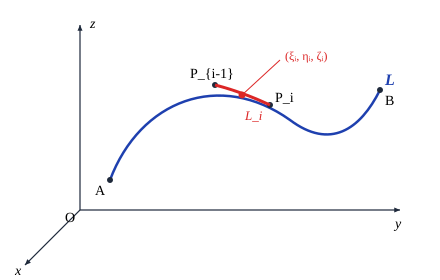
如图 14.1.1 将 $L$ 分成 $n$ 个小曲线段 $L_i$ ($i = 1, 2, \ldots, n$)，并在 $L_i$ 上任取一点 $(\xi_i, \eta_i, \zeta_i)$，那么当每个 $L_i$ 的长度 $\Delta s_i$ 都很小时，每一小段的质量就近似地等于 $\rho(\xi_i, \eta_i, \zeta_i)\Delta s_i$，于是整个 $L$ 的质量就近似地等于
$$\sum_{i=1}^n \rho(\xi_i, \eta_i, \zeta_i)\Delta s_i.$$当对 $L$ 的分割越来越细时（即所有的小弧段的最大长度 $\lambda$ 趋于零），这个近似值的极限就是构件的质量，因此就解决了所提出的问题．这种思想使我们引入第一类曲线积分的概念．
设 $L$ 是空间 $\mathbb{R}^3$ 上一条可求长的连续曲线，其端点为 $A$ 和 $B$，函数 $f(x, y, z)$ 在 $L$ 上有界．令 $A = P_0$，$B = P_n$，在 $L$ 上从 $A$ 到 $B$ 顺序地插入分点 $P_1, P_2, \ldots, P_{n-1}$，再分别在每个小弧段 $P_{i-1}P_i$ 上任取一点 $(\xi_i, \eta_i, \zeta_i)$，并记第 $i$ 个小弧段 $P_{i-1}P_i$ 的长度为 $\Delta s_i$ ($i = 1, 2, \ldots, n$)，作和式
$$\sum_{i=1}^n f(\xi_i, \eta_i, \zeta_i)\Delta s_i.$$如果当所有小弧段的最大长度 $\lambda = \max_{1\le i\le n}\Delta s_i$ 趋于零时，这个和式的极限存在，且与分点 $P_i$ 的取法及 $P_{i-1}P_i$ 上的点 $(\xi_i, \eta_i, \zeta_i)$ 的取法无关，则称这个极限值为 $f(x, y, z)$ 在曲线 $L$ 上的第一类曲线积分，记为
$$\int_L f(x, y, z)\,\mathrm{d}s \quad \text{或} \quad \int_L f(P)\,\mathrm{d}s.$$即
$$\int_L f(x, y, z)\,\mathrm{d}s = \lim_{\lambda \to 0} \sum_{i=1}^n f(\xi_i, \eta_i, \zeta_i)\Delta s_i,$$其中 $f(x, y, z)$ 称为被积函数，$L$ 称为积分路径．
这样，本节一开始所要求的构件质量就可表为
$$M = \int_L \rho(x, y, z)\,\mathrm{d}s.$$从定义可以看出，第一类曲线积分与积分路径的方向无关，且第一类曲线积分具有以下性质：
性质 1（线性性） 如果函数 $f, g$ 在 $L$ 上的第一类曲线积分存在，则对于任何常数 $\alpha, \beta$，$\alpha f + \beta g$ 在 $L$ 上的第一类曲线积分也存在，且成立
$$\int_L [\alpha f(x, y, z) + \beta g(x, y, z)]\,\mathrm{d}s = \alpha \int_L f(x, y, z)\,\mathrm{d}s + \beta \int_L g(x, y, z)\,\mathrm{d}s.$$性质 2（路径可加性） 设曲线 $L$ 分成了两段 $L_1, L_2$．如果函数 $f$ 在 $L$ 上的第一类曲线积分存在，则它在 $L_1$ 和 $L_2$ 上的第一类曲线积分也存在．反之，如果函数 $f$ 在 $L_1$ 和 $L_2$ 上的第一类曲线积分存在，则它在 $L$ 上的第一类曲线积分也存在，并成立
$$\int_L f\,\mathrm{d}s = \int_{L_1} f\,\mathrm{d}s + \int_{L_2} f\,\mathrm{d}s.$$现在讨论如何计算第一类曲线积分．设 $L$ 的方程为
$$x = x(t), \quad y = y(t), \quad z = z(t), \quad \alpha \le t \le \beta$$（这里假定 $x(t), y(t), z(t)$ 在 $[\alpha, \beta]$ 上具有连续的导函数，且 $(x'(t))^2 + (y'(t))^2 + (z'(t))^2 \ne 0$，这时称 $L$ 为光滑曲线），那么 $L$ 是可求长的，且曲线的弧长为
$$s = \int_\alpha^\beta \sqrt{(x'(t))^2 + (y'(t))^2 + (z'(t))^2}\,\mathrm{d}t.$$设 $L$ 为光滑曲线，函数 $f(x, y, z)$ 在 $L$ 上连续．则 $f(x, y, z)$ 在 $L$ 上的第一类曲线积分存在，且
$$\int_L f(x, y, z)\,\mathrm{d}s = \int_\alpha^\beta f(x(t), y(t), z(t))\sqrt{(x'(t))^2 + (y'(t))^2 + (z'(t))^2}\,\mathrm{d}t.$$记
$$I = \int_\alpha^\beta f(x(t), y(t), z(t))\sqrt{(x'(t))^2 + (y'(t))^2 + (z'(t))^2}\,\mathrm{d}t.$$将区间 $[\alpha, \beta]$ 分成 $n$ 个小区间 $[t_{i-1}, t_i]$，对应于 $L$ 上的分点 $P_i(x(t_i), y(t_i), z(t_i))$．记小弧段 $P_{i-1}P_i$ 的长度为 $\Delta s_i$，那么它的弧长为
$$\Delta s_i = \int_{t_{i-1}}^{t_i} \sqrt{(x'(t))^2 + (y'(t))^2 + (z'(t))^2}\,\mathrm{d}t = \sqrt{(x'(\tau_i))^2 + (y'(\tau_i))^2 + (z'(\tau_i))^2}\Delta t_i,$$其中 $\tau_i \in [t_{i-1}, t_i]$，$\Delta t_i = t_i - t_{i-1}$．取 $(\xi_i, \eta_i, \zeta_i) = (x(\tau_i), y(\tau_i), z(\tau_i))$，那么作出的和式
$$\sigma = \sum_{i=1}^n f(x(\tau_i), y(\tau_i), z(\tau_i))\sqrt{(x'(\tau_i))^2 + (y'(\tau_i))^2 + (z'(\tau_i))^2}\Delta t_i$$正好是定积分 $I$ 的一个 Riemann 和．对于每个小弧段 $P_{i-1}P_i$ 上任取的点 $(\xi_i, \eta_i, \zeta_i) = (x(t_i^*), y(t_i^*), z(t_i^*))$ ($t_i^* \in [t_{i-1}, t_i]$)，我们有
$$\left|\sum_{i=1}^n f(x(t_i^*), y(t_i^*), z(t_i^*))\Delta s_i - \sigma\right| \le \sum_{i=1}^n \left|f(x(t_i^*), y(t_i^*), z(t_i^*)) - f(x(\tau_i), y(\tau_i), z(\tau_i))\right|\Delta s_i.$$设 $L$ 的弧长为 $s$．由于 $f(x, y, z)$ 在紧集 $L$ 上连续，因此一致连续．所以对任意给定的正数 $\varepsilon$，当 $\lambda = \max(\Delta s_i)$ 充分小时，$f(x, y, z)$ 在每个弧段 $P_{i-1}P_i$ 上的振幅均小于 $\varepsilon/s$．于是成立
$$\left|\sum_{i=1}^n f(x(t_i^*), y(t_i^*), z(t_i^*))\Delta s_i - \sigma\right| < \frac{\varepsilon}{s}\sum_{i=1}^n \Delta s_i = \frac{\varepsilon}{s}\int_\alpha^\beta \sqrt{(x'(t))^2 + (y'(t))^2 + (z'(t))^2}\,\mathrm{d}t = \frac{\varepsilon}{s} s = \varepsilon.$$即
$$\int_L f(x, y, z)\,\mathrm{d}s = \lim_{\lambda \to 0} \sigma = I.$$特别地，如果平面光滑曲线 $L$ 的方程为
$$y = y(x), \quad a \le x \le b,$$则
$$\int_L f(x, y)\,\mathrm{d}s = \int_a^b f(x, y(x))\sqrt{1 + (y'(x))^2}\,\mathrm{d}x.$$计算 $I = \int_L \mathrm{e}^{\sqrt{x^2+y^2}}\,\mathrm{d}s$，其中 $L$ 为圆周 $x^2 + y^2 = a^2$、直线 $y = x$ 及 $x$ 轴在第一象限所围图形的边界（见图 14.1.2）．
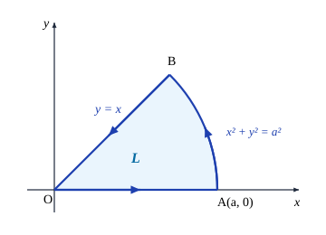
由于
$$I = \int_{\overline{OA}} \mathrm{e}^{\sqrt{x^2+y^2}}\,\mathrm{d}s + \int_{\overgroup{AB}} \mathrm{e}^{\sqrt{x^2+y^2}}\,\mathrm{d}s + \int_{\overline{OB}} \mathrm{e}^{\sqrt{x^2+y^2}}\,\mathrm{d}s,$$而线段 $OA$ 的方程为 $y = x, 0 \le x \le a/\sqrt{2}$，所以
$$\int_{\overline{OA}} \mathrm{e}^{\sqrt{x^2+y^2}}\,\mathrm{d}s = \int_0^{a/\sqrt{2}} \mathrm{e}^{\sqrt{2}x}\sqrt{2}\,\mathrm{d}x = \mathrm{e}^a - 1.$$圆弧 $AB$ 的参数方程为 $x = a\cos\theta, y = a\sin\theta, 0 \le \theta \le \pi/4$，所以
$$\int_{\overgroup{AB}} \mathrm{e}^{\sqrt{x^2+y^2}}\,\mathrm{d}s = \int_0^{\pi/4} \mathrm{e}^a a\,\mathrm{d}\theta = \frac{\pi}{4} a\mathrm{e}^a.$$线段 $OB$ 的方程为 $y = 0, 0 \le x \le a$，所以
$$\int_{\overline{OB}} \mathrm{e}^{\sqrt{x^2+y^2}}\,\mathrm{d}s = \int_0^a \mathrm{e}^x\,\mathrm{d}x = \mathrm{e}^a - 1.$$因此
$$I = 2(\mathrm{e}^a - 1) + \frac{\pi}{4}a\mathrm{e}^a.$$已知一条非均匀金属线 $L$ 的方程为
$$x = \mathrm{e}^t\cos t, \quad y = \mathrm{e}^t\sin t, \quad z = \mathrm{e}^t, \quad 0 \le t \le 1,$$它在每点的线密度与该点到原点的距离的平方成反比，而且在点 $(1, 0, 1)$ 处的线密度为 $1$．求它的质量 $M$．
由题意，$L$ 在 $(x, y, z)$ 点的线密度为
$$\rho(x, y, z) = \frac{k}{x^2 + y^2 + z^2} = \frac{k}{2\mathrm{e}^{2t}},$$其中 $k$ 为常数．由 $\rho(1, 0, 1) = 1$ 得 $k = 2$，所以 $\rho(x, y, z) = \mathrm{e}^{-2t}$．因此
$$M = \int_L \rho(x, y, z)\,\mathrm{d}s = \int_0^1 \mathrm{e}^{-2t}\sqrt{3}\mathrm{e}^t\,\mathrm{d}t = \sqrt{3}\int_0^1 \mathrm{e}^{-t}\,\mathrm{d}t = \sqrt{3}(1 - \mathrm{e}^{-1}).$$计算 $I = \int_L (x^2 + y^2 + 2z)\,\mathrm{d}s$，其中 $L$ 为球面 $x^2 + y^2 + z^2 = a^2$ 和平面 $x + y + z = 0$ 的交线．
由对称性得
$$\int_L x^2\,\mathrm{d}s = \int_L y^2\,\mathrm{d}s = \int_L z^2\,\mathrm{d}s = \frac{1}{3}\int_L (x^2 + y^2 + z^2)\,\mathrm{d}s.$$由于在 $L$ 上成立 $x^2 + y^2 + z^2 = a^2$，且 $L$ 是一个半径为 $a$ 的圆周，因此
$$\int_L (x^2 + y^2 + z^2)\,\mathrm{d}s = \int_L a^2\,\mathrm{d}s = a^2\int_L \mathrm{d}s = 2\pi a^3.$$同理
$$\int_L x\,\mathrm{d}s = \int_L y\,\mathrm{d}s = \int_L z\,\mathrm{d}s = \frac{1}{3}\int_L (x + y + z)\,\mathrm{d}s = \frac{1}{3}\int_L 0\,\mathrm{d}s = 0.$$于是
$$I = \int_L (x^2 + y^2 + 2z)\,\mathrm{d}s = \int_L x^2\,\mathrm{d}s + \int_L y^2\,\mathrm{d}s + 2\int_L z\,\mathrm{d}s = \frac{4}{3}\pi a^3.$$曲面的面积
设曲面 $\Sigma$ 的方程为
$$x = x(u, v), \quad y = y(u, v), \quad z = z(u, v), \quad (u, v) \in D,$$即
$$r = r(u, v) = x(u, v)i + y(u, v)j + z(u, v)k, \quad (u, v) \in D.$$这里 $D$ 为 $uv$ 平面上具有光滑（或分段光滑）边界的有界闭区域．假设这个映射是一一对应的（这样的曲面称为简单曲面），且 $x, y, z$ 对 $u$ 和 $v$ 有连续偏导数，相应的 Jacobi 矩阵
$$J = \begin{pmatrix} \dfrac{\partial x}{\partial u} & \dfrac{\partial x}{\partial v} \\ \dfrac{\partial y}{\partial u} & \dfrac{\partial y}{\partial v} \\ \dfrac{\partial z}{\partial u} & \dfrac{\partial z}{\partial v} \end{pmatrix}$$满秩，则曲面 $\Sigma$ 为光滑的．
在曲面 $\Sigma$ 上任取一点 $Q(x_0, y_0, z_0) = r(u_0, v_0)$，固定 $v = v_0$，$u$ 变化，得到 $\Sigma$ 上一条曲线 $r = r(u, v_0)$；固定 $u = u_0$，$v$ 变化，得到另一条曲线 $r = r(u_0, v)$．这两条曲线在 $Q$ 点的切向量分别为
$$r_u(u_0, v_0) = \frac{\partial x}{\partial u}(u_0, v_0)i + \frac{\partial y}{\partial u}(u_0, v_0)j + \frac{\partial z}{\partial u}(u_0, v_0)k,$$ $$r_v(u_0, v_0) = \frac{\partial x}{\partial v}(u_0, v_0)i + \frac{\partial y}{\partial v}(u_0, v_0)j + \frac{\partial z}{\partial v}(u_0, v_0)k.$$因此，Jacobi 矩阵满秩就保证了 $r_u(u_0, v_0)$ 与 $r_v(u_0, v_0)$ 线性无关．所以它们所张成的过 $Q$ 点的平面是存在的，这个平面称为曲面 $\Sigma$ 在点 $Q$ 的切平面，向量 $r_u(u_0, v_0) \times r_v(u_0, v_0)$ 称为曲面在点 $Q$ 处的法向量，它的长度 $|r_u(u_0, v_0) \times r_v(u_0, v_0)|$ 是以 $r_u$ 与 $r_v$ 为邻边的平行四边形的面积．
现在用微元法来计算曲面 $\Sigma$ 的面积．
首先考察 $D$ 中一个小矩形 $\sigma$，它的四个顶点为
$$P_1(u_0, v_0), \quad P_2(u_0+\Delta u, v_0), \quad P_3(u_0+\Delta u, v_0+\Delta v), \quad P_4(u_0, v_0+\Delta v).$$设 $\sigma$ 被映为 $\Sigma$ 上的以 $Q_1, Q_2, Q_3, Q_4$ 为顶点的小曲面片 $\widetilde{\sigma}$，这里 $Q_i = r(P_i)$ ($i = 1, 2, 3, 4$)（见图 14.1.3）．
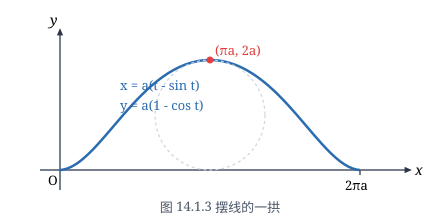
那么
$$\vec{Q_1Q_2} = r(u_0+\Delta u, v_0) - r(u_0, v_0) = r_u(u_0, v_0)\Delta u + o(\Delta u),$$ $$\vec{Q_1Q_4} = r(u_0, v_0+\Delta v) - r(u_0, v_0) = r_v(u_0, v_0)\Delta v + o(\Delta v),$$这里 $o(\Delta u), o(\Delta v)$ 表示向量，其模分别是 $\Delta u$ 和 $\Delta v$ 的高阶无穷小量．
显然，小曲面片 $\widetilde{\sigma}$ 的面积近似地等于 $\vec{Q_1Q_2}$ 与 $\vec{Q_1Q_4}$ 所张成的平行四边形的面积，忽略高阶无穷小量后，$\vec{Q_1Q_2}$ 与 $\vec{Q_1Q_4}$ 所张成的平行四边形的面积近似地等于 $\|r_u(u_0, v_0) \times r_v(u_0, v_0)\|\Delta u\Delta v$．这就是说，忽略高阶无穷小量后，小曲面片的面积近似地等于切平面的微元面积
$$\|r_u(u_0, v_0) \times r_v(u_0, v_0)\|\Delta u\Delta v.$$因此，曲面的面积微元
$$\mathrm{d}S = \|r_u(u, v) \times r_v(u, v)\|\,\mathrm{d}u\mathrm{d}v.$$于是，曲面的面积就为
$$S = \iint_D \|r_u(u, v) \times r_v(u, v)\|\,\mathrm{d}u\mathrm{d}v.$$显然，利用面积的可加性可以将曲面的面积的计算方法推广到由有限片这样的曲面拼成的分片光滑曲面上去．
至于如何计算曲面的面积，我们有以下的定理：
对满足上述假设条件的曲面 $\Sigma$，它的面积为
$$S = \iint_D \sqrt{EG - F^2}\,\mathrm{d}u\mathrm{d}v,$$其中
$$E = r_u \cdot r_u = x_u^2 + y_u^2 + z_u^2,$$ $$F = r_u \cdot r_v = x_u x_v + y_u y_v + z_u z_v,$$ $$G = r_v \cdot r_v = x_v^2 + y_v^2 + z_v^2,$$它们称为曲面的 Gauss 系数（或曲面的第一基本形式系数）．
由于
$$r_u \times r_v = \begin{vmatrix} i & j & k \\ \dfrac{\partial x}{\partial u} & \dfrac{\partial y}{\partial u} & \dfrac{\partial z}{\partial u} \\ \dfrac{\partial x}{\partial v} & \dfrac{\partial y}{\partial v} & \dfrac{\partial z}{\partial v} \end{vmatrix} = \frac{\partial(y, z)}{\partial(u, v)}i + \frac{\partial(z, x)}{\partial(u, v)}j + \frac{\partial(x, y)}{\partial(u, v)}k,$$则
$$\|r_u \times r_v\|^2 = \left(\frac{\partial(y, z)}{\partial(u, v)}\right)^2 + \left(\frac{\partial(z, x)}{\partial(u, v)}\right)^2 + \left(\frac{\partial(x, y)}{\partial(u, v)}\right)^2,$$而直接计算就得知
$$\left(\frac{\partial(y, z)}{\partial(u, v)}\right)^2 + \left(\frac{\partial(z, x)}{\partial(u, v)}\right)^2 + \left(\frac{\partial(x, y)}{\partial(u, v)}\right)^2 = EG - F^2.$$因此
$$\|r_u \times r_v\| = \sqrt{EG - F^2}.$$现在考虑两种特殊情况：
（1）曲面 $\Sigma$ 的方程为显式表示：$z = z(x, y), (x, y) \in D$，这里 $z(x, y)$ 在有界闭区域 $D$ 上具有连续偏导数，且 $D$ 为具有分段光滑边界的有界区域．
此时 $\Sigma$ 的参数方程可取为
$$x = x, \quad y = y, \quad z = z(x, y), \quad (x, y) \in D.$$因此
$$r_x = (1, 0, z_x), \quad r_y = (0, 1, z_y),$$ $$E = 1 + z_x^2, \quad F = z_x z_y, \quad G = 1 + z_y^2,$$ $$EG - F^2 = (1 + z_x^2)(1 + z_y^2) - (z_x z_y)^2 = 1 + z_x^2 + z_y^2.$$于是曲面面积的计算公式化为
$$S = \iint_D \sqrt{1 + z_x^2 + z_y^2}\,\mathrm{d}x\mathrm{d}y.$$（2）曲面 $\Sigma$ 的方程为 $H(x, y, z) = 0$，其中 $H(x, y, z)$ 具有连续偏导数，且在 $\Sigma$ 上 $H_z(x, y, z) \ne 0$．进一步假设 $\Sigma$ 在 $xy$ 平面上的投影将 $\Sigma$ 一一对应地映为具有分段光滑边界的有界区域 $D$．
这时由一一对应性，从 $H(x, y, z) = 0$ 就可得出 $z$ 为 $x, y$ 的函数：
$$z = f(x, y), \quad (x, y) \in D.$$遗憾的是 $f(x, y)$ 不一定可以显式表达．但由于在 $\Sigma$ 上 $H_z(x, y, z) \ne 0$，由隐函数存在定理知，
$$z_x = -\frac{H_x}{H_z}, \quad z_y = -\frac{H_y}{H_z},$$从而 $\Sigma$ 的面积为
$$S = \iint_D \sqrt{1 + \left(\frac{H_x}{H_z}\right)^2 + \left(\frac{H_y}{H_z}\right)^2}\,\mathrm{d}x\mathrm{d}y = \iint_D \frac{\sqrt{H_x^2 + H_y^2 + H_z^2}}{|H_z|}\,\mathrm{d}x\mathrm{d}y = \iint_D \frac{\|\operatorname{grad} H\|}{|H_z|}\,\mathrm{d}x\mathrm{d}y.$$求抛物面 $z = x^2 + y^2$ 被平面 $z = 1$ 所割下的有界部分 $\Sigma$ 的面积（见图 14.1.4）．
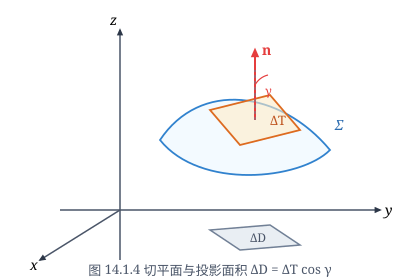
曲面 $\Sigma$ 的方程为 $z = x^2 + y^2, (x, y) \in D$，这里 $D$ 为圆盘 $x^2 + y^2 \le 1$．于是
$$S = \iint_D \sqrt{1 + z_x^2 + z_y^2}\,\mathrm{d}x\mathrm{d}y = \iint_D \sqrt{1 + 4(x^2 + y^2)}\,\mathrm{d}x\mathrm{d}y$$ $$= \int_0^{2\pi}\mathrm{d}\theta \int_0^1 \sqrt{1 + 4r^2}r\,\mathrm{d}r = \frac{5\sqrt{5} - 1}{6}\pi.$$设 $\Sigma$ 为球面 $x^2 + y^2 + z^2 = 2Rz$ 包含在锥面 $z^2 = 3(x^2 + y^2)$ 内的部分（见图 14.1.5），求它的面积．
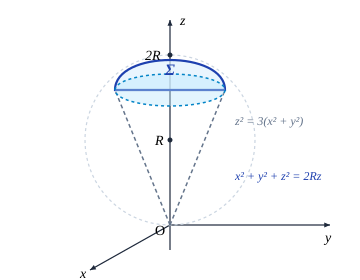
在球面坐标
$$x = r\sin\varphi\cos\theta, \quad y = r\sin\varphi\sin\theta, \quad z = r\cos\varphi$$下，所给的球面方程为 $r = 2R\cos\varphi$，于是 $\Sigma$ 的参数方程为
$$x = 2R\sin\varphi\cos\varphi\cos\theta, \quad y = 2R\sin\varphi\cos\varphi\sin\theta, \quad z = 2R\cos^2\varphi,$$其中 $0 \le \theta \le 2\pi, 0 \le \varphi \le \pi/6$．经计算可知
$$EG - F^2 = 4R^4\sin^2 2\varphi.$$注意到对称性，$\Sigma$ 的面积为它在第一卦限部分面积的 $4$ 倍，所以 $\Sigma$ 的面积为
$$S = 4\iint_{\substack{0\le\theta\le\pi/2\\0\le\varphi\le\pi/6}} 2R^2\sin 2\varphi\,\mathrm{d}\varphi\mathrm{d}\theta = 8R^2\int_0^{\pi/2}\mathrm{d}\theta \int_0^{\pi/6}\sin 2\varphi\,\mathrm{d}\varphi = \pi R^2.$$取隐式方程 $H(x, y, z) = x^2 + y^2 + z^2 - 2Rz = 0$，偏导数为
$$H_x = 2x, \quad H_y = 2y, \quad H_z = 2z - 2R.$$利用隐式曲面面积计算公式得
$$S = \iint_D \frac{\sqrt{4x^2 + 4y^2 + 4(z-R)^2}}{|2z - 2R|}\,\mathrm{d}x\mathrm{d}y = \iint_D \frac{\sqrt{x^2 + y^2 + (z-R)^2}}{|z-R|}\,\mathrm{d}x\mathrm{d}y.$$注意到在球面上成立 $x^2 + y^2 + (z-R)^2 = R^2$，就得到
$$S = \iint_D \frac{R}{\sqrt{R^2 - (x^2+y^2)}}\,\mathrm{d}x\mathrm{d}y = R\int_0^{2\pi}\mathrm{d}\theta \int_0^{\sqrt{3}R/2} \frac{r}{\sqrt{R^2-r^2}}\,\mathrm{d}r = \pi R^2.$$在计算二重积分时，利用了极坐标变换．
设一元函数 $f(x)$ 在 $[a, b]$ 上具有连续导数，且满足 $f(x) > 0$，求曲线 $y = f(x)$ 绕 $x$ 轴旋转一周所成的旋转曲面的面积 $S$．
由对称性，该旋转曲面的面积是曲面在 $y \ge 0, z \ge 0$ 部分的面积的 $4$ 倍，而旋转曲面在 $y \ge 0, z \ge 0$ 部分的方程为
$$z = \sqrt{f^2(x) - y^2}, \quad a \le x \le b, \quad 0 \le y \le f(x).$$由于
$$z_x = \frac{f(x)f'(x)}{\sqrt{f^2(x) - y^2}}, \quad z_y = -\frac{y}{\sqrt{f^2(x) - y^2}},$$所以
$$S = 4\iint_D \sqrt{1 + z_x^2 + z_y^2}\,\mathrm{d}x\mathrm{d}y = 4\iint_D \frac{f(x)\sqrt{1 + (f'(x))^2}}{\sqrt{f^2(x) - y^2}}\,\mathrm{d}x\mathrm{d}y$$ $$= 4\int_a^b f(x)\sqrt{1 + (f'(x))^2}\,\mathrm{d}x \int_0^{f(x)} \frac{\mathrm{d}y}{\sqrt{f^2(x) - y^2}} = 2\pi \int_a^b f(x)\sqrt{1 + (f'(x))^2}\,\mathrm{d}x.$$这与第七章第 4 节的结论相吻合．注意上式中的二重积分是反常积分，请读者思考一下直接应用计算曲面面积公式的理由．
Schwarz 的例子
我们将光滑曲线的内接折线长度的极限定义为曲线的弧长，但这一定义不能推广到光滑曲面的面积定义上去．Schwarz 曾举过一个例子：即使对一段圆柱面，都无法用"内接多面形之面积的极限"来定义它的面积．
设一圆柱面的高是 $h$，半径是 $r$，那么它的面积显然是 $2\pi rh$．在这个圆柱面上取三点 $A, B$ 和 $C$，使得 $A, B$ 在同一高度上，而 $C$ 和 $A, B$ 不在同一高度上，且 $C$ 在 $A, B$ 的连线上的投影 $C'$ 恰是线段 $AB$ 的中点（见图 14.1.6）．
作三角形 $ABC$，则它是圆柱面的一个内接多边形．再如图 14.1.7 那样，作出圆柱面的内接多面形，它是由许多三角形连结起来的，每一个三角形都如同三角形 $ABC$．问题是当这些三角形的直径都趋于 $0$ 时，它们的面积之和的极限是否为圆柱面的面积 $2\pi rh$ 呢？
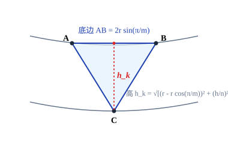
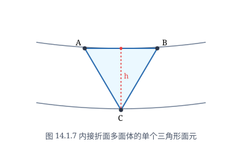
把圆柱面的底圆 $m$ 等分，高 $n$ 等分，这时图 14.1.7 中的三角形共有 $2mn$ 个，并且都是全等的．易计算每个三角形的底边（即平行于底圆的边）长是 $2r\sin\frac{\pi}{m}$，高是 $\sqrt{\left(r - r\cos\frac{\pi}{m}\right)^2 + \left(\frac{h}{n}\right)^2} = \sqrt{4r^2\sin^4\frac{\pi}{2m} + \frac{h^2}{n^2}}$，那么其面积为
$$\frac{1}{2} \cdot 2r\sin\frac{\pi}{m} \sqrt{4r^2\sin^4\frac{\pi}{2m} + \frac{h^2}{n^2}}.$$于是所有小三角形组成的内接多面形的面积 $S_{mn}$ 为
$$S_{mn} = 2mn r \sin\frac{\pi}{m} \sqrt{4r^2\sin^4\frac{\pi}{2m} + \frac{h^2}{n^2}} = 2\pi rh \left(\frac{\sin\frac{\pi}{m}}{\frac{\pi}{m}}\right) \sqrt{\frac{4r^2}{h^2}\left(\frac{m^2}{n}\right)^2\left(\frac{\sin\frac{\pi}{2m}}{\frac{\pi}{2m}}\right)^4 \left(\frac{\pi}{2}\right)^4 + 1}.$$由于当 $m \to \infty, n \to \infty$ 时，上式中两圆括号内的值都趋于 $1$，因此 $S_{mn}$ 的极限与 $\frac{m^2}{n}$ 的极限有关．当 $\frac{m^2}{n}$ 的极限不存在时，$S_{mn}$ 的极限也不存在；当 $\frac{m^2}{n}$ 有极限 $l$ 时，$S_{mn}$ 的极限为
$$S(l) = 2\pi rh \sqrt{1 + \frac{\pi^4 r^2}{4h^2}l^2}.$$这一极限与 $l$ 有关，即与 $m, n$ 同时趋于无穷大的方式有关．只有当 $l = 0$ 时它才是圆柱面的面积 $2\pi rh$．
由于 $m, n$ 可以各自独立地趋于无穷大，所以 $S_{mn}$ 确实没有一个与 $m, n$ 增加方式无关的极限．也就是说，无法用"内接多面形之面积的极限"来定义曲面的面积．
再来看一下 $l = 0$ 的几何意义：设 $\theta$ 是三角形所在平面与圆柱面母线的夹角（见图 14.1.8），那么当 $l = 0$，即 $\frac{m^2}{n} \to 0$ 时，显然有
这说明只有当三角形所在的平面趋于切平面时，$S_{mn}$ 才可能以圆柱面的面积为极限．这正好与前面关于曲面面积的讨论相吻合．
第一类曲面积分
设空间中一曲面 $\Sigma$ 上分布着质量，任一点 $(x, y, z)$ 处的面密度（单位面积上的质量）由分布函数 $\rho(x, y, z)$ 确定，问如何求出 $\Sigma$ 上的总质量．
显然，这个问题本质上与前面计算分布着质量的曲线的总质量思想是类似的，因此解决问题的思路也是相同的：先把曲面 $\Sigma$ 分成一些小片，估计每一小片上的质量并相加，最后取极限以获得精确值．这同样是一个积分的概念．
设曲面 $\Sigma$ 为有界光滑（或分片光滑）曲面，函数 $u = f(x, y, z)$ 在 $\Sigma$ 上有界．将曲面 $\Sigma$ 用一个光滑曲线网分成几片小曲面 $\Delta\Sigma_1, \Delta\Sigma_2, \ldots, \Delta\Sigma_n$，并记 $\Delta\Sigma_i$ 的面积为 $\Delta S_i$．在每片 $\Delta\Sigma_i$ 上任取一点 $(\xi_i, \eta_i, \zeta_i)$，作和式
$$\sum_{i=1}^n f(\xi_i, \eta_i, \zeta_i)\Delta S_i.$$如果当所有小曲面 $\Delta\Sigma_i$ 的最大直径 $\lambda$ 趋于零时，这个和式的极限存在，且极限值与小曲面的分法和点 $(\xi_i, \eta_i, \zeta_i)$ 的取法无关，则称此极限值为 $f(x, y, z)$ 在曲面 $\Sigma$ 上的第一类曲面积分，记为 $\iint_\Sigma f(x, y, z)\,\mathrm{d}S$，即
$$\iint_\Sigma f(x, y, z)\,\mathrm{d}S = \lim_{\lambda \to 0} \sum_{i=1}^n f(\xi_i, \eta_i, \zeta_i)\Delta S_i,$$其中 $f(x, y, z)$ 称为被积函数，$\Sigma$ 称为积分曲面．
这样，本小节一开始所要求的曲面 $\Sigma$ 上的总质量为
$$M = \iint_\Sigma \rho(x, y, z)\,\mathrm{d}S.$$由第一类曲面积分与第一类曲线积分的定义可以推断出，第一类曲线积分的性质与计算方法，只要稍作处理，就可以移植到第一类曲面积分上来，因此以下结论不再重复证明了．
设 $\Sigma$ 的方程为
$$x = x(u, v), \quad y = y(u, v), \quad z = z(u, v), \quad (u, v) \in D,$$这里 $D$ 为 $uv$ 平面上具有分段光滑边界的区域．进一步设这个映射是一一对应的，且满足本节第二部分开始时的假设．那么如果 $f(x, y, z)$ 在 $\Sigma$ 上连续，则它在 $\Sigma$ 上的第一类曲面积分存在，且成立以下计算公式：
$$\iint_\Sigma f(x, y, z)\,\mathrm{d}S = \iint_D f(x(u, v), y(u, v), z(u, v))\sqrt{EG - F^2}\,\mathrm{d}u\mathrm{d}v.$$特别地，当 $\Sigma$ 的方程为
$$z = z(x, y), \quad (x, y) \in D,$$时，成立
$$\iint_\Sigma f(x, y, z)\,\mathrm{d}S = \iint_D f(x, y, z(x, y))\sqrt{1 + z_x^2 + z_y^2}\,\mathrm{d}x\mathrm{d}y.$$计算 $I = \iint_\Sigma \sqrt{\dfrac{x^2}{a^4} + \dfrac{y^2}{b^4} + \dfrac{z^2}{c^4}}\,\mathrm{d}S$，其中 $\Sigma$ 为椭球面 $\dfrac{x^2}{a^2} + \dfrac{y^2}{b^2} + \dfrac{z^2}{c^2} = 1$ ($a, b, c > 0$)．
椭球面的参数方程为
$$x = a\sin\varphi\cos\theta, \quad y = b\sin\varphi\sin\theta, \quad z = c\cos\varphi,$$其中 $0 \le \theta \le 2\pi, 0 \le \varphi \le \pi$．经计算得到
$$\frac{\partial(y, z)}{\partial(\varphi, \theta)} = bc\sin^2\varphi\cos\theta, \quad \frac{\partial(z, x)}{\partial(\varphi, \theta)} = ac\sin^2\varphi\sin\theta, \quad \frac{\partial(x, y)}{\partial(\varphi, \theta)} = ab\sin\varphi\cos\varphi,$$所以
$$\sqrt{EG - F^2} = abc\sin\varphi \sqrt{\frac{\cos^2\theta\sin^2\varphi}{a^2} + \frac{\sin^2\theta\sin^2\varphi}{b^2} + \frac{\cos^2\varphi}{c^2}}.$$而这时被积函数化为
$$\sqrt{\frac{x^2}{a^4} + \frac{y^2}{b^4} + \frac{z^2}{c^4}} = \sqrt{\frac{\cos^2\theta\sin^2\varphi}{a^2} + \frac{\sin^2\theta\sin^2\varphi}{b^2} + \frac{\cos^2\varphi}{c^2}}.$$由被积函数与积分曲面的对称性，它在第一卦限的积分后再乘 $8$ 即所求．所以
$$I = 8\iint_{\left[0, \frac{\pi}{2}\right]\times\left[0, \frac{\pi}{2}\right]} abc\left(\frac{\cos^2\theta\sin^2\varphi}{a^2} + \frac{\sin^2\theta\sin^2\varphi}{b^2} + \frac{\cos^2\varphi}{c^2}\right)\sin\varphi\,\mathrm{d}\varphi\mathrm{d}\theta$$ $$= \frac{4}{3}\pi abc\left(\frac{1}{a^2} + \frac{1}{b^2} + \frac{1}{c^2}\right).$$设圆锥面 $z^2 = x^2 + y^2$（见图 14.1.9）上具有均匀的单位面密度，它被平面 $z = a$ 和 $z = b$ ($0 < a < b$) 所截部分为 $\Sigma$．求 $\Sigma$ 对位于原点处、具有单位质量的质点的引力．
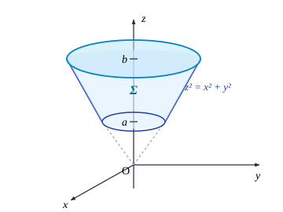
设 $\Sigma$ 对质点的引力为 $F = (F_x, F_y, F_z)$，由对称性，引力在 $x$ 轴和 $y$ 轴方向的分量为零，即 $F_x = F_y = 0$．
对于曲面上任一点 $P(x, y, z)$，包含它的曲面面积微元 $\mathrm{d}S$ 所具有的质量为 $1\cdot\mathrm{d}S$．由万有引力定律，$\mathrm{d}S$ 对锥面顶点处的质点的引力在 $z$ 轴上的分量为
$$\mathrm{d}F_z = G\frac{\mathrm{d}S}{x^2 + y^2 + z^2}\cos\alpha,$$其中 $G$ 为万有引力常量，而 $\alpha$ 为矢径 $\vec{OP}$ 与 $z$ 轴之间的夹角，它恰好为锥面的半顶角 $\pi/4$，所以由微元法可知
$$F_z = \iint_\Sigma G\frac{\cos\alpha}{x^2 + y^2 + z^2}\,\mathrm{d}S = \frac{\sqrt{2}}{2}G\iint_\Sigma \frac{\mathrm{d}S}{x^2 + y^2 + z^2}.$$在 $xy$ 平面上用极坐标计算，注意到 $\mathrm{d}S = \sqrt{1 + z_x^2 + z_y^2}\,\mathrm{d}x\mathrm{d}y = \sqrt{2}\,\mathrm{d}x\mathrm{d}y$，得
$$F_z = \frac{\sqrt{2}}{2}G\iint_D \frac{\sqrt{2}}{2(x^2 + y^2)}\,\mathrm{d}x\mathrm{d}y = \frac{G}{2}\int_0^{2\pi}\mathrm{d}\theta \int_a^b \frac{r}{r^2}\,\mathrm{d}r = \pi G\ln\frac{b}{a}.$$因此引力为 $F = \left(0, 0, \pi G\ln\frac{b}{a}\right)$．
通讯卫星的电波覆盖的地球面积
将通讯卫星发射到赤道的上空，使它位于赤道所在的平面内．如果卫星自西向东地绕地球飞行一周的时间正好等于地球自转一周的时间，那么它始终在地球某一个位置的上空，即相对静止的．这样的卫星称地球同步卫星．
现在来计算该卫星的电波所能覆盖的地球的表面积．为简化问题，把地球看成一个球体，且不考虑其他天体对卫星的影响．
我们已经知道，地球的半径 $R$ 为 $6371\text{ km}$，地球自转的角速度 $\omega = \frac{2\pi}{24\times 3600}$，由于卫星绕地球飞行一周的时间，正好等于地球自转一周的时间，因此 $\omega$ 也就是卫星绕地球飞行的角速度．
我们先确定卫星离地面的高度 $h$．要使卫星不会脱离其预定轨道，卫星所受地球的引力必须与它绕地球飞行所受的离心力相等，即
$$\frac{GMm}{(R+h)^2} = m\omega^2(R+h),$$其中 $M$ 为地球的质量，$m$ 为卫星的质量，$G$ 是引力常量．由于重力加速度（即在地面的单位质量所受的引力）$g = \frac{GM}{R^2}$，那么从上式得
$$(R+h)^3 = \frac{gR^2}{\omega^2},$$于是
$$h = \sqrt[3]{\frac{gR^2}{\omega^2}} - R.$$将 $R = 6\,371\,000$，$g = 9.8$，$\omega = \frac{2\pi}{24\times 3600}$ 代入上式，就得到卫星离地面的高度为
$$h = \sqrt[3]{\frac{9.8 \times 6\,371\,000^2 \times 24^2 \times 3600^2}{4\pi^2}} - 6\,371\,000 \approx 36\,000\,000\text{ (m)} = 36\,000\text{ (km)}.$$为计算卫星的电波所覆盖的地球表面的面积，取地心为坐标原点．取过地心与卫星中心、方向从地心到卫星中心的有向直线为 $z$ 轴（见图 14.1.10，为简明起见，只画出了 $xz$ 平面），则卫星的电波所覆盖的地球表面的面积为
$$S = \iint_\Sigma \mathrm{d}S,$$其中 $\Sigma$ 是上半球面 $x^2 + y^2 + z^2 = R^2$ ($z \ge 0$) 上满足 $z \ge R\cos\alpha$ 的部分，即
$$\cos\alpha = \frac{R}{R+h}.$$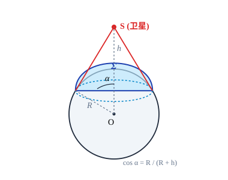
利用第一类曲面积分的计算公式得
$$S = \iint_D \frac{R}{\sqrt{R^2 - x^2 - y^2}}\,\mathrm{d}x\mathrm{d}y,$$这里 $D$ 为 $xy$ 平面上区域：$\{(x, y) \mid x^2 + y^2 \le R^2\sin^2\alpha\}$．利用极坐标变换，得
$$S = \int_0^{2\pi}\mathrm{d}\theta \int_0^{R\sin\alpha} \frac{R}{\sqrt{R^2 - r^2}}r\,\mathrm{d}r = 2\pi R^2(1 - \cos\alpha).$$因为 $\cos\alpha = \frac{R}{R+h}$，所以
$$S = 2\pi R^2\frac{h}{R+h} = 2\pi \times 6\,371\,000^2 \times \frac{36\,000\,000}{6\,371\,000 + 36\,000\,000}$$ $$\approx 2.16685 \times 10^{14}\text{ (m}^2\text{)} = 2.16685 \times 10^8\text{ (km}^2\text{)}.$$我们再看一个有趣现象．由于
$$S = 2\pi R^2\frac{h}{R+h} = 4\pi R^2 \frac{h}{2(R+h)},$$且 $4\pi R^2$ 正是地球的表面积，而
$$\frac{h}{2(R+h)} = \frac{36\,000\,000}{2(6\,371\,000 + 36\,000\,000)} \approx 0.4248.$$因此，卫星的电波覆盖了地球表面三分之一以上的面积．于是，从理论上说，只要在赤道上空使用三颗相间 $2\pi/3$ 的通讯卫星，它们的电波就可以覆盖几乎整个地球表面．
习题 14.1
- 求下列第一类曲线积分：
- $\displaystyle\int_L (x + y)\,\mathrm{d}s$，其中 $L$ 是以 $O(0, 0), A(1, 0), B(0, 1)$ 为顶点的三角形；
- $\displaystyle\int_L |y|\,\mathrm{d}s$，其中 $L$ 为单位圆周 $x^2 + y^2 = 1$；
- $\displaystyle\int_L |x|^{1/3}\,\mathrm{d}s$，其中 $L$ 为星形线 $x^{2/3} + y^{2/3} = a^{2/3}$；
- $\displaystyle\int_L |x|\,\mathrm{d}s$，其中 $L$ 为双纽线 $(x^2 + y^2)^2 = x^2 - y^2$；
- $\displaystyle\int_L (x^2 + y^2 + z^2)\,\mathrm{d}s$，$L$ 为一段螺旋线 $x = a\cos t, y = a\sin t, z = bt, 0 \le t \le 2\pi$；
- $\displaystyle\int_L xyz\,\mathrm{d}s$，其中 $L$ 为曲线 $x = t, y = \dfrac{2\sqrt{2t^3}}{3}, z = \dfrac{1}{2}t^2$ 上相应于 $t$ 从 $0$ 变到 $1$ 的一段弧；
- $\displaystyle\int_L (xy + yz + zx)\,\mathrm{d}s$，其中 $L$ 为球面 $x^2 + y^2 + z^2 = a^2$ 和平面 $x + y + z = 0$ 的交线．
- 求椭圆周 $x = a\cos t, y = b\sin t, 0 \le t \le 2\pi$ 的质量，已知曲线在点 $M(x, y)$ 处的线密度是 $\rho(x, y) = |y|$．
- 求下列曲面的面积：
- $z = axy$ 包含在圆柱面 $x^2 + y^2 = a^2$ ($a > 0$) 内的部分；
- 锥面 $x^2 + y^2 = \dfrac{1}{3}z^2$ ($z \ge 0$) 被平面 $x + y + z = 2a$ ($a > 0$) 所截的部分；
- 球面 $x^2 + y^2 + z^2 = a^2$ 包含在锥面 $z = \sqrt{x^2 + y^2}$ 内的部分；
- 圆柱面 $x^2 + y^2 = a^2$ 被两平面 $x + z = 0, x - z = 0$ ($x > 0, y > 0$) 所截部分；
- 抛物面 $x^2 + y^2 = 2az$ 包含在柱面 $(x^2 + y^2)^2 = 2a^2 xy$ ($a > 0$) 内的部分；
- 环面 $\begin{cases} x = (b + a\cos\theta)\cos\varphi, \\ y = (b + a\cos\theta)\sin\varphi, \\ z = a\sin\theta, \end{cases} \quad 0 \le \theta \le 2\pi, 0 \le \varphi \le 2\pi$，其中 $0 < a < b$．
- 求下列第一类曲面积分：
- $\displaystyle\iint_\Sigma (x + y + z)\,\mathrm{d}S$，其中 $\Sigma$ 是左半球面 $x^2 + y^2 + z^2 = a^2, y \le 0$；
- $\displaystyle\iint_\Sigma (x^2 + y^2)\,\mathrm{d}S$，其中 $\Sigma$ 是区域 $\{(x, y, z) \mid \sqrt{x^2 + y^2} \le z \le 1\}$ 的边界；
- $\displaystyle\iint_\Sigma (xy + yz + zx)\,\mathrm{d}S$，其中 $\Sigma$ 是锥面 $z = \sqrt{x^2 + y^2}$ 被柱面 $x^2 + y^2 = 2ax$ 所截部分；
- $\displaystyle\iint_\Sigma \dfrac{1}{x^2 + y^2 + z^2}\,\mathrm{d}S$，其中 $\Sigma$ 是圆柱面 $x^2 + y^2 = a^2$ 介于平面 $z = 0$ 与 $z = H$ 之间的部分；
- $\displaystyle\iint_\Sigma \left(\dfrac{x^2}{2} + \dfrac{y^2}{3} + \dfrac{z^2}{4}\right)\,\mathrm{d}S$，其中 $\Sigma$ 是球面 $x^2 + y^2 + z^2 = a^2$；
- $\displaystyle\iint_\Sigma (x^3 + y^2 + z)\,\mathrm{d}S$，其中 $\Sigma$ 是抛物面 $2z = x^2 + y^2$ 介于平面 $z = 0$ 与 $z = 8$ 之间的部分；
- $\displaystyle\iint_\Sigma z\,\mathrm{d}S$，其中 $\Sigma$ 是螺旋面 $x = u\cos v, y = u\sin v, z = v, 0 \le u \le a, 0 \le v \le 2\pi$ 的一部分．
- 设球面 $\Sigma$ 的半径为 $R$，球心在球面 $x^2 + y^2 + z^2 = a^2$ 上．问当 $R$ 为何值时，$\Sigma$ 在球面 $x^2 + y^2 + z^2 = a^2$ 内部的面积最大？并求该最大面积．
- 求密度为 $\rho(x, y) = z$ 的抛物面壳 $z = \dfrac{1}{2}(x^2 + y^2), 0 \le z \le 1$ 的质量与质心．
- 求均匀球面（半径是 $a$，密度是 $1$）对不在该球面上的质点（质量为 $1$）的引力．
- 设 $u(x, y, z)$ 为连续函数，它在 $M(x_0, y_0, z_0)$ 处有连续的二阶偏导数．记 $\Sigma$ 为以 $M$ 点为中心，半径为 $R$ 的球面，以及
$$T(R) = \frac{1}{4\pi R^2}\iint_\Sigma u(x, y, z)\,\mathrm{d}S.$$
- 证明：$\lim\limits_{R\to 0} T(R) = u(x_0, y_0, z_0)$；
- 若 $\left.\left(\dfrac{\partial^2 u}{\partial x^2} + \dfrac{\partial^2 u}{\partial y^2} + \dfrac{\partial^2 u}{\partial z^2}\right)\right|_{(x_0, y_0, z_0)} \ne 0$，求当 $R \to 0$ 时无穷小量 $T(R) - u(x_0, y_0, z_0)$ 的主要部分．
- 设 $\Sigma$ 为上半椭球面 $\dfrac{x^2}{2} + \dfrac{y^2}{2} + z^2 = 1$ ($z \ge 0$)，$\pi$ 为 $\Sigma$ 在点 $P(x, y, z)$ 处的切平面，$\rho(x, y, z)$ 为原点 $O(0, 0, 0)$ 到平面 $\pi$ 的距离，求 $$\iint_\Sigma \frac{z}{\rho(x, y, z)}\,\mathrm{d}S.$$
- 设 $\Sigma$ 是单位球面 $x^2 + y^2 + z^2 = 1$．证明 $$\iint_\Sigma f(ax + by + cz)\,\mathrm{d}S = 2\pi \int_{-1}^1 f\left(u\sqrt{a^2 + b^2 + c^2}\right)\mathrm{d}u,$$ 其中 $a, b, c$ 为不全为零的常数，$f(u)$ 是 $|u| \le \sqrt{a^2 + b^2 + c^2}$ 上的一元连续函数．
- 设有一高度为 $h(t)$（$t$ 为时间）的雪堆在融化过程中，其侧面满足方程（设长度单位为 $\text{cm}$，时间单位为 $\text{h}$） $$z = h(t) - \frac{2(x^2 + y^2)}{h(t)}.$$ 已知体积减少的速率与侧面积成正比（比例系数 $0.9$）．问高度为 $130\text{ cm}$ 的雪堆全部融化需多少时间？
§2 第二类曲线积分与第二类曲面积分
第二类曲线积分
设 $L$ 为空间中一条光滑曲线，起点为 $A$，终点为 $B$（这时称 $L$ 为定向的）．一个质点在力
$$F(x, y, z) = P(x, y, z)i + Q(x, y, z)j + R(x, y, z)k$$的作用下沿 $L$ 从 $A$ 移动到 $B$，我们要计算 $F(x, y, z)$ 所做的功．
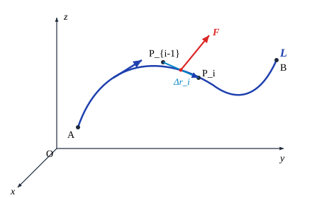
为了解决这个问题，在曲线 $L$ 上插入一些分点
$$P_0, P_1, P_2, \ldots, P_n,$$并令 $P_0(x_0, y_0, z_0) = A, P_n(x_n, y_n, z_n) = B$（见图 14.2.1），并且这些点是从 $A$ 到 $B$ 计数的．这样一来，$L$ 被这些分点分成 $n$ 个小弧段 $P_{i-1}P_i$ ($i = 1, 2, \ldots, n$)．在小弧段 $P_{i-1}P_i$ 上任取一点 $K_i(\xi_i, \eta_i, \zeta_i)$，取曲线 $L$ 在 $K_i$ 的单位切向量
$$T_i = \cos\alpha_i i + \cos\beta_i j + \cos\gamma_i k,$$使它的方向与 $L$ 的定向相一致．那么质点从 $P_{i-1}$ 移动到 $P_i$ 时（$i = 1, 2, \ldots, n$），$F$ 所做的
功近似地等于
$$F(\xi_i, \eta_i, \zeta_i) \cdot T_i \Delta s_i = [P(\xi_i, \eta_i, \zeta_i)\cos\alpha_i + Q(\xi_i, \eta_i, \zeta_i)\cos\beta_i + R(\xi_i, \eta_i, \zeta_i)\cos\gamma_i]\Delta s_i,$$这里 $\Delta s_i$ 是小弧段 $P_{i-1}P_i$ 的弧长．因此 $F$ 将质点沿 $L$ 从 $A$ 移动到 $B$ 所做的功为
$$W = \lim_{\lambda \to 0} \sum_{i=1}^n F(\xi_i, \eta_i, \zeta_i) \cdot T_i \Delta s_i$$ $$= \lim_{\lambda \to 0} \sum_{i=1}^n [P(\xi_i, \eta_i, \zeta_i)\cos\alpha_i + Q(\xi_i, \eta_i, \zeta_i)\cos\beta_i + R(\xi_i, \eta_i, \zeta_i)\cos\gamma_i]\Delta s_i$$ $$= \int_L [P(x, y, z)\cos\alpha + Q(x, y, z)\cos\beta + R(x, y, z)\cos\gamma]\,\mathrm{d}s,$$其中 $\lambda$ 为所有的小弧段的最大长度．
根据这种思想我们引入下面的定义．
设 $L$ 为一条定向的光滑曲线，起点为 $A$，终点为 $B$．在 $L$ 上每一点取单位切向量 $T = (\cos\alpha, \cos\beta, \cos\gamma)$，使它与 $L$ 的定向相一致．设
$$f(x, y, z) = P(x, y, z)i + Q(x, y, z)j + R(x, y, z)k$$是定义在 $L$ 上的向量值函数，则称
$$\int_L f \cdot T\,\mathrm{d}s = \int_L [P(x, y, z)\cos\alpha + Q(x, y, z)\cos\beta + R(x, y, z)\cos\gamma]\,\mathrm{d}s$$为 $f$ 在 $L$ 上的第二类曲线积分（如果右面的第一类曲线积分存在的话）．
在曲线 $L$ 上的点 $(x, y, z)$ 处取一个 $L$ 的弧长微元 $\mathrm{d}s$，作向量 $\mathrm{d}s = T\,\mathrm{d}s$，其中 $T = (\cos\alpha, \cos\beta, \cos\gamma)$ 为曲线 $L$ 在点 $(x, y, z)$ 处与 $L$ 同向的单位切向量．那么 $\mathrm{d}s$ 在 $x$ 轴上的投影是 $\cos\alpha\,\mathrm{d}s$，因此可记为 $\mathrm{d}x$，即 $\mathrm{d}x = \cos\alpha\,\mathrm{d}s$．同理记 $\mathrm{d}y = \cos\beta\,\mathrm{d}s, \mathrm{d}z = \cos\gamma\,\mathrm{d}s$．于是，第二类曲线积分又可以表示为
$$\int_L P(x, y, z)\,\mathrm{d}x + Q(x, y, z)\,\mathrm{d}y + R(x, y, z)\,\mathrm{d}z.$$它也称为 1-形式 $\omega = P(x, y, z)\,\mathrm{d}x + Q(x, y, z)\,\mathrm{d}y + R(x, y, z)\,\mathrm{d}z$ 在 $L$ 上的第二类曲线积分，记为 $\int_L \omega$．
特别地，如果 $L$ 为 $xy$ 平面上的定向光滑曲线段，第二类曲线积分就简化为
$$\int_L P(x, y)\,\mathrm{d}x + Q(x, y)\,\mathrm{d}y = \int_L [P(x, y)\cos\alpha + Q(x, y)\cos\beta]\,\mathrm{d}s = \int_L [P(x, y)\cos\alpha + Q(x, y)\sin\alpha]\,\mathrm{d}s,$$其中 $\alpha$ 为 $L$ 的沿 $L$ 方向的切向量与 $x$ 轴正向的夹角．
第二类曲线积分定义在定向曲线（即指定了方向的曲线）上，它具有如下性质：
性质 1（方向性） 设向量值函数 $f$ 在定向的分段光滑曲线 $L$ 上的第二类曲线积分存在．记 $-L$ 是定向曲线 $L$ 的反向曲线，则 $f$ 在 $-L$ 上的第二类曲线积分也存在，且成立
$$\int_{-L} f \cdot T\,\mathrm{d}s = -\int_L f \cdot T\,\mathrm{d}s.$$注意这个等式两边的 $T$ 是方向相反的．
性质 2（线性性） 设两个向量值函数 $f, g$ 在定向的分段光滑曲线 $L$ 上的第二类曲
线积分存在，则对于任何常数 $\alpha, \beta$，$\alpha f + \beta g$ 在 $L$ 上的第二类曲线积分也存在，且成立
$$\int_L (\alpha f + \beta g) \cdot T\,\mathrm{d}s = \alpha \int_L f \cdot T\,\mathrm{d}s + \beta \int_L g \cdot T\,\mathrm{d}s.$$性质 3（路径可加性） 设定向分段光滑曲线 $L$ 分成了两段 $L_1$ 和 $L_2$，它们与 $L$ 的取向相同（这时记为 $L = L_1 + L_2$），如果向量值函数 $f$ 在 $L$ 上的第二类曲线积分存在，则它在 $L_1$ 和 $L_2$ 上的第二类曲线积分也存在．反之，如果 $f$ 在 $L_1$ 和 $L_2$ 上的第二类曲线积分存在，则它在 $L$ 上的第二类曲线积分也存在，且成立
$$\int_L f \cdot T\,\mathrm{d}s = \int_{L_1} f \cdot T\,\mathrm{d}s + \int_{L_2} f \cdot T\,\mathrm{d}s.$$现在讨论如何计算第二类曲线积分．设光滑曲线 $L$ 的方程为
$$x = x(t), \quad y = y(t), \quad z = z(t), \quad t: \alpha \to \beta.$$这里 $t: \alpha \to \beta$ 表示参数 $t$ 从 $\alpha$ 变化到 $\beta$，这就确定了 $L$ 的方向，则 $L$ 是可求长的，且曲线的切向量为 $(x'(t), y'(t), z'(t))$，因此它的单位切向量为
$$T = (\cos\alpha, \cos\beta, \cos\gamma) = \frac{(x'(t), y'(t), z'(t))}{\sqrt{(x'(t))^2 + (y'(t))^2 + (z'(t))^2}} \operatorname{sgn}(\beta - \alpha).$$若向量值函数
$$f(x, y, z) = P(x, y, z)i + Q(x, y, z)j + R(x, y, z)k$$在 $L$ 上连续，那么由定理 14.1.1 得到第二类曲线积分的计算公式：
$$\int_L P(x, y, z)\,\mathrm{d}x + Q(x, y, z)\,\mathrm{d}y + R(x, y, z)\,\mathrm{d}z$$ $$= \int_L [P(x, y, z)\cos\alpha + Q(x, y, z)\cos\beta + R(x, y, z)\cos\gamma]\,\mathrm{d}s$$ $$= \int_\alpha^\beta [P(x(t), y(t), z(t))x'(t) + Q(x(t), y(t), z(t))y'(t) + R(x(t), y(t), z(t))z'(t)]\,\mathrm{d}t.$$特别地，如果 $L$ 的方程是
$$y = y(x), \quad z = z(x), \quad x: a \to b,$$则
$$\int_L P(x, y, z)\,\mathrm{d}x + Q(x, y, z)\,\mathrm{d}y + R(x, y, z)\,\mathrm{d}z = \int_a^b [P(x, y(x), z(x)) + Q(x, y(x), z(x))y'(x) + R(x, y(x), z(x))z'(x)]\,\mathrm{d}x.$$如果 $L$ 为 $xy$ 平面上光滑曲线，其方程为
$$y = y(x), \quad x: a \to b,$$则
$$\int_L P(x, y)\,\mathrm{d}x + Q(x, y)\,\mathrm{d}y = \int_a^b [P(x, y(x)) + Q(x, y(x))y'(x)]\,\mathrm{d}x.$$因此，如果 $L$ 是 $xy$ 平面上的方程为
$$r = r(\theta), \quad \theta: \alpha \to \beta$$的光滑曲线，则
$$\int_L P(x, y)\,\mathrm{d}x + Q(x, y)\,\mathrm{d}y = \int_\alpha^\beta [P(r\cos\theta, r\sin\theta)(r'\cos\theta - r\sin\theta) + Q(r\cos\theta, r\sin\theta)(r'\sin\theta + r\cos\theta)]\,\mathrm{d}\theta.$$计算 $\int_L y^2\,\mathrm{d}x + x^2\,\mathrm{d}y$，其中 $L$ 为：（1）圆周 $x^2 + y^2 = R^2$ 的上半部分，方向为逆时针方向；（2）从点 $M(R, 0)$ 到点 $N(-R, 0)$ 的直线段（见图 14.2.2）．
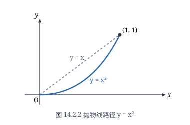
（1）这时 $L$ 的参数方程为
$$x = R\cos t, \quad y = R\sin t, \quad t: 0 \to \pi,$$因此
$$\int_L y^2\,\mathrm{d}x + x^2\,\mathrm{d}y = \int_0^\pi [R^2\sin^2 t(-R\sin t) + R^2\cos^2 t(R\cos t)]\,\mathrm{d}t$$ $$= R^3\int_0^\pi [(1 - \cos^2 t)(-\sin t) + (1 - \sin^2 t)\cos t]\,\mathrm{d}t = -\frac{4}{3}R^3.$$（2）这时 $L$ 的方程为
$$y = y(x) = 0, \quad x: R \to -R,$$因此
$$\int_L y^2\,\mathrm{d}x + x^2\,\mathrm{d}y = \int_R^{-R} 0\cdot\mathrm{d}x = 0.$$求空间中一质量为 $m$ 的物体沿某一光滑曲线 $L$ 从 $A$ 点移动到 $B$ 点时，重力所做的功．
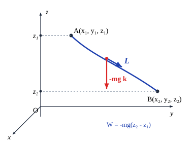
作直角坐标系，使 $z$ 轴铅直向上（见图 14.2.3）．在直角坐标系中，设 $A$ 点的坐标为 $(x_1, y_1, z_1)$，$B$ 点的坐标为 $(x_2, y_2, z_2)$，曲线 $L$ 的方程为
$$x = x(t), \quad y = y(t), \quad z = z(t), \quad t: \alpha \to \beta.$$显然重力 $F = -mgk$，这里 $g$ 为重力加速度．则重力所做的功为
$$W = \int_L (-mg)\,\mathrm{d}z = -mg\int_L \mathrm{d}z = -mg\int_\alpha^\beta z'(t)\,\mathrm{d}t = -mg(z(\beta) - z(\alpha)) = mg(z_1 - z_2).$$这说明了，重力所做的功与路径无关，它仅取决于物体下降（或上升）的距离．
这两个例子说明了第二类曲线积分既可能与路径有关，也可能与路径无关．我们将在下一节讨论第二类曲线积分与路径无关的条件．
计算 $\int_L (y^2 - z^2)\,\mathrm{d}x + (z^2 - x^2)\,\mathrm{d}y + (x^2 - y^2)\,\mathrm{d}z$，其中 $L$ 为球面 $x^2 + y^2 + z^2 = 1$ 在第一卦限部分的边界，当从球面外面看时为顺时针方向．
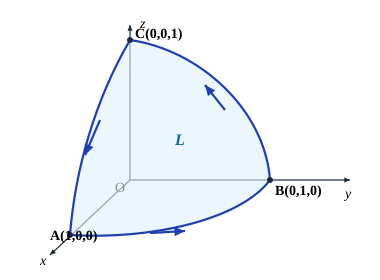
曲线是由圆弧段 $\overgroup{AB}, \overgroup{BC}, \overgroup{CA}$ 组成（见图 14.2.4）．而圆弧段 $\overgroup{AB}$ 的参数方程为
$$x = 0, \quad y = \cos t, \quad z = \sin t, \quad t: \frac{\pi}{2} \to 0,$$因此
$$\int_{\overgroup{AB}} (y^2 - z^2)\,\mathrm{d}x + (z^2 - x^2)\,\mathrm{d}y + (x^2 - y^2)\,\mathrm{d}z$$ $$= \int_{\pi/2}^0 [\sin^2 t(-\sin t) - \cos^2 t(\cos t)]\,\mathrm{d}t = \int_0^{\pi/2} (\sin^3 t + \cos^3 t)\,\mathrm{d}t = \frac{4}{3}.$$由对称性得到
$$\int_{\overgroup{BC}} (y^2 - z^2)\,\mathrm{d}x + (z^2 - x^2)\,\mathrm{d}y + (x^2 - y^2)\,\mathrm{d}z = \int_{\overgroup{CA}} (y^2 - z^2)\,\mathrm{d}x + (z^2 - x^2)\,\mathrm{d}y + (x^2 - y^2)\,\mathrm{d}z = \frac{4}{3}.$$于是
$$\int_L (y^2 - z^2)\,\mathrm{d}x + (z^2 - x^2)\,\mathrm{d}y + (x^2 - y^2)\,\mathrm{d}z = 3\times \frac{4}{3} = 4.$$曲面的侧
如果放一只蚂蚁在一张白纸上，无论它怎样爬，只要它不越过白纸的边界，当它再爬回到原来的位置时，还是在纸的上方，不会到下面去．这就像在白纸上的一点处选择一个指向上方的单位法向量，然后沿任何一条不越过边界的闭曲线连续地移动它，使它与所过之点处的一个单位法向量相合，并保持这种相合的连续性，那么当它又回到原来的位置时，它还是原来的那个单位法向量，而不会变成指向白纸下方的那个单位法向量．具有这种性质的曲面叫做双侧曲面．具体的定义是：
设 $\Sigma$ 是一张光滑曲面，$P$ 为 $\Sigma$ 上任一点，$\Gamma_P$ 是过 $P$ 点且不越过曲面边界的任意一条闭曲线．取定 $\Sigma$ 在 $P$ 点的一个单位法向量，让它沿 $\Gamma_P$ 连续移动，使它与所过之点处的一个单位法向量连续地相合．如果当它再回到 $P$ 点时，法向量的指向仍与原选的方向相同，则称 $\Sigma$ 为双侧曲面．
这样一来，在双侧曲面 $\Sigma$ 上，如果选定了一点 $P$ 和曲面 $\Sigma$ 在该点的一个法向量，通过从这点连续地移动法向量就可以惟一地确定 $\Sigma$ 上其他点的法向量的方向．于是曲面 $\Sigma$ 就由法向量的方向被分为两侧（例如，球面有内侧和外侧）．选好一侧的曲面称为定向曲面．
并非所有光滑曲面都是双侧曲面．例如，把长方形 $ABCD$ 先扭转一次再首尾相粘，
即 $A$ 与 $C$ 相粘，$B$ 与 $D$ 点相粘，就做成了所谓的 Möbius 带（见图 14.2.5）．如果从某一点开始，用刷子在 Möbius 带上连续地涂色（即指定法向量），最后就会涂满整条带子，但回到起始点时，涂的是反面（即法向量与已选择的反向）．这样的曲面叫做单侧曲面．我们今后只讨论双侧曲面（注意数片双侧曲面拼在一起不一定仍是双侧曲面，如 Möbius 带可以看成是由两片双侧曲面拼成的）．
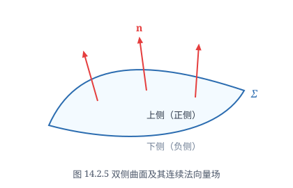
设双侧曲面 $\Sigma$ 的方程为
$$x = x(u, v), \quad y = y(u, v), \quad z = z(u, v), \quad (u, v) \in D.$$这里 $D$ 为 $uv$ 平面上具有分段光滑边界的区域．进一步假设 $x, y, z$ 对 $u$ 和 $v$ 有连续偏导数，且相应的 Jacobi 矩阵
$$J = \begin{pmatrix} \dfrac{\partial x}{\partial u} & \dfrac{\partial x}{\partial v} \\ \dfrac{\partial y}{\partial u} & \dfrac{\partial y}{\partial v} \\ \dfrac{\partial z}{\partial u} & \dfrac{\partial z}{\partial v} \end{pmatrix}$$总是满秩的．这时曲面 $\Sigma$ 是光滑的．
前面已经知道，曲面的法向量可以表示为
$$\left(\frac{\partial(y, z)}{\partial(u, v)}, \frac{\partial(z, x)}{\partial(u, v)}, \frac{\partial(x, y)}{\partial(u, v)}\right),$$这点的单位法向量及方向余弦为
$$n = (\cos\alpha, \cos\beta, \cos\gamma) = \pm \frac{1}{\sqrt{EG - F^2}}\left(\frac{\partial(y, z)}{\partial(u, v)}, \frac{\partial(z, x)}{\partial(u, v)}, \frac{\partial(x, y)}{\partial(u, v)}\right),$$这里 $EG - F^2 = \left[\frac{\partial(y, z)}{\partial(u, v)}\right]^2 + \left[\frac{\partial(z, x)}{\partial(u, v)}\right]^2 + \left[\frac{\partial(x, y)}{\partial(u, v)}\right]^2$．由于根号前面有两个符号，所以上式给出了两个单位法向量．而又由假设，方向余弦是连续的，因此所确定的单位法向量是连续变动的，曲面的双侧性就保证了法向量不会指向另一侧去．这就是说，在根号前取定一个符号后，也就确定了曲面的一侧．
例如，光滑曲面 $\Sigma$ 的方程为
$$z = z(x, y), \quad (x, y) \in D,$$其中 $D$ 为平面区域．那么
$$n = (\cos\alpha, \cos\beta, \cos\gamma) = \pm \frac{1}{\sqrt{1 + z_x^2 + z_y^2}}(-z_x, -z_y, 1).$$如果取正号，则 $\cos\gamma > 0$，这时法向量与 $z$ 轴成锐角，意味着取定了曲面的上侧，而取负号则意味着取定了曲面的下侧．
第二类曲面积分
已知不可压缩流体（设其密度为 $1$）在 $(x, y, z)$ 处的流速可以表示为
$$v(x, y, z) = P(x, y, z)i + Q(x, y, z)j + R(x, y, z)k,$$并设它与时间无关，我们来计算单位时间内通过定向曲面 $\Sigma$ 的（质量）流量．
用光滑曲线网将 $\Sigma$ 分成 $n$ 片小曲面 $\Delta\Sigma_1, \Delta\Sigma_2, \ldots, \Delta\Sigma_n$．设 $\Delta\Sigma_i$ 的面积为 $\Delta S_i$，在它上面任取一点 $M_i(\xi_i, \eta_i, \zeta_i)$，那么在这点的流速为
$$v_i = P(\xi_i, \eta_i, \zeta_i)i + Q(\xi_i, \eta_i, \zeta_i)j + R(\xi_i, \eta_i, \zeta_i)k.$$记曲面 $\Sigma$ 在 $M_i$ 点的单位法向量为
$$n_i = \cos\alpha_i i + \cos\beta_i j + \cos\gamma_i k,$$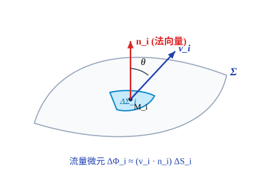
那么单位时间内流过 $\Delta\Sigma_i$ 的流量（见图 14.2.6）就近似地为
$$v_i \cdot n_i \Delta S_i = [P(\xi_i, \eta_i, \zeta_i)\cos\alpha_i + Q(\xi_i, \eta_i, \zeta_i)\cos\beta_i + R(\xi_i, \eta_i, \zeta_i)\cos\gamma_i]\Delta S_i.$$因此单位时间内通过 $\Sigma$ 的（质量）流量为
$$\Phi = \lim_{\lambda \to 0} \sum_{i=1}^n v_i \cdot n_i \Delta S_i$$ $$= \lim_{\lambda \to 0} \sum_{i=1}^n [P(\xi_i, \eta_i, \zeta_i)\cos\alpha_i + Q(\xi_i, \eta_i, \zeta_i)\cos\beta_i + R(\xi_i, \eta_i, \zeta_i)\cos\gamma_i]\Delta S_i$$ $$= \iint_\Sigma [P(x, y, z)\cos\alpha + Q(x, y, z)\cos\beta + R(x, y, z)\cos\gamma]\,\mathrm{d}S,$$其中 $\lambda$ 是所有小曲面片的最大直径．
这种思想使我们引入下面的定义．
设 $\Sigma$ 为定向的光滑曲面，曲面上的每一点指定了单位法向量 $n = (\cos\alpha, \cos\beta, \cos\gamma)$，使它与 $\Sigma$ 的定向一致．设 $f(x, y, z) = P(x, y, z)i + Q(x, y, z)j + R(x, y, z)k$ 为定义在 $\Sigma$ 上的向量值函数，称
$$\iint_\Sigma f \cdot n\,\mathrm{d}S = \iint_\Sigma [P(x, y, z)\cos\alpha + Q(x, y, z)\cos\beta + R(x, y, z)\cos\gamma]\,\mathrm{d}S$$为 $f$ 在 $\Sigma$ 上的第二类曲面积分（如果右面的第一类曲面积分存在）．
第二类曲面积分定义在定向曲面上，它具有与第二类曲线积分类似的性质：
性质 1（方向性） 设向量值函数 $f$ 在定向的光滑曲面 $\Sigma$ 上的第二类曲面积分存在，记 $-\Sigma$ 为与 $\Sigma$ 取相反侧的曲面，则 $f$ 在 $-\Sigma$ 上的第二类曲面积分也存在，且成立
$$\iint_{-\Sigma} f \cdot n\,\mathrm{d}S = -\iint_\Sigma f \cdot n\,\mathrm{d}S.$$注意这个等式两边的 $n$ 是方向相反的．
性质 2（线性性） 设 $f$ 和 $g$ 在定向的光滑曲面 $\Sigma$ 上的第二类曲面积分存在，则对任何常数 $\alpha, \beta$，$\alpha f + \beta g$ 在 $\Sigma$ 上的第二类曲面积分也存在，且成立
$$\iint_\Sigma (\alpha f + \beta g) \cdot n\,\mathrm{d}S = \alpha \iint_\Sigma f \cdot n\,\mathrm{d}S + \beta \iint_\Sigma g \cdot n\,\mathrm{d}S.$$性质 3（曲面可加性） 设定向的光滑曲面 $\Sigma$ 分成了两片 $\Sigma_1$ 和 $\Sigma_2$，它们与 $\Sigma$ 的取向相同（这时记为 $\Sigma = \Sigma_1 + \Sigma_2$），如果向量值函数 $f$ 在 $\Sigma$ 上的第二类曲面积分存在，则它
在 $\Sigma_1$ 和 $\Sigma_2$ 上的第二类曲面积分也存在．反之，如果 $f$ 在 $\Sigma_1$ 和 $\Sigma_2$ 上的第二类曲面积分存在，则它在 $\Sigma$ 上的第二类曲面积分也存在，且成立
$$\iint_\Sigma f \cdot n\,\mathrm{d}S = \iint_{\Sigma_1} f \cdot n\,\mathrm{d}S + \iint_{\Sigma_2} f \cdot n\,\mathrm{d}S.$$利用性质 3 的思想就可以把第二类曲面积分的定义推广到分片光滑的曲面上去．
在 $\Sigma$ 上的点 $(x, y, z)$ 处取一个 $\Sigma$ 的面积微元 $\mathrm{d}S$，作定向曲面微元 $\mathrm{d}S = n\,\mathrm{d}S$，其中 $n = (\cos\alpha, \cos\beta, \cos\gamma)$ 为 $\Sigma$ 在点 $(x, y, z)$ 处的单位法向量．记 $\mathrm{d}S$ 在 $xy$ 平面上的投影的面积为 $\mathrm{d}\sigma$．如果我们用微分形式 $\mathrm{d}x \wedge \mathrm{d}y$ 表示 $\mathrm{d}S$ 在 $xy$ 平面上的有向投影面积，即
$$\mathrm{d}x \wedge \mathrm{d}y = \begin{cases} \mathrm{d}\sigma, & \text{当 } \cos\gamma > 0 \text{ 时；} \\ -\mathrm{d}\sigma, & \text{当 } \cos\gamma < 0 \text{ 时；} \\ 0, & \text{当 } \cos\gamma = 0 \text{ 时．} \end{cases}$$那么 $\mathrm{d}x \wedge \mathrm{d}y = \cos\gamma\,\mathrm{d}S$．类似地有
$$\mathrm{d}y \wedge \mathrm{d}z = \cos\alpha\,\mathrm{d}S, \quad \mathrm{d}z \wedge \mathrm{d}x = \cos\beta\,\mathrm{d}S.$$为方便起见，常简记 $\mathrm{d}x \wedge \mathrm{d}y$ 为 $\mathrm{d}x\mathrm{d}y$，$\mathrm{d}y \wedge \mathrm{d}z$ 为 $\mathrm{d}y\mathrm{d}z$，$\mathrm{d}z \wedge \mathrm{d}x$ 为 $\mathrm{d}z\mathrm{d}x$．于是，第二类曲面积分又可以表示为
$$\iint_\Sigma P(x, y, z)\,\mathrm{d}y\mathrm{d}z + Q(x, y, z)\,\mathrm{d}z\mathrm{d}x + R(x, y, z)\,\mathrm{d}x\mathrm{d}y.$$这也称为 2-形式
$$\omega = P(x, y, z)\,\mathrm{d}y\mathrm{d}z + Q(x, y, z)\,\mathrm{d}z\mathrm{d}x + R(x, y, z)\,\mathrm{d}x\mathrm{d}y$$在 $\Sigma$ 上的第二类曲面积分，记为 $\iint_\Sigma \omega$．
下面讨论如何计算第二类曲面积分．
若定向光滑曲面 $\Sigma$ 的参数方程为
$$x = x(u, v), \quad y = y(u, v), \quad z = z(u, v), \quad (u, v) \in D,$$$P(x, y, z), Q(x, y, z), R(x, y, z)$ 为 $\Sigma$ 上的连续函数．由于
$$(\cos\alpha, \cos\beta, \cos\gamma) = \pm \frac{1}{\sqrt{EG - F^2}}\left(\frac{\partial(y, z)}{\partial(u, v)}, \frac{\partial(z, x)}{\partial(u, v)}, \frac{\partial(x, y)}{\partial(u, v)}\right)$$以及 $\mathrm{d}S = \sqrt{EG - F^2}\,\mathrm{d}u\mathrm{d}v$，则由第一类曲面积分的计算公式，第二类曲面积分可由如下公式计算：
$$\iint_\Sigma P(x, y, z)\,\mathrm{d}y\mathrm{d}z + Q(x, y, z)\,\mathrm{d}z\mathrm{d}x + R(x, y, z)\,\mathrm{d}x\mathrm{d}y$$ $$= \iint_\Sigma [P(x, y, z)\cos\alpha + Q(x, y, z)\cos\beta + R(x, y, z)\cos\gamma]\,\mathrm{d}S$$ $$= \pm \iint_D \left[P(x(u, v), y(u, v), z(u, v))\frac{\partial(y, z)}{\partial(u, v)} + Q(x(u, v), y(u, v), z(u, v))\frac{\partial(z, x)}{\partial(u, v)}\right.$$ $$\left. + R(x(u, v), y(u, v), z(u, v))\frac{\partial(x, y)}{\partial(u, v)}\right]\mathrm{d}u\mathrm{d}v.$$式中符号由曲面的侧，即方向余弦（或单位法向量）的计算公式中所取符号决定．
特别地，如果定向的光滑曲面 $\Sigma$ 的方程为
$$z = z(x, y), \quad (x, y) \in D_{xy},$$其中 $D_{xy}$ 为 $xy$ 平面上具有分段光滑边界的有界闭区域，$R(x, y, z)$ 为 $\Sigma$ 上的连续函数，则
$$\iint_\Sigma R(x, y, z)\,\mathrm{d}x\mathrm{d}y = \pm \iint_{D_{xy}} R(x, y, z(x, y))\,\mathrm{d}x\mathrm{d}y.$$等式右端是二重积分，当曲面的定向为上侧时，积分号前取"+"；当曲面的定向为下侧时，积分号前取"-"．
读者不难推出当定向的光滑曲面 $\Sigma$ 的方程为
$$x = x(y, z), \quad (y, z) \in D_{yz} \quad \text{或} \quad y = y(z, x), \quad (z, x) \in D_{zx}$$时的类似公式．
计算 $I = \iint_\Sigma (x + 1)\,\mathrm{d}y\mathrm{d}z + (y + 1)\,\mathrm{d}z\mathrm{d}x + (z + 1)\,\mathrm{d}x\mathrm{d}y$，其中 $\Sigma$ 为平面 $x + y + z = 1, x = 0, y = 0$ 和 $z = 0$ 所围立体的表面（见图 14.2.7），方向取外侧．
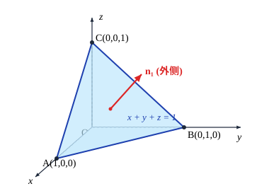
将曲面划分成如图所示的四片：$\Sigma_1, \Sigma_2, \Sigma_3$ 和 $\Sigma_4$．
$\Sigma_1$ 的方程为 $z = 0, 0 \le y \le 1 - x, 0 \le x \le 1$．根据定向，其法向量与 $x$ 轴和 $y$ 轴的夹角都是 $\pi/2$，与 $z$ 轴的夹角为 $\pi$，因此
$$\iint_{\Sigma_1} (x + 1)\,\mathrm{d}y\mathrm{d}z + (y + 1)\,\mathrm{d}z\mathrm{d}x + (z + 1)\,\mathrm{d}x\mathrm{d}y = \iint_{\Sigma_1} (z + 1)\,\mathrm{d}x\mathrm{d}y = -\iint_{\substack{0\le x\le 1\\0\le y\le 1-x}} \mathrm{d}x\mathrm{d}y = -\frac{1}{2}.$$同理
$$\iint_{\Sigma_2} (x + 1)\,\mathrm{d}y\mathrm{d}z + (y + 1)\,\mathrm{d}z\mathrm{d}x + (z + 1)\,\mathrm{d}x\mathrm{d}y = -\frac{1}{2},$$ $$\iint_{\Sigma_3} (x + 1)\,\mathrm{d}y\mathrm{d}z + (y + 1)\,\mathrm{d}z\mathrm{d}x + (z + 1)\,\mathrm{d}x\mathrm{d}y = -\frac{1}{2}.$$而 $\Sigma_4$ 的方程可表为 $z = 1 - x - y, 0 \le y \le 1 - x, 0 \le x \le 1$．因此
$$\iint_{\Sigma_4} (z + 1)\,\mathrm{d}x\mathrm{d}y = \iint_{\substack{0\le x\le 1\\0\le y\le 1-x}} (2 - x - y)\,\mathrm{d}x\mathrm{d}y = \frac{2}{3}.$$由对称性得
$$\iint_{\Sigma_4} (x + 1)\,\mathrm{d}y\mathrm{d}z = \iint_{\Sigma_4} (y + 1)\,\mathrm{d}z\mathrm{d}x = \frac{2}{3}.$$因此
$$\iint_{\Sigma_4} (x + 1)\,\mathrm{d}y\mathrm{d}z + (y + 1)\,\mathrm{d}z\mathrm{d}x + (z + 1)\,\mathrm{d}x\mathrm{d}y = 2.$$相加后即得到
$$I = -\frac{1}{2} - \frac{1}{2} - \frac{1}{2} + 2 = \frac{1}{2}.$$计算 $\iint_\Sigma x^3\,\mathrm{d}y\mathrm{d}z + y^3\,\mathrm{d}z\mathrm{d}x + z^3\,\mathrm{d}x\mathrm{d}y$，其中 $\Sigma$ 为上半椭球面 $\dfrac{x^2}{a^2} + \dfrac{y^2}{b^2} + \dfrac{z^2}{c^2} = 1, z \ge 0$ ($a, b, c > 0$)，方向取上侧（见图 14.2.8）．
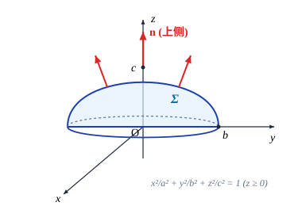
利用广义球面坐标，就可得曲面的参数方程为
$$x = a\sin\varphi\cos\theta, \quad y = b\sin\varphi\sin\theta, \quad z = c\cos\varphi, \quad 0 \le \theta \le 2\pi, \quad 0 \le \varphi \le \frac{\pi}{2}.$$易计算
$$\frac{\partial(y, z)}{\partial(\varphi, \theta)} = bc\sin^2\varphi\cos\theta, \quad \frac{\partial(z, x)}{\partial(\varphi, \theta)} = ac\sin^2\varphi\sin\theta, \quad \frac{\partial(x, y)}{\partial(\varphi, \theta)} = ab\sin\varphi\cos\varphi.$$因此
$$\iint_\Sigma x^3\,\mathrm{d}y\mathrm{d}z + y^3\,\mathrm{d}z\mathrm{d}x + z^3\,\mathrm{d}x\mathrm{d}y$$ $$= \iint_{\substack{0\le\theta\le 2\pi\\0\le\varphi\le\pi/2}} (a^3bc\sin^5\varphi\cos^4\theta + b^3ac\sin^5\varphi\sin^4\theta + c^3ab\sin\varphi\cos^3\varphi)\,\mathrm{d}\varphi\mathrm{d}\theta$$ $$= \int_0^{2\pi} (a^2\cos^4\theta + b^2\sin^4\theta)\,\mathrm{d}\theta \cdot abc\int_0^{\pi/2}\sin^5\varphi\,\mathrm{d}\varphi + 2\pi abc\cdot c^2\int_0^{\pi/2}\sin\varphi\cos^3\varphi\,\mathrm{d}\varphi$$ $$= \frac{2}{5}\pi abc(a^2 + b^2 + c^2).$$我们说明一下为什么这里积分号前取"+"，因为曲面的定向为上侧，所以在 $\Sigma$ 上方向余弦 $\cos\gamma \ge 0$（除去 $\varphi = \pi/2$ 时的边界），而由方向余弦的计算公式知
$$\cos\gamma = \pm \frac{\dfrac{\partial(x, y)}{\partial(\varphi, \theta)}}{\sqrt{EG - F^2}} = \pm \frac{ab\sin\varphi\cos\varphi}{\sqrt{EG - F^2}},$$要等式成立必须取"+"号，因此积分号前取"+"号．
计算 $\iint_\Sigma (z^2 + x)\,\mathrm{d}y\mathrm{d}z + \sqrt{z}\,\mathrm{d}x\mathrm{d}y$，其中 $\Sigma$ 为抛物面 $z = \dfrac{1}{2}(x^2 + y^2)$ 在平面 $z = 0$ 与 $z = 2$ 之间的部分（见图 14.2.9），方向取下侧．
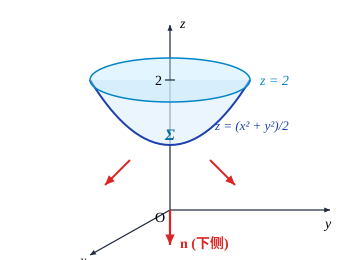
由于 $\mathrm{d}y\mathrm{d}z = \cos\alpha\,\mathrm{d}S, \mathrm{d}x\mathrm{d}y = \cos\gamma\,\mathrm{d}S$，所以
$$\iint_\Sigma (z^2 + x)\,\mathrm{d}y\mathrm{d}z = \iint_\Sigma (z^2 + x)\cos\alpha\,\mathrm{d}S = \iint_\Sigma (z^2 + x)\frac{\cos\alpha}{\cos\gamma}\,\mathrm{d}x\mathrm{d}y.$$而在 $\Sigma$ 定向为下侧，所以
$$\cos\alpha = \frac{x}{\sqrt{1 + x^2 + y^2}}, \quad \cos\gamma = -\frac{1}{\sqrt{1 + x^2 + y^2}}.$$注意到 $\Sigma$ 在 $xy$ 平面的投影区域为 $D = \{(x, y) \mid x^2 + y^2 \le 2^2\}$，就有
$$\iint_\Sigma [(z^2 + x)\,\mathrm{d}y\mathrm{d}z + \sqrt{z}\,\mathrm{d}x\mathrm{d}y] = \iint_\Sigma [(z^2 + x)(-x) + \sqrt{z}]\,\mathrm{d}x\mathrm{d}y$$ $$= -\iint_D \left[\left(\left(\frac{1}{2}(x^2 + y^2)\right)^2 + x\right)(-x) + \sqrt{\frac{1}{2}(x^2 + y^2)}\right]\mathrm{d}x\mathrm{d}y$$ $$= -\int_0^{2\pi}\mathrm{d}\theta \int_0^2 \left(-\frac{1}{4}r^5\cos\theta - r^2\cos^2\theta + \sqrt{\frac{1}{2}}r\right)r\,\mathrm{d}r = \left(4 - \frac{8}{3}\sqrt{2}\right)\pi.$$习题 14.2
- 求下列第二类曲线积分：
- $\displaystyle\int_L (x^2 + y^2)\,\mathrm{d}x + (x^2 - y^2)\,\mathrm{d}y$，其中 $L$ 是以 $A(1, 0), B(2, 0), C(2, 1), D(1, 1)$ 为顶点的正方形，方向为逆时针方向；
- $\displaystyle\int_L (x^2 - 2xy)\,\mathrm{d}x + (y^2 - 2xy)\,\mathrm{d}y$，其中 $L$ 是抛物线的一段：$y = x^2, -1 \le x \le 1$，方向由 $(-1, 1)$ 到 $(1, 1)$；
- $\displaystyle\int_L \frac{(x + y)\,\mathrm{d}x - (x - y)\,\mathrm{d}y}{x^2 + y^2}$，其中 $L$ 是圆周 $x^2 + y^2 = a^2$，方向为逆时针方向；
- $\displaystyle\int_L y\,\mathrm{d}x - x\,\mathrm{d}y + (x^2 + y^2)\,\mathrm{d}z$，其中 $L$ 是曲线 $x = \mathrm{e}^t, y = \mathrm{e}^{-t}, z = a^t, 0 \le t \le 1$，方向由 $(\mathrm{e}, \mathrm{e}^{-1}, a)$ 到 $(1, 1, 1)$；
- $\displaystyle\int_L x\,\mathrm{d}x + y\,\mathrm{d}y + (x + y - 1)\,\mathrm{d}z$，其中 $L$ 是从点 $(1, 1, 1)$ 到点 $(2, 3, 4)$ 的直线段；
- $\displaystyle\int_L y\,\mathrm{d}x + z\,\mathrm{d}y + x\,\mathrm{d}z$，其中 $L$ 为曲线 $\begin{cases} x^2 + y^2 + z^2 = 2az, \\ x + z = a \ (a > 0), \end{cases}$ 若从 $z$ 轴的正向看去，$L$ 的方向为逆时针方向；
- $\displaystyle\int_L (y - z)\,\mathrm{d}x + (z - x)\,\mathrm{d}y + (x - y)\,\mathrm{d}z$，$L$ 为圆周 $\begin{cases} x^2 + y^2 + z^2 = 1, \\ y = x\tan\alpha \ \left(0 < \alpha < \dfrac{\pi}{2}\right), \end{cases}$ 若从 $x$ 轴的正向看去，这个圆周的方向为逆时针方向．
- 证明不等式 $$\left|\int_L P(x, y)\,\mathrm{d}x + Q(x, y)\,\mathrm{d}y\right| \le MC,$$ 其中 $C$ 是曲线 $L$ 的弧长，$M = \max\{ \sqrt{P^2(x, y) + Q^2(x, y)} \mid (x, y) \in L \}$．记圆周 $x^2 + y^2 = R^2$ 为 $L_R$，利用以上不等式估计 $$I_R = \int_{L_R} \frac{y\,\mathrm{d}x - x\,\mathrm{d}y}{(x^2 + xy + y^2)^2},$$ 并证明 $\lim\limits_{R\to +\infty} I_R = 0$．
- 方向依纵轴的负方向，且大小等于作用点的横坐标的平方的力构成一个力场．求质量为 $m$ 的质点沿抛物线 $y^2 = 1 - x$ 从点 $(1, 0)$ 移到 $(0, 1)$ 时，场力所做的功．
- 计算下列第二类曲面积分：
- $\displaystyle\iint_\Sigma (x + y)\,\mathrm{d}y\mathrm{d}z + (y + z)\,\mathrm{d}z\mathrm{d}x + (z + x)\,\mathrm{d}x\mathrm{d}y$，其中 $\Sigma$ 是中心在原点，边长为 $2h$ 的立方体 $[-h, h] \times [-h, h] \times [-h, h]$ 的表面，方向取外侧；
- $\displaystyle\iint_\Sigma y z\,\mathrm{d}z\mathrm{d}x$，其中 $\Sigma$ 是椭球面 $\dfrac{x^2}{a^2} + \dfrac{y^2}{b^2} + \dfrac{z^2}{c^2} = 1$ 的上半部分，方向取上侧；
- $\displaystyle\iint_\Sigma z\,\mathrm{d}y\mathrm{d}z + x\,\mathrm{d}z\mathrm{d}x + y\,\mathrm{d}x\mathrm{d}y$，其中 $\Sigma$ 是柱面 $x^2 + y^2 = 1$ 被平面 $z = 0$ 和 $z = 4$ 所截部分，方向取外侧；
- $\displaystyle\iint_\Sigma z x\,\mathrm{d}y\mathrm{d}z + 3\,\mathrm{d}x\mathrm{d}y$，其中 $\Sigma$ 是抛物面 $z = 4 - x^2 - y^2$ 在 $z \ge 0$ 部分，方向取下侧；
- $\displaystyle\iint_\Sigma [f(x, y, z) + x]\,\mathrm{d}y\mathrm{d}z + [2f(x, y, z) + y]\,\mathrm{d}z\mathrm{d}x + [f(x, y, z) + z]\,\mathrm{d}x\mathrm{d}y$，其中 $f(x, y, z)$ 为连续函数，$\Sigma$ 是平面 $x - y + z = 1$ 在第四卦限部分，方向取上侧；
- $\displaystyle\iint_\Sigma [x^2\,\mathrm{d}y\mathrm{d}z + y^2\,\mathrm{d}z\mathrm{d}x + (z^2 + 5)\,\mathrm{d}x\mathrm{d}y]$，其中 $\Sigma$ 是锥面 $z = \sqrt{x^2 + y^2} \ (0 \le z \le h)$，方向取下侧；
- $\displaystyle\iint_\Sigma \frac{\mathrm{e}^y}{\sqrt{z^2 + x^2}}\,\mathrm{d}z\mathrm{d}x$，其中 $\Sigma$ 是抛物面 $y = x^2 + z^2$ 与平面 $y = 1, y = 2$ 所围立体的表面，方向取外侧；
- $\displaystyle\iint_\Sigma \frac{1}{x}\,\mathrm{d}y\mathrm{d}z + \frac{1}{y}\,\mathrm{d}z\mathrm{d}x + \frac{1}{z}\,\mathrm{d}x\mathrm{d}y$，其中 $\Sigma$ 为椭球面 $\dfrac{x^2}{a^2} + \dfrac{y^2}{b^2} + \dfrac{z^2}{c^2} = 1$，方向取外侧；
- $\displaystyle\iint_\Sigma x^2\,\mathrm{d}y\mathrm{d}z + y^2\,\mathrm{d}z\mathrm{d}x + z^2\,\mathrm{d}x\mathrm{d}y$，其中 $\Sigma$ 是球面 $(x - a)^2 + (y - b)^2 + (z - c)^2 = R^2$，方向取外侧．
§3 Green 公式、Gauss 公式和 Stokes 公式
Green 公式
设 $L$ 为平面上的一条曲线，它的方程是 $r(t) = x(t)i + y(t)j, \alpha \le t \le \beta$．如果 $r(\alpha) = r(\beta)$，而且当 $t_1, t_2 \in (\alpha, \beta), t_1 \ne t_2$ 时总成立 $r(t_1) \ne r(t_2)$，则称 $L$ 为简单闭曲线（或 Jordan 曲线）．这就是说，简单闭曲线除两个端点相重合外，曲线自身不相交．
设 $D$ 为平面上的一个区域．如果 $D$ 内的任意一条封闭曲线都可以不经过 $D$ 外的点而连续地收缩成 $D$ 中一点，那么 $D$ 称为单连通区域，否则它称为复连通区域．例如，圆盘 $\{(x, y) \mid x^2 + y^2 < 1\}$ 是单连通区域，而圆环 $\left\{(x, y) \mid \dfrac{1}{2} < x^2 + y^2 < 1\right\}$ 是复连通区域．单连通区域 $D$ 也可以这样叙述：$D$ 内的任何一条封闭曲线所围的点集仍属于 $D$．因此，通俗地说，单连通区域之中不含有"洞"，而复连通区域之中会有"洞"．
对于平面区域 $D$，我们给它的边界 $\partial D$ 规定一个正向：如果一个人沿 $\partial D$ 的这个方向行走时，$D$ 总是在他左边．这个定向也称为 $D$ 的诱导定向，带有这样定向的 $\partial D$ 称为 $D$ 的正向边界．例如，如图 14.3.1 所示的区域 $D$ 由 $L$ 与 $l$ 所围成，那么在我们规定的正向下，$L$ 为逆时针方向，而 $l$ 为顺时针方向．
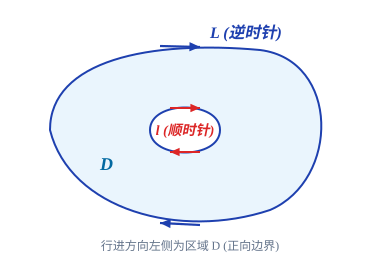
设 $D$ 为 $xy$ 平面上由光滑或分段光滑的简单闭曲线所围的单连通闭区域．如果函数 $P(x, y), Q(x, y)$ 在 $D$ 上具有连续偏导数，那么
$$\oint_{\partial D} P\,\mathrm{d}x + Q\,\mathrm{d}y = \iint_D \left(\frac{\partial Q}{\partial x} - \frac{\partial P}{\partial y}\right)\mathrm{d}x\mathrm{d}y,$$其中 $\partial D$ 取正向，即诱导定向．
我们先证明 $D$ 可同时表为以下两种形式
$$D = \{(x, y) \mid a \le x \le b, y_1(x) \le y \le y_2(x)\} = \{(x, y) \mid c \le y \le d, x_1(y) \le x \le x_2(y)\}$$的情形（这时平行于 $x$ 轴或 $y$ 轴的直线与区域 $D$ 的边界至多交两点）．这样的区域称为标准区域（参见图 14.3.2）．
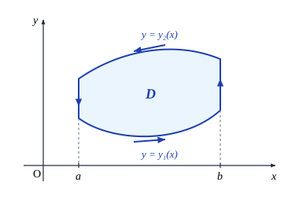
在这种情况下，
$$\iint_D \frac{\partial P}{\partial y}\,\mathrm{d}x\mathrm{d}y = \int_a^b \mathrm{d}x \int_{y_1(x)}^{y_2(x)} \frac{\partial P}{\partial y}\,\mathrm{d}y = \int_a^b [P(x, y_2(x)) - P(x, y_1(x))]\,\mathrm{d}x$$ $$= -\left[\int_a^b P(x, y_1(x))\,\mathrm{d}x - \int_a^b P(x, y_2(x))\,\mathrm{d}x\right] = -\oint_{\partial D} P(x, y)\,\mathrm{d}x,$$式中最后一步是利用了曲线积分的计算公式．同理又有
$$\iint_D \frac{\partial Q}{\partial x}\,\mathrm{d}x\mathrm{d}y = \int_c^d \mathrm{d}y \int_{x_1(y)}^{x_2(y)} \frac{\partial Q}{\partial x}\,\mathrm{d}x = \int_c^d [Q(x_2(y), y) - Q(x_1(y), y)]\,\mathrm{d}y = \oint_{\partial D} Q(x, y)\,\mathrm{d}y.$$两式合并就得所需结果．
再证区域 $D$ 可分成有限块标准区域的情形．我们只考虑如图 14.3.3 的区域，在这种区域上，平行于 $y$ 轴的直线与 $D$ 的边界的交点可能会多于两个．如图所示用光滑曲线 $AB$ 将 $D$ 分割成两个标准区域 $D_1$ 与 $D_2$（$D_1$ 的边界为曲线 $ABMA, D_2$ 的边界为曲线 $ANBA$）．因此可以应用 Green 公式得
$$\oint_{\partial D_1} P\,\mathrm{d}x + Q\,\mathrm{d}y = \iint_{D_1} \left(\frac{\partial Q}{\partial x} - \frac{\partial P}{\partial y}\right)\mathrm{d}x\mathrm{d}y,$$ $$\oint_{\partial D_2} P\,\mathrm{d}x + Q\,\mathrm{d}y = \iint_{D_2} \left(\frac{\partial Q}{\partial x} - \frac{\partial P}{\partial y}\right)\mathrm{d}x\mathrm{d}y.$$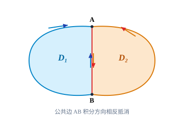
注意 $D_1$ 与 $D_2$ 的公共边界 $AB$，其方向相对于 $\partial D_1$ 而言是从 $A$ 到 $B$，相对于 $\partial D_2$ 而言是从 $B$ 到 $A$，两者方向正好相反，所以将上面的两式相加便得
$$\oint_{\partial D} P\,\mathrm{d}x + Q\,\mathrm{d}y = \iint_D \left(\frac{\partial Q}{\partial x} - \frac{\partial P}{\partial y}\right)\mathrm{d}x\mathrm{d}y.$$对于 Green 公式一般情形的证明比较复杂，这里从略．
Green 公式还可以推广到具有有限个"洞"的复连通区域上去．以只有一个洞为例（见图 14.3.4），用光滑曲线联结其外边界 $L$ 上一点 $M$ 与内边界 $l$ 上一点 $N$，将 $D$ 割为单连通区域．由定理 14.3.1 得
$$\iint_D \left(\frac{\partial Q}{\partial x} - \frac{\partial P}{\partial y}\right)\mathrm{d}x\mathrm{d}y = \left(\oint_L + \oint_l\right)(P\,\mathrm{d}x + Q\,\mathrm{d}y) = \oint_{\partial D} P\,\mathrm{d}x + Q\,\mathrm{d}y,$$其中 $L$ 为逆时针方向，$l$ 为顺时针方向，这与 $\partial D$ 的诱导定向相同．
Green 公式说明了有界闭区域上的二重积分与沿区域边界的第二类曲线积分的关系．下面再作进一步讨论：
1. 记取诱导定向的 $\partial D$ 上的单位切向量为 $T$，单位外法向量为 $n$（见图 14.3.5），那么显然
$$\cos(n, y) = -\cos(T, x), \quad \cos(n, x) = \sin(T, x) = \cos(T, y).$$因此得到 Green 公式的另一种常用表示形式：
$$\iint_D \left(\frac{\partial P}{\partial x} + \frac{\partial Q}{\partial y}\right)\mathrm{d}x\mathrm{d}y = \oint_{\partial D} [P\cos(n, x) + Q\cos(n, y)]\,\mathrm{d}s = \oint_{\partial D} (f \cdot n)\,\mathrm{d}s.$$这个形式便于记忆和推广．
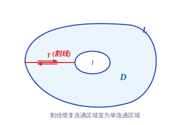
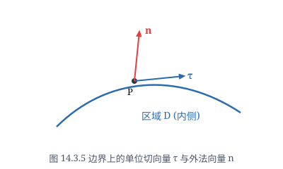
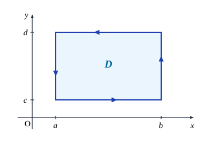
2. Green 公式是 Newton-Leibniz 公式的推广．设 $f(x)$ 在 $[a, b]$ 上具有连续导数，取 $D = [a, b] \times [0, 1]$（见图 14.3.6）．在 Green 公式中取 $P = 0, Q = f(x)$，就得
$$\iint_D f'(x)\,\mathrm{d}x\mathrm{d}y = \oint_{\partial D} f(x)\,\mathrm{d}y.$$利用化累次积分的方法就知道，等式左边就是 $\int_0^1\mathrm{d}y \int_a^b f'(x)\,\mathrm{d}x = \int_a^b f'(x)\,\mathrm{d}x$，而等式右边等于
$$\int_{\overline{AB}} f(x)\,\mathrm{d}y + \int_{\overline{BC}} f(x)\,\mathrm{d}y + \int_{\overline{CD}} f(x)\,\mathrm{d}y + \int_{\overline{DA}} f(x)\,\mathrm{d}y = 0 + f(b) - 0 - f(a) = f(b) - f(a).$$这就得到 Newton-Leibniz 公式
$$\int_a^b f'(x)\,\mathrm{d}x = f(b) - f(a).$$3. 从 Green 公式还可以得到一个求区域面积的方法（证明留给读者）：设 $D$ 为平面上的有界闭区域，其边界为分段光滑的简单闭曲线，则它的面积为
$$S = \frac{1}{2}\oint_{\partial D} x\,\mathrm{d}y - y\,\mathrm{d}x = \oint_{\partial D} x\,\mathrm{d}y = -\oint_{\partial D} y\,\mathrm{d}x,$$其中 $\partial D$ 取正向．
计算椭圆 $\dfrac{x^2}{a^2} + \dfrac{y^2}{b^2} = 1$ ($a, b > 0$) 所围图形的面积（见图 14.3.7）．
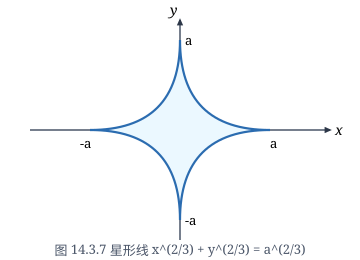
此椭圆的参数方程为
$$x = a\cos\theta, \quad y = b\sin\theta, \quad 0 \le \theta \le 2\pi.$$设椭圆的正向边界为 $L$，那么所求面积为
$$S = \frac{1}{2}\oint_L x\,\mathrm{d}y - y\,\mathrm{d}x = \frac{1}{2}\int_0^{2\pi} (ab\cos^2\theta + ab\sin^2\theta)\,\mathrm{d}\theta = \frac{ab}{2}\int_0^{2\pi}\mathrm{d}\theta = \pi ab.$$计算 $I = \int_L \sqrt{x^2+y^2}\,\mathrm{d}x + y[xy + \ln(x+\sqrt{x^2+y^2})]\,\mathrm{d}y$，其中 $L$ 为曲线 $y = \sin x, 0 \le x \le \pi$ 与直线段 $y = 0, 0 \le x \le \pi$ 所围区域 $D$ 的正向边界（见图 14.3.8）．
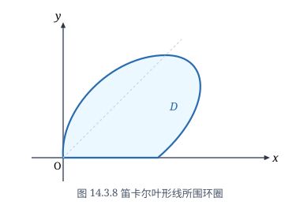
这时 $P = \sqrt{x^2+y^2}, Q = y[xy + \ln(x+\sqrt{x^2+y^2})]$，则
$$\frac{\partial P}{\partial y} = \frac{y}{\sqrt{x^2+y^2}}, \quad \frac{\partial Q}{\partial x} = y^2 + \frac{y}{\sqrt{x^2+y^2}}.$$由 Green 公式得
$$I = \iint_D \left(\frac{\partial Q}{\partial x} - \frac{\partial P}{\partial y}\right)\mathrm{d}x\mathrm{d}y = \iint_D y^2\,\mathrm{d}x\mathrm{d}y = \int_0^\pi \mathrm{d}x \int_0^{\sin x} y^2\,\mathrm{d}y = \frac{1}{3}\int_0^\pi \sin^3 x\,\mathrm{d}x = \frac{4}{9}.$$注意，在这个例子中，$P$ 和 $Q$ 在 $D$ 的边界点 $(0, 0)$ 并不连续可偏导．请读者想想为什么可以这样直接计算．
计算 $I = \int_L (\mathrm{e}^x\sin y - my)\,\mathrm{d}x + (\mathrm{e}^x\cos y - m)\,\mathrm{d}y$，其中 $L$ 为圆 $(x - a)^2 + y^2 = a^2$ ($a > 0$) 的上半圆周，方向为从点 $A(2a, 0)$ 到原点 $O(0, 0)$．
现在曲线不是闭的，不能直接用 Green 公式，但添加一条直线段 $\overline{OA}$（方向从 $O$
到 $A$）后，$L$ 与 $\overline{OA}$ 合起来就是闭曲线（见图 14.3.9）．设这样得到的闭曲线所围的区域为 $D$．这时
$$P = \mathrm{e}^x\sin y - my, \quad Q = \mathrm{e}^x\cos y - m,$$ $$\frac{\partial P}{\partial y} = \mathrm{e}^x\cos y - m, \quad \frac{\partial Q}{\partial x} = \mathrm{e}^x\cos y.$$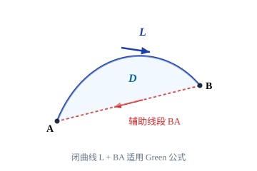
利用 Green 公式，得到
$$\int_L (\mathrm{e}^x\sin y - my)\,\mathrm{d}x + (\mathrm{e}^x\cos y - m)\,\mathrm{d}y + \int_{\overline{OA}} (\mathrm{e}^x\sin y - my)\,\mathrm{d}x + (\mathrm{e}^x\cos y - m)\,\mathrm{d}y$$ $$= \iint_D m\,\mathrm{d}x\mathrm{d}y = \frac{m\pi a^2}{2}.$$再计算沿 $\overline{OA}$ 的曲线积分．因为 $\overline{OA}$ 的方程为 $y = 0, x: 0 \to 2a$，那么
$$\int_{\overline{OA}} (\mathrm{e}^x\sin y - my)\,\mathrm{d}x + (\mathrm{e}^x\cos y - m)\,\mathrm{d}y = \int_0^{2a} 0\,\mathrm{d}x + 0 = 0.$$代入前面的式子，就有
$$\int_L (\mathrm{e}^x\sin y - my)\,\mathrm{d}x + (\mathrm{e}^x\cos y - m)\,\mathrm{d}y = \frac{m\pi a^2}{2}.$$曲线积分与路径无关的条件
容易想象，若一个函数沿着联结 $A, B$ 两个端点的一条路径 $L$ 积分，一般说来，积分值不仅会随端点变化而变化，还会随路径的不同而不同．
但上一节中曾指出，也有一些曲线积分的值，如重力所做的功，可以仅与路径的端点有关而与路径无关．下面就来探讨曲线积分与路径无关的条件．先给出积分与路径无关的定义．
设 $D$ 为平面区域，$P(x, y), Q(x, y)$ 为 $D$ 上的连续函数．如果对于 $D$ 内任意两点 $A, B$，积分值
$$\int_L P\,\mathrm{d}x + Q\,\mathrm{d}y$$只与 $A, B$ 两点有关，而与从 $A$ 到 $B$ 的路径 $L$（这里只考虑光滑或分段光滑曲线）无关，就称曲线积分 $\int_L P\,\mathrm{d}x + Q\,\mathrm{d}y$ 与路径无关，否则称为与路径有关．
曲线积分与路径无关问题可以归纳为下面的定理：
设 $D$ 为平面上的单连通区域，$P(x, y), Q(x, y)$ 在 $D$ 上具有连续偏导数．则下面的四个命题等价：
（1）对于 $D$ 内的任意一条光滑（或分段光滑）闭曲线 $L$，
$$\oint_L P\,\mathrm{d}x + Q\,\mathrm{d}y = 0;$$（2）曲线积分 $\int_L P\,\mathrm{d}x + Q\,\mathrm{d}y$ 与路径无关；
（3）存在 $D$ 上的可微函数 $U(x, y)$，使得
$$\mathrm{d}U = P\,\mathrm{d}x + Q\,\mathrm{d}y,$$即 $P\,\mathrm{d}x + Q\,\mathrm{d}y$ 为 $U(x, y)$ 的全微分，这时称 $U(x, y)$ 为 1-形式 $P\,\mathrm{d}x + Q\,\mathrm{d}y$ 的原函数；
（4）在 $D$ 内成立等式
$$\frac{\partial P}{\partial y} = \frac{\partial Q}{\partial x}.$$（1）$\implies$（2）：设 $A, B$ 为 $D$ 内任意两点，$L_1$ 和 $L_2$ 是 $D$ 中从 $A$ 到 $B$ 的任意两条路径，则 $C = L_1 + (-L_2)$ 就是 $D$ 中的一条闭曲线．因此
$$0 = \oint_C (P\,\mathrm{d}x + Q\,\mathrm{d}y) = \left(\int_{L_1} + \int_{-L_2}\right)(P\,\mathrm{d}x + Q\,\mathrm{d}y) = \int_{L_1} (P\,\mathrm{d}x + Q\,\mathrm{d}y) - \int_{L_2} (P\,\mathrm{d}x + Q\,\mathrm{d}y),$$于是
$$\int_{L_1} P\,\mathrm{d}x + Q\,\mathrm{d}y = \int_{L_2} P\,\mathrm{d}x + Q\,\mathrm{d}y,$$因此曲线积分与路径无关．
（2）$\implies$（3）：取一定点 $(x_0, y_0) \in D$，作函数
$$U(x, y) = \int_{(x_0, y_0)}^{(x, y)} P\,\mathrm{d}x + Q\,\mathrm{d}y,$$这里积分沿从 $(x_0, y_0)$ 到 $(x, y)$ 的任意路径．由于曲线积分与路径无关，因此 $U(x, y)$ 是有确定意义的．当取如图 14.3.10 所示的积分路径时，就成立
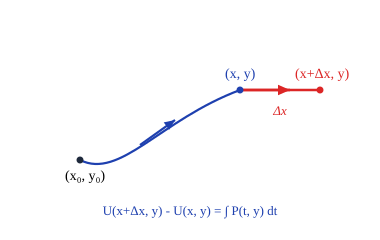
其中 $\xi$ 在 $x$ 与 $x+\Delta x$ 之间，这是利用了积分中值定理．因此
$$\frac{\partial U}{\partial x} = \lim_{\Delta x \to 0}\frac{U(x+\Delta x, y) - U(x, y)}{\Delta x} = \lim_{\Delta x \to 0} P(\xi, y) = P(x, y).$$同理可证
$$\frac{\partial U}{\partial y} = Q(x, y).$$所以在 $D$ 内成立 $\mathrm{d}U = P\,\mathrm{d}x + Q\,\mathrm{d}y$．
（3）$\implies$（4）：由于存在 $D$ 上的可微函数 $U$，使得 $\mathrm{d}U = P\,\mathrm{d}x + Q\,\mathrm{d}y$，那么
$$\frac{\partial U}{\partial x} = P(x, y), \quad \frac{\partial U}{\partial y} = Q(x, y).$$又由于函数 $P(x, y)$ 和 $Q(x, y)$ 在 $D$ 内具有连续偏导数，于是
$$\frac{\partial P}{\partial y} = \frac{\partial^2 U}{\partial y\partial x} = \frac{\partial^2 U}{\partial x\partial y} = \frac{\partial Q}{\partial x}.$$（4）$\implies$（1）：对于包含在 $D$ 内的光滑（或分段光滑）闭曲线 $L$，设它包围的图形是 $\overline{D}$，那么由 Green 公式就得
$$\oint_L P\,\mathrm{d}x + Q\,\mathrm{d}y = \iint_{\overline{D}} \left(\frac{\partial Q}{\partial x} - \frac{\partial P}{\partial y}\right)\mathrm{d}x\mathrm{d}y = 0.$$上面的证明还给出了当曲线积分与路径无关时，$P\,\mathrm{d}x + Q\,\mathrm{d}y$ 在 $D$ 上的原函数的构造
方法，即
$$U(x, y) = \int_{(x_0, y_0)}^{(x, y)} P\,\mathrm{d}x + Q\,\mathrm{d}y.$$设 $A(x_A, y_A), B(x_B, y_B) \in D$，对于从 $A$ 到 $B$ 的任意路径 $L$，任取一条 $D$ 内从 $(x_0, y_0)$ 到 $A$ 的路径 $l$，则
$$U(x_B, y_B) = \int_{(x_0, y_0)}^B P\,\mathrm{d}x + Q\,\mathrm{d}y, \quad U(x_A, y_A) = \int_{(x_0, y_0)}^A P\,\mathrm{d}x + Q\,\mathrm{d}y.$$因此
$$\int_L P\,\mathrm{d}x + Q\,\mathrm{d}y = \int_{(x_0, y_0)}^B P\,\mathrm{d}x + Q\,\mathrm{d}y - \int_{(x_0, y_0)}^A P\,\mathrm{d}x + Q\,\mathrm{d}y = U(x_B, y_B) - U(x_A, y_A).$$反之，若 $U(x, y)$ 是 $P\,\mathrm{d}x + Q\,\mathrm{d}y$ 在 $D$ 上的一个原函数，任取一条从 $A$ 到 $B$ 的路径（不妨设它是光滑的）使得
$$x = x(t), \quad y = y(t), \quad t: \alpha \to \beta,$$那么
$$\int_L P\,\mathrm{d}x + Q\,\mathrm{d}y = \int_\alpha^\beta [P(x(t), y(t))x'(t) + Q(x(t), y(t))y'(t)]\,\mathrm{d}t = \int_\alpha^\beta \frac{\mathrm{d}}{\mathrm{d}t} U(x(t), y(t))\,\mathrm{d}t = U(x_B, y_B) - U(x_A, y_A).$$于是得到：
设 $D$ 为平面单连通区域，$P(x, y)$ 和 $Q(x, y)$ 为 $D$ 上的连续函数，那么曲线积分 $\int_L P\,\mathrm{d}x + Q\,\mathrm{d}y$ 与路径无关的充分必要条件是在 $D$ 上存在 $P\,\mathrm{d}x + Q\,\mathrm{d}y$ 的一个原函数 $U(x, y)$．此时，公式
$$\int_L P\,\mathrm{d}x + Q\,\mathrm{d}y = U(B) - U(A)$$成立，其中 $AB$ 为任意从 $A$ 到 $B$ 的路径．
求 $P\,\mathrm{d}x + Q\,\mathrm{d}y$ 的原函数常用的是如图 14.3.11 所示的两个积分路径．如果选择原函数 $U(x, y) = \int_{(x_0, y_0)}^{(x, y)} P\,\mathrm{d}x + Q\,\mathrm{d}y + c$，那么如果积分路径取 $ANB$，则
$$U(x, y) = \int_{x_0}^x P(t, y_0)\,\mathrm{d}t + \int_{y_0}^y Q(x, t)\,\mathrm{d}t + c,$$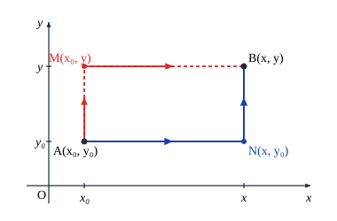
其中 $c = U(x_0, y_0)$ 为任意常数．若积分路径取 $AMB$，同样可以得到
$$U(x, y) = \int_{y_0}^y Q(x_0, t)\,\mathrm{d}t + \int_{x_0}^x P(t, y)\,\mathrm{d}t + c.$$证明：在整个 $xy$ 平面上，$(\mathrm{e}^x\sin y - my)\,\mathrm{d}x + (\mathrm{e}^x\cos y - mx)\,\mathrm{d}y$ 是某个函数的全微分，求这样一个函数，并计算
$$I = \int_L (\mathrm{e}^x\sin y - my)\,\mathrm{d}x + (\mathrm{e}^x\cos y - mx)\,\mathrm{d}y,$$其中 $L$ 为从 $(0, 0)$ 到 $(1, 1)$ 的任意一条道路．
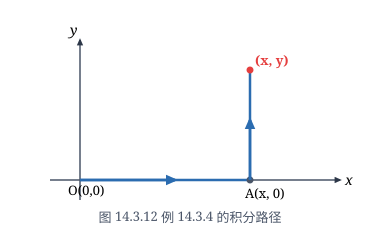
令 $P(x, y) = \mathrm{e}^x\sin y - my, Q(x, y) = \mathrm{e}^x\cos y - mx$，于是恒成立
$$\frac{\partial P}{\partial y} = \mathrm{e}^x\cos y - m = \frac{\partial Q}{\partial x}.$$因此由定理 14.3.2 知 $(\mathrm{e}^x\sin y - my)\,\mathrm{d}x + (\mathrm{e}^x\cos y - mx)\,\mathrm{d}y$ 是某个函数的全微分．
取路径如图 14.3.12，那么它的一个原函数为
$$U(x, y) = \int_{(0, 0)}^{(x, y)} (\mathrm{e}^x\sin y - my)\,\mathrm{d}x + (\mathrm{e}^x\cos y - mx)\,\mathrm{d}y$$ $$= \int_0^x 0\,\mathrm{d}t + \int_0^y (\mathrm{e}^x\cos t - mx)\,\mathrm{d}t = \mathrm{e}^x\sin y - mxy.$$于是由定理 14.3.3 得
$$I = \int_L (\mathrm{e}^x\sin y - my)\,\mathrm{d}x + (\mathrm{e}^x\cos y - mx)\,\mathrm{d}y = U(1, 1) - U(0, 0) = \mathrm{e}\sin 1 - m.$$计算 $\oint_L \dfrac{x\,\mathrm{d}y - y\,\mathrm{d}x}{x^2 + y^2}$，其中 $L$ 为一条不经过原点的简单闭曲线，方向为逆时针方向．
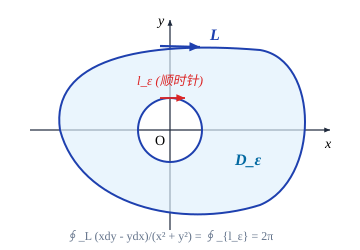
设 $L$ 所围的区域为 $D$．这时 $P(x, y) = -\dfrac{y}{x^2+y^2}, Q(x, y) = \dfrac{x}{x^2+y^2}$，当 $x^2 + y^2 \ne 0$ 时，
$$\frac{\partial P}{\partial y} = \frac{y^2 - x^2}{(x^2+y^2)^2} = \frac{\partial Q}{\partial x}.$$那么当 $D$ 不包含原点时，由 Green 公式即得
$$\oint_L \frac{x\,\mathrm{d}y - y\,\mathrm{d}x}{x^2 + y^2} = 0.$$当 $D$ 包含原点时，函数 $P, Q$ 在原点不满足 Green 公式的条件，因此不能直接使用．但在 $D$ 中挖去一个以原点为心，半径为 $r$ 的小圆盘后，对于余下的部分 Green 公式的条件就满足了．记 $D$ 中挖去小圆盘后的区域为 $D_1$，小圆盘的边界为 $l$（见图 14.3.13），在区域 $D_1$ 上应用 Green 公式得
$$\oint_L \frac{x\,\mathrm{d}y - y\,\mathrm{d}x}{x^2 + y^2} - \oint_l \frac{x\,\mathrm{d}y - y\,\mathrm{d}x}{x^2 + y^2} = 0.$$注意上式对 $l$ 取的方向是逆时针方向，这时 $l$ 的参数方程为
$$x = r\cos\theta, \quad y = r\sin\theta \quad (0 \le \theta \le 2\pi),$$因此
$$\oint_L \frac{x\,\mathrm{d}y - y\,\mathrm{d}x}{x^2 + y^2} = \oint_l \frac{x\,\mathrm{d}y - y\,\mathrm{d}x}{x^2 + y^2} = \int_0^{2\pi} \frac{r^2\cos^2\theta + r^2\sin^2\theta}{r^2}\,\mathrm{d}\theta = 2\pi.$$这个例子说明，定理 14.3.2 中对于区域是单连通和函数 $P, Q$ 具有连续偏导数的要求是必要的．
Gauss 公式
对于三重积分也有类似于 Green 公式的结论，在叙述前先引入空间上的二维单连通区域的概念．
设 $\Omega$ 为空间上的一个区域．如果 $\Omega$ 内的任何一张封闭曲面所围的立体仍属于 $\Omega$，那么称 $\Omega$ 为二维单连通区域，否则称 $\Omega$ 为二维复连通区域．通俗地说，二维单连通区域内不含有"气泡"．例如，实心球体 $\{(x, y, z) \mid x^2 + y^2 + z^2 < 1\}$ 是二维单连通区域，而空心球壳 $\{(x, y, z) \mid 1/2 < x^2 + y^2 + z^2 < 1\}$ 是二维复连通区域．
设 $\Omega$ 是 $\mathbb{R}^3$ 上由光滑（或分片光滑）的封闭曲面所围成的二维单连通闭区域，函数 $P(x, y, z), Q(x, y, z)$ 和 $R(x, y, z)$ 在 $\Omega$ 上具有连续偏导数，则成立
$$\iint_{\partial\Omega} P\,\mathrm{d}y\mathrm{d}z + Q\,\mathrm{d}z\mathrm{d}x + R\,\mathrm{d}x\mathrm{d}y = \iiint_\Omega \left(\frac{\partial P}{\partial x} + \frac{\partial Q}{\partial y} + \frac{\partial R}{\partial z}\right)\mathrm{d}x\mathrm{d}y\mathrm{d}z,$$这里 $\partial\Omega$ 的定向为外侧，它称为 $\Omega$ 的诱导定向．
考虑 $\Omega$ 可同时表为以下三种形式
$$\Omega = \{(x, y, z) \mid (x, y) \in \Omega_{xy}, z_1(x, y) \le z \le z_2(x, y)\}$$ $$= \{(x, y, z) \mid (y, z) \in \Omega_{yz}, x_1(y, z) \le x \le x_2(y, z)\}$$ $$= \{(x, y, z) \mid (z, x) \in \Omega_{zx}, y_1(z, x) \le y \le y_2(z, x)\}$$的情形，其中 $\Omega_{xy}, \Omega_{yz}, \Omega_{zx}$ 分别为 $\Omega$ 在 $xy, yz, zx$ 平面的投影（见图 14.3.14），这样的区域称为标准区域．
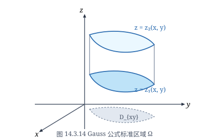
设 $\Sigma_1$ 为曲面 $z = z_1(x, y), (x, y) \in \Omega_{xy}$，$\Sigma_2$ 为曲面 $z = z_2(x, y), (x, y) \in \Omega_{xy}$，按照所规定的定向，$\Sigma_1$ 的定向为下侧，$\Sigma_2$ 的定向为上侧．那么利用 $\Omega$ 的第一种表示就有
$$\iiint_\Omega \frac{\partial R}{\partial z}\,\mathrm{d}x\mathrm{d}y\mathrm{d}z = \iint_{\Omega_{xy}} \mathrm{d}x\mathrm{d}y \int_{z_1(x, y)}^{z_2(x, y)} \frac{\partial R}{\partial z}\,\mathrm{d}z = \iint_{\Omega_{xy}} [R(x, y, z_2(x, y)) - R(x, y, z_1(x, y))]\,\mathrm{d}x\mathrm{d}y$$ $$= \iint_{\Sigma_2} R(x, y, z)\,\mathrm{d}x\mathrm{d}y + \iint_{\Sigma_1} R(x, y, z)\,\mathrm{d}x\mathrm{d}y = \iint_{\partial\Omega} R(x, y, z)\,\mathrm{d}x\mathrm{d}y.$$同理利用 $\Omega$ 的第二种表示和第三种表示可证
$$\iiint_\Omega \frac{\partial Q}{\partial y}\,\mathrm{d}x\mathrm{d}y\mathrm{d}z = \iint_{\partial\Omega} Q(x, y, z)\,\mathrm{d}z\mathrm{d}x,$$ $$\iiint_\Omega \frac{\partial P}{\partial x}\,\mathrm{d}x\mathrm{d}y\mathrm{d}z = \iint_{\partial\Omega} P(x, y, z)\,\mathrm{d}y\mathrm{d}z.$$三式相加就是 Gauss 公式．
当 $\Omega$ 可分成有限块标准区域时，可添加辅助曲面（见图 14.3.15），将其分成一块块标准区域．如同讨论 Green 公式的情形一样，对每块标准区域应用 Gauss 公式，再把它们加起来．注意到如果一片曲面为两块不同标准区域的共同边界时，会出现沿它不同侧面的两个曲面积分，在相加时它们就会互相抵消，最后只留下的是沿 $\partial\Omega$ 的曲面积分，这种情况就得到证明．
更一般的情况比较复杂，这里从略．
Gauss 公式也可以推广到具有有限个"洞"的二维复连通区域上去．如对图 14.3.16 所示的有一个"洞"的区域，用适当的曲面将它分割成两个二维单连通区域后分别应用 Gauss 公式，再相加，即可推出 Gauss 公式依然成立．注意，这时区域外面的边界还是取外侧，但内部的边界却取内侧．但相对于区域，它们事实上都是外侧．
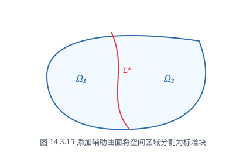
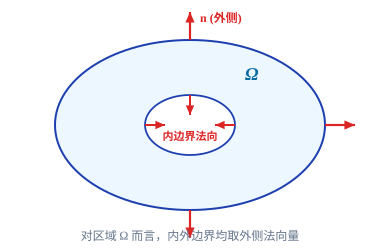
Gauss 公式说明了在空间中一个区域 $\Omega$ 上的三重积分与沿其边界 $\partial\Omega$ 的曲面积分间的内在关系，可视为 Green 公式的一个推广．与 Green 公式一样，Gauss 公式的一个直接应用就是可用沿区域 $\Omega$ 的边界的曲面积分来计算 $\Omega$ 的体积，具体地说就是
$$V = \iiint_\Omega \mathrm{d}x\mathrm{d}y\mathrm{d}z = \frac{1}{3}\iint_{\partial\Omega} x\,\mathrm{d}y\mathrm{d}z + y\,\mathrm{d}z\mathrm{d}x + z\,\mathrm{d}x\mathrm{d}y = \iint_{\partial\Omega} x\,\mathrm{d}y\mathrm{d}z = \iint_{\partial\Omega} y\,\mathrm{d}z\mathrm{d}x = \iint_{\partial\Omega} z\,\mathrm{d}x\mathrm{d}y,$$其中 $\partial\Omega$ 的定向为外侧．
用上述公式计算椭球面 $\dfrac{x^2}{a^2} + \dfrac{y^2}{b^2} + \dfrac{z^2}{c^2} = 1$ 所围椭球的体积．
椭球的体积在上一章已经计算过，这里采用另一种方法．椭球面的参数方程为
$$x = a\sin\varphi\cos\theta, \quad y = b\sin\varphi\sin\theta, \quad z = c\cos\varphi, \quad 0 \le \theta \le 2\pi, \quad 0 \le \varphi \le \pi,$$于是
$$\frac{\partial(x, y)}{\partial(\varphi, \theta)} = ab\sin\varphi\cos\varphi.$$所以，由以上公式得椭球的体积为
$$V = \iint_{\partial\Omega} z\,\mathrm{d}x\mathrm{d}y = \iint_{\substack{0\le\theta\le 2\pi\\0\le\varphi\le\pi}} c\cos\varphi \frac{\partial(x, y)}{\partial(\varphi, \theta)}\,\mathrm{d}\varphi\mathrm{d}\theta = abc\iint_{\substack{0\le\theta\le 2\pi\\0\le\varphi\le\pi}} \sin\varphi\cos^2\varphi\,\mathrm{d}\varphi\mathrm{d}\theta$$ $$= abc\int_0^{2\pi}\mathrm{d}\theta \int_0^\pi \sin\varphi\cos^2\varphi\,\mathrm{d}\varphi = \frac{4}{3}\pi abc.$$请读者想想，为什么在运算中第一步到第二步时积分号前取"+"号．
求 $\iint_\Sigma x^3\,\mathrm{d}y\mathrm{d}z + y^3\,\mathrm{d}z\mathrm{d}x + z^3\,\mathrm{d}x\mathrm{d}y$，其中 $\Sigma$ 为球面 $x^2 + y^2 + z^2 = a^2$，方向取外侧．
由 Gauss 公式并应用球面坐标变换得
$$\iint_\Sigma x^3\,\mathrm{d}y\mathrm{d}z + y^3\,\mathrm{d}z\mathrm{d}x + z^3\,\mathrm{d}x\mathrm{d}y = 3\iiint_{x^2+y^2+z^2\le a^2} (x^2 + y^2 + z^2)\,\mathrm{d}x\mathrm{d}y\mathrm{d}z$$ $$= 3\int_0^{2\pi}\mathrm{d}\theta \int_0^\pi \mathrm{d}\varphi \int_0^a r^4\sin\varphi\,\mathrm{d}r = \frac{12}{5}\pi a^5.$$设某种流体的速度为 $v = xi + yj + zk$，求单位时间内流体流过曲面 $\Sigma: y = x^2 + z^2$ ($0 \le y \le h$) 的流量，其中 $\Sigma$ 的方向取左侧（见图 14.3.17）．
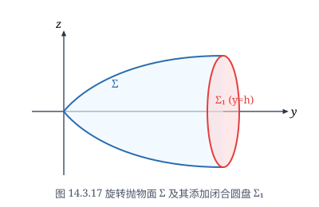
流量的计算公式为
$$\Phi = \iint_\Sigma v \cdot n\,\mathrm{d}S = \iint_\Sigma x\,\mathrm{d}y\mathrm{d}z + y\,\mathrm{d}z\mathrm{d}x + z\,\mathrm{d}x\mathrm{d}y.$$由于 $\Sigma$ 不是封闭曲面，但添加一片曲面 $\sigma: y = h, x^2 + z^2 \le h$ 后，$\Sigma + \sigma$ 就是封闭曲面，这里 $\sigma$ 的方向取右侧．记 $\Sigma + \sigma$ 所围的区域为 $\Omega$，则由 Gauss 公式，得
$$\left(\iint_\Sigma + \iint_\sigma\right)(x\,\mathrm{d}y\mathrm{d}z + y\,\mathrm{d}z\mathrm{d}x + z\,\mathrm{d}x\mathrm{d}y) = -\iiint_\Omega (1 + 1 + 1)\,\mathrm{d}x\mathrm{d}y\mathrm{d}z = -3\iiint_\Omega \mathrm{d}x\mathrm{d}y\mathrm{d}z = -\frac{3\pi h^2}{2},$$其中计算三重积分时利用了柱面坐标变换 $x = r\cos\theta, z = r\sin\theta, y = y$．又
$$\iint_\sigma x\,\mathrm{d}y\mathrm{d}z + y\,\mathrm{d}z\mathrm{d}x + z\,\mathrm{d}x\mathrm{d}y = \iint_\sigma y\,\mathrm{d}z\mathrm{d}x = \iint_{x^2+z^2\le h} h\,\mathrm{d}z\mathrm{d}x = \pi h^2.$$所以
$$\Phi = \iint_\Sigma x\,\mathrm{d}y\mathrm{d}z + y\,\mathrm{d}z\mathrm{d}x + z\,\mathrm{d}x\mathrm{d}y = -\frac{3\pi h^2}{2} - \pi h^2 = -\frac{5\pi h^2}{2}.$$Stokes 公式
设 $\Sigma$ 为具有分段光滑边界的非封闭光滑双侧曲面．选定曲面的一侧，并如下规定 $\Sigma$ 的边界 $\partial\Sigma$ 的一个正向：如果一个人保持与曲面选定一侧的法向量同向站立，当他沿 $\partial\Sigma$ 的这个方向行走时，曲面 $\Sigma$ 总是在他左边．$\partial\Sigma$ 的这个定向也称为 $\Sigma$ 的诱导定向，这种定向方法称为右手定则．
设 $\Sigma$ 为光滑曲面，其边界 $\partial\Sigma$ 为分段光滑闭曲线．若函
数 $P(x, y, z), Q(x, y, z), R(x, y, z)$ 在 $\Sigma$ 及其边界 $\partial\Sigma$ 上具有连续偏导数，则成立
$$\oint_{\partial\Sigma} P\,\mathrm{d}x + Q\,\mathrm{d}y + R\,\mathrm{d}z = \iint_\Sigma \left(\frac{\partial R}{\partial y} - \frac{\partial Q}{\partial z}\right)\mathrm{d}y\mathrm{d}z + \left(\frac{\partial P}{\partial z} - \frac{\partial R}{\partial x}\right)\mathrm{d}z\mathrm{d}x + \left(\frac{\partial Q}{\partial x} - \frac{\partial P}{\partial y}\right)\mathrm{d}x\mathrm{d}y,$$其中 $\partial\Sigma$ 取诱导定向．
只证明 $\Sigma$ 可同时表为以下三种形式
$$\Sigma = \{(x, y, z) \mid (x, y) \in \Sigma_{xy}, z = z(x, y)\} = \{(x, y, z) \mid (y, z) \in \Sigma_{yz}, x = x(y, z)\} = \{(x, y, z) \mid (z, x) \in \Sigma_{zx}, y = y(z, x)\}$$的情形，其中 $\Sigma_{xy}, \Sigma_{yz}, \Sigma_{zx}$ 分别为 $\Sigma$ 在 $xy, yz, zx$ 平面的投影（见图 14.3.18），这样的曲面称为标准曲面．其他复杂情况从略．
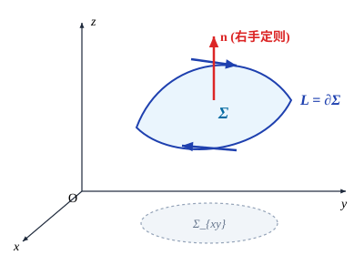
不妨设 $\Sigma$ 的定向为上侧．利用曲线积分的计算公式，由 $\Sigma$ 的第一种表示易得
$$\oint_{\partial\Sigma} P(x, y, z)\,\mathrm{d}x = \oint_{\partial\Sigma_{xy}} P(x, y, z(x, y))\,\mathrm{d}x,$$其中 $\partial\Sigma_{xy}$ 为 $\Sigma_{xy}$ 的正向边界，再对后一式应用 Green 公式得
$$\oint_{\partial\Sigma_{xy}} P(x, y, z(x, y))\,\mathrm{d}x = -\iint_{\Sigma_{xy}} \frac{\partial}{\partial y} P(x, y, z(x, y))\,\mathrm{d}x\mathrm{d}y = -\iint_{\Sigma_{xy}} \left[\frac{\partial P}{\partial y}(x, y, z(x, y)) + \frac{\partial P}{\partial z}(x, y, z(x, y))\frac{\partial z}{\partial y}\right]\mathrm{d}x\mathrm{d}y.$$注意到曲面取上侧，则 $\Sigma$ 的法向量的方向余弦为
$$(\cos\alpha, \cos\beta, \cos\gamma) = \frac{1}{\sqrt{1 + z_x^2 + z_y^2}}(-z_x, -z_y, 1),$$因此
$$\frac{\partial z}{\partial y} = -\frac{\cos\beta}{\cos\gamma}.$$所以
$$\frac{\partial P}{\partial z}\frac{\partial z}{\partial y}\,\mathrm{d}x\mathrm{d}y = -\frac{\partial P}{\partial z}\frac{\cos\beta}{\cos\gamma}\cos\gamma\,\mathrm{d}S = -\frac{\partial P}{\partial z}\cos\beta\,\mathrm{d}S = -\frac{\partial P}{\partial z}\,\mathrm{d}z\mathrm{d}x.$$结合这几式就得
$$\oint_{\partial\Sigma} P(x, y, z)\,\mathrm{d}x = \iint_\Sigma \frac{\partial P}{\partial z}\,\mathrm{d}z\mathrm{d}x - \frac{\partial P}{\partial y}\,\mathrm{d}x\mathrm{d}y.$$同理可证
$$\oint_{\partial\Sigma} Q(x, y, z)\,\mathrm{d}y = \iint_\Sigma \frac{\partial Q}{\partial x}\,\mathrm{d}x\mathrm{d}y - \frac{\partial Q}{\partial z}\,\mathrm{d}y\mathrm{d}z,$$ $$\oint_{\partial\Sigma} R(x, y, z)\,\mathrm{d}z = \iint_\Sigma \frac{\partial R}{\partial y}\,\mathrm{d}y\mathrm{d}z - \frac{\partial R}{\partial x}\,\mathrm{d}z\mathrm{d}x.$$三式相加即得 Stokes 公式．
利用行列式记号，可以将 Stokes 公式写成
$$\oint_{\partial\Sigma} P\,\mathrm{d}x + Q\,\mathrm{d}y + R\,\mathrm{d}z = \iint_\Sigma \begin{vmatrix} \mathrm{d}y\mathrm{d}z & \mathrm{d}z\mathrm{d}x & \mathrm{d}x\mathrm{d}y \\ \dfrac{\partial}{\partial x} & \dfrac{\partial}{\partial y} & \dfrac{\partial}{\partial z} \\ P & Q & R \end{vmatrix} = \iint_\Sigma \begin{vmatrix} \cos\alpha & \cos\beta & \cos\gamma \\ \dfrac{\partial}{\partial x} & \dfrac{\partial}{\partial y} & \dfrac{\partial}{\partial z} \\ P & Q & R \end{vmatrix}\mathrm{d}S.$$Stokes 定理说明了沿曲面 $\Sigma$ 的曲面积分与沿其边界 $\partial\Sigma$ 的曲线积分间的内在关系．它也是 Green 公式的一个自然推广（这时在 Green 公式中，平面区域的定向为指向读者）．
计算 $I = \int_L (y^2 - z^2)\,\mathrm{d}x + (z^2 - x^2)\,\mathrm{d}y + (x^2 - y^2)\,\mathrm{d}z$，其中 $L$ 为平面 $x + y + z = 1$ 被三个坐标平面所截三角形 $\Sigma$ 的边界，若从 $x$ 轴的正向看去，定向为逆时针方向（见图 14.3.19）．
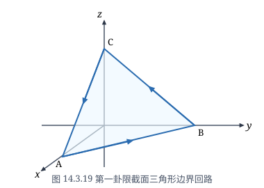
由 Stokes 公式得
$$I = \oint_L (y^2 - z^2)\,\mathrm{d}x + (z^2 - x^2)\,\mathrm{d}y + (x^2 - y^2)\,\mathrm{d}z$$ $$= \iint_\Sigma \begin{vmatrix} \cos\alpha & \cos\beta & \cos\gamma \\ \dfrac{\partial}{\partial x} & \dfrac{\partial}{\partial y} & \dfrac{\partial}{\partial z} \\ y^2 - z^2 & z^2 - x^2 & x^2 - y^2 \end{vmatrix}\mathrm{d}S$$ $$= -2\iint_\Sigma [(y + z)\cos\alpha + (x + z)\cos\beta + (x + y)\cos\gamma]\,\mathrm{d}S.$$由于 $\Sigma$ 的方程为 $x + y + z = 1$，定向为上侧（这是要与 $L$ 的定向相配合来使用 Stokes 公式），则易计算
$$\cos\alpha = \cos\beta = \cos\gamma = \frac{1}{\sqrt{3}}.$$因此注意到在三角形 $\Sigma$ 上成立 $x + y + z = 1$，且 $\Sigma$ 的面积为 $\frac{\sqrt{3}}{2}$，就得
$$I = -\frac{4}{\sqrt{3}}\iint_\Sigma (x + y + z)\,\mathrm{d}S = -\frac{4}{\sqrt{3}}\iint_\Sigma \mathrm{d}S = -2.$$计算 $I = \int_L (y^2 + z^2)\,\mathrm{d}x + (z^2 + x^2)\,\mathrm{d}y + (x^2 + y^2)\,\mathrm{d}z$，其中 $L$ 是上半球面 $x^2 + y^2 + z^2 = 2Rx$ ($z \ge 0$) 与圆柱面 $x^2 + y^2 = 2rx$ ($R > r > 0$) 的交线，从 $z$ 轴的正向看去，是逆时针方向（见图 14.3.20）．
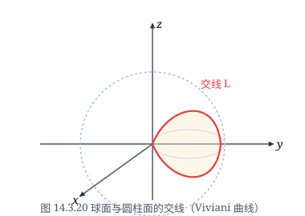
记在球面 $x^2 + y^2 + z^2 = 2Rx$ 上由 $L$ 所围的曲面为 $\Sigma$．由于 $L$ 的定向，为应用 Stokes 定理取 $\Sigma$ 的定向为上侧，所以其法向量的方向余弦为
$$\cos\alpha = \frac{x - R}{R}, \quad \cos\beta = \frac{y}{R}, \quad \cos\gamma = \frac{z}{R}.$$于是由 Stokes 定理得
$$I = \oint_L (y^2 + z^2)\,\mathrm{d}x + (z^2 + x^2)\,\mathrm{d}y + (x^2 + y^2)\,\mathrm{d}z$$ $$= \iint_\Sigma \begin{vmatrix} \cos\alpha & \cos\beta & \cos\gamma \\ \dfrac{\partial}{\partial x} & \dfrac{\partial}{\partial y} & \dfrac{\partial}{\partial z} \\ y^2 + z^2 & z^2 + x^2 & x^2 + y^2 \end{vmatrix}\mathrm{d}S$$ $$= 2\iint_\Sigma [(y - z)\cos\alpha + (z - x)\cos\beta + (x - y)\cos\gamma]\,\mathrm{d}S$$ $$= 2\iint_\Sigma \left[(y - z)\frac{x - R}{R} + (z - x)\frac{y}{R} + (x - y)\frac{z}{R}\right]\mathrm{d}S$$ $$= \frac{2}{R}\left(R\iint_\Sigma z\,\mathrm{d}S - R\iint_\Sigma y\,\mathrm{d}S\right) = 2\left(\iint_\Sigma z\,\mathrm{d}S - \iint_\Sigma y\,\mathrm{d}S\right).$$由于曲面 $\Sigma$ 关于 $xz$ 平面对称，因此 $\iint_\Sigma y\,\mathrm{d}S = 0$．利用曲面积分的计算公式就得
$$I = 2\iint_\Sigma z\,\mathrm{d}S = 2\iint_{(x-r)^2+y^2\le r^2} z \frac{R}{z}\,\mathrm{d}x\mathrm{d}y = 2R\iint_{(x-r)^2+y^2\le r^2}\mathrm{d}x\mathrm{d}y = 2\pi r^2 R.$$有兴趣的读者可以再利用 $L$ 的参数方程来计算一下这个曲线积分．
习题 14.3
- 利用 Green 公式计算下列积分：
- $\displaystyle\int_L (x + y)^2\,\mathrm{d}x - (x^2 + y^2)\,\mathrm{d}y$，其中 $L$ 是以 $A(1, 1), B(3, 2), C(2, 5)$ 为顶点的三角形的边界，逆时针方向；
- $\displaystyle\int_L xy^2\,\mathrm{d}x - x^2 y\,\mathrm{d}y$，其中 $L$ 是圆周 $x^2 + y^2 = a^2$，逆时针方向；
- $\displaystyle\int_L (x^2 y\cos x + 2xy\sin x - y^2 \mathrm{e}^x)\,\mathrm{d}x + (x^2\sin x - 2y\mathrm{e}^x)\,\mathrm{d}y$，其中 $L$ 是星形线 $x^{2/3} + y^{2/3} = a^{2/3}$ ($a > 0$)，逆时针方向；
- $\displaystyle\int_L \mathrm{e}^x [(1 - \cos y)\,\mathrm{d}x - (y - \sin y)\,\mathrm{d}y]$，其中 $L$ 是曲线 $y = \sin x$ 上从 $(0, 0)$ 到 $(\pi, 0)$ 的一段；
- $\displaystyle\int_L (x^2 - y)\,\mathrm{d}x - (x + \sin^2 y)\,\mathrm{d}y$，其中 $L$ 是圆周 $x^2 + y^2 = 2x$ 的上半部分，方向从点 $(0, 0)$ 到点 $(2, 0)$；
- $\displaystyle\int_L [\mathrm{e}^x\sin y - b(x + y)]\,\mathrm{d}x + (\mathrm{e}^x\cos y - ax)\,\mathrm{d}y$，其中 $a, b$ 是正常数，$L$ 为从点 $A(2a, 0)$ 沿曲线 $y = \sqrt{2ax - x^2}$ 到点 $O(0, 0)$ 的一段；
- $\displaystyle\int_L \frac{x\,\mathrm{d}y - y\,\mathrm{d}x}{4x^2 + y^2}$，其中 $L$ 是以点 $(1, 0)$ 为中心，$R$ 为半径的圆周 ($R > 1$)，逆时针方向；
- $\displaystyle\int_L \frac{(x - y)\,\mathrm{d}x + (x + 4y)\,\mathrm{d}y}{x^2 + 4y^2}$，其中 $L$ 为单位圆周 $x^2 + y^2 = 1$，逆时针方向；
- $\displaystyle\int_L \frac{\mathrm{e}^x [(x\sin y - y\cos y)\,\mathrm{d}x + (x\cos y - y\sin y)\,\mathrm{d}y]}{x^2 + y^2}$，其中 $L$ 是包围原点的简单光滑闭曲线，逆时针方向．
- 利用曲线积分，求下列曲线所围成的图形的面积：
- 星形线 $x = a\cos^3 t, y = a\sin^3 t$；
- 抛物线 $(x + y)^2 = ax$ ($a > 0$) 与 $x$ 轴；
- 旋轮线的一段：$\begin{cases} x = a(t - \sin t), \\ y = a(1 - \cos t), \end{cases} t \in [0, 2\pi]$ 与 $x$ 轴．
- 先证明曲线积分与路径无关，再计算积分值：
- $\displaystyle\int_{(0, 0)}^{(1, 1)} (x - y)(\mathrm{d}x - \mathrm{d}y)$；
- $\displaystyle\int_{(2, 1)}^{(1, 2)} \varphi(x)\,\mathrm{d}x + \psi(y)\,\mathrm{d}y$，其中 $\varphi(x), \psi(y)$ 为连续函数；
- $\displaystyle\int_{(1, 0)}^{(6, 8)} \frac{x\,\mathrm{d}x + y\,\mathrm{d}y}{\sqrt{x^2 + y^2}}$，沿不通过原点的路径．
- 证明：$(2x\cos y + y^2\cos x)\,\mathrm{d}x + (2y\sin x - x^2\sin y)\,\mathrm{d}y$ 在整个 $xy$ 平面上是某个函数的全微分，并找出它的一个原函数．
- 证明：$\dfrac{x\,\mathrm{d}x + y\,\mathrm{d}y}{x^2 + y^2}$ 在除去 $y$ 的负半轴及原点的裂缝 $xy$ 平面上是某个函数的全微分，并找出它的一个原函数．
- 设 $Q(x, y)$ 在 $xy$ 平面上有连续偏导数，曲线积分 $\displaystyle\int_L 2xy\,\mathrm{d}x + Q(x, y)\,\mathrm{d}y$ 与路径无关，并且对任意 $t$ 恒有 $$\int_{(0, 0)}^{(t, 1)} 2xy\,\mathrm{d}x + Q(x, y)\,\mathrm{d}y = \int_{(0, 0)}^{(1, t)} 2xy\,\mathrm{d}x + Q(x, y)\,\mathrm{d}y,$$ 求 $Q(x, y)$．
- 确定常数 $\lambda$，使得右半平面 $x > 0$ 上的向量函数 $r(x, y) = 2xy(x^4 + y^2)^\lambda i - x^2(x^4 + y^2)^\lambda j$ 为某二元函数 $u(x, y)$ 的梯度，并求 $u(x, y)$．
- 设一力场为 $F = (3x^2 y + 8xy^2)i + (x^3 + 8x^2 y + 12y\mathrm{e}^y)j$，证明：质点在此场内移动时，场力所做的功与路径无关．
- 利用 Gauss 公式计算下列曲面积分：
- $\displaystyle\iint_\Sigma x^2\,\mathrm{d}y\mathrm{d}z + y^2\,\mathrm{d}z\mathrm{d}x + z^2\,\mathrm{d}x\mathrm{d}y$，$\Sigma$ 为立方体 $0 \le x, y, z \le a$ 的表面，方向取外侧；
- $\displaystyle\iint_\Sigma (x - y + z)\,\mathrm{d}y\mathrm{d}z + (y - z + x)\,\mathrm{d}z\mathrm{d}x + (z - x + y)\,\mathrm{d}x\mathrm{d}y$，其中 $\Sigma$ 为闭曲面 $|x - y + z| + |y - z + x| + |z - x + y| = 1$，方向取外侧；
- $\displaystyle\iint_\Sigma (x^2\cos\alpha + y^2\cos\beta + z^2\cos\gamma)\,\mathrm{d}S$，其中 $\Sigma$ 为锥面 $z^2 = x^2 + y^2$ 介于平面 $z = 0$ 与 $z = h$ ($h > 0$) 之间的部分，方向取下侧；
- $\displaystyle\iint_\Sigma x\,\mathrm{d}y\mathrm{d}z + y\,\mathrm{d}z\mathrm{d}x + z\,\mathrm{d}x\mathrm{d}y$，其中 $\Sigma$ 为上半球面 $z = \sqrt{R^2 - x^2 - y^2}$，方向取上侧；
- $\displaystyle\iint_\Sigma 2(1 - x^2)\,\mathrm{d}y\mathrm{d}z + 8xy\,\mathrm{d}z\mathrm{d}x - 4zx\,\mathrm{d}x\mathrm{d}y$，其中 $\Sigma$ 是由 $xy$ 平面上的曲线 $x = \mathrm{e}^y$ ($0 \le y \le a$) 绕 $x$ 轴旋转而成的旋转面，曲面的法向量与 $x$ 轴的正向的夹角为钝角；
- $\displaystyle\iint_\Sigma (2x + z)\,\mathrm{d}y\mathrm{d}z + z\,\mathrm{d}x\mathrm{d}y$，其中 $\Sigma$ 是曲面 $z = x^2 + y^2$ ($0 \le z \le 1$)，曲面的法向量与 $z$ 轴的正向的夹角为锐角；
- $\displaystyle\iint_\Sigma \frac{ax\,\mathrm{d}y\mathrm{d}z + (a + z)^2\,\mathrm{d}x\mathrm{d}y}{(x^2 + y^2 + z^2)^{1/2}}$ ($a > 0$)，其中 $\Sigma$ 是下半球面 $z = -\sqrt{a^2 - x^2 - y^2}$，方向取上侧；
- $\displaystyle\iint_\Sigma \frac{x\,\mathrm{d}y\mathrm{d}z + y\,\mathrm{d}z\mathrm{d}x + z\,\mathrm{d}x\mathrm{d}y}{(x^2 + y^2 + z^2)^{3/2}}$，其中 $\Sigma$ 是：
- 椭球面 $x^2 + 2y^2 + 3z^2 = 1$，方向取外侧；
- 抛物面 $1 - \dfrac{z}{5} = \dfrac{(x - 2)^2}{16} + \dfrac{(y - 1)^2}{9}$ ($z \ge 0$)，方向取上侧．
- 利用 Gauss 公式证明阿基米德原理：将物体全部浸没在液体中时，物体所受的浮力等于与物体同体积的液体的重量，而方向是垂直向上的．
- 设某种流体的速度场为 $v = yz i + xz j + xy k$，求单位时间内流体：
- 流过圆柱：$x^2 + y^2 \le a^2, 0 \le z \le h$ 的侧面（方向取外侧）的流量；
- 流过该圆柱的全表面（方向取外侧）的流量．
- 利用 Stokes 公式计算下列曲线积分：
- $\displaystyle\int_L y\,\mathrm{d}x + z\,\mathrm{d}y + x\,\mathrm{d}z$，其中 $L$ 是球面 $x^2 + y^2 + z^2 = a^2$ 与平面 $x + y + z = 0$ 的交线（它是圆周），从 $x$ 轴的正向看去，此圆周的方向是逆时针方向；
- $\displaystyle\int_L 3z\,\mathrm{d}x + 5x\,\mathrm{d}y - 2y\,\mathrm{d}z$，其中 $L$ 是圆柱面 $x^2 + y^2 = 1$ 与平面 $z = y + 3$ 的交线（它是椭圆），从 $z$ 轴的正向看去，是逆时针方向；
- $\displaystyle\int_L (y - z)\,\mathrm{d}x + (z - x)\,\mathrm{d}y + (x - y)\,\mathrm{d}z$，其中 $L$ 为圆柱面 $x^2 + y^2 = a^2$ 和平面 $\dfrac{x}{a} + \dfrac{z}{h} = 1$ ($a > 0, h > 0$) 的交线（它是椭圆），从 $x$ 轴的正向看去，是逆时针方向；
- $\displaystyle\int_L (y^2 - z^2)\,\mathrm{d}x + (z^2 - x^2)\,\mathrm{d}y + (x^2 - y^2)\,\mathrm{d}z$，其中 $L$ 是用平面 $x + y + z = \dfrac{3}{2}$ 截立方体 $0 \le x, y, z \le 1$ 的表面所得的截痕，从 $x$ 轴的正向看去，是逆时针方向；
- $\displaystyle\int_L (x^2 - yz)\,\mathrm{d}x + (y^2 - xz)\,\mathrm{d}y + (z^2 - xy)\,\mathrm{d}z$，其中 $L$ 是沿着螺旋线 $x = a\cos\varphi, y = a\sin\varphi, z = \dfrac{h}{2\pi}\varphi$ 从点 $A(a, 0, 0)$ 至点 $B(a, 0, h)$ 的路径；
- $\displaystyle\int_L (y^2 - z^2)\,\mathrm{d}x + (2z^2 - x^2)\,\mathrm{d}y + (3x^2 - y^2)\,\mathrm{d}z$，其中 $L$ 是平面 $x + y + z = 2$ 与柱面 $|x| + |y| = 1$ 的交线，从 $z$ 轴的正向看去，是逆时针方向．
- 设 $f(t)$ 是 $\mathbb{R}$ 上恒为正值的连续函数，$L$ 是逆时针方向的圆周 $(x - a)^2 + (y - a)^2 = 1$．证明 $$\oint_L x f(y)\,\mathrm{d}y - \frac{y}{f(x)}\,\mathrm{d}x \ge 2\pi.$$
- 设 $D$ 为两条直线 $y = x, y = 4x$ 和两条双曲线 $xy = 1, xy = 4$ 所围成的区域，$F(u)$ 是具有连续导数的一元函数，记 $f(u) = F'(u)$．证明 $$\oint_{\partial D} \frac{F(xy)}{y}\,\mathrm{d}y = \ln 2 \int_1^4 f(u)\,\mathrm{d}u,$$ 其中 $\partial D$ 的方向为逆时针方向．
- 证明：若 $\Sigma$ 为封闭曲面，$l$ 为一固定向量，则 $$\iint_\Sigma \cos(n, l)\,\mathrm{d}S = 0,$$ 其中 $n$ 为曲面 $\Sigma$ 的单位外法向量．
- 设区域 $\Omega$ 由分片光滑封闭曲面 $\Sigma$ 所围成．证明： $$\iiint_\Omega \frac{\mathrm{d}x\mathrm{d}y\mathrm{d}z}{r} = \frac{1}{2}\iint_\Sigma \cos(r, n)\,\mathrm{d}S,$$ 其中 $n$ 为曲面 $\Sigma$ 的单位外法向量，$r = (x, y, z), r = \sqrt{x^2 + y^2 + z^2}$．
- 设函数 $P(x, y, z), Q(x, y, z)$ 和 $R(x, y, z)$ 在 $\mathbb{R}^3$ 上具有连续偏导数，且对于任意光滑曲面 $\Sigma$，成立 $$\iint_\Sigma P\,\mathrm{d}y\mathrm{d}z + Q\,\mathrm{d}z\mathrm{d}x + R\,\mathrm{d}x\mathrm{d}y = 0.$$ 证明：在 $\mathbb{R}^3$ 上，$\dfrac{\partial P}{\partial x} + \dfrac{\partial Q}{\partial y} + \dfrac{\partial R}{\partial z} \equiv 0$．
- 设 $L$ 是平面 $x\cos\alpha + y\cos\beta + z\cos\gamma - p = 0$ 上的简单闭曲线，它所包围的区域 $D$ 的面积为 $S$，其中 $(\cos\alpha, \cos\beta, \cos\gamma)$ 是平面取定方向上的单位向量．证明 $$S = \frac{1}{2}\oint_L \begin{vmatrix} \mathrm{d}x & \mathrm{d}y & \mathrm{d}z \\ \cos\alpha & \cos\beta & \cos\gamma \\ x & y & z \end{vmatrix},$$ 其中 $L$ 的定向与平面的定向符合右手定则．
§4 微分形式的外微分
外微分
设 $U \subset \mathbb{R}^n$ 为区域，$U$ 上的可微函数 $f(x_1, x_2, \ldots, x_n)$ 的全微分为
$$\mathrm{d}f = \sum_{i=1}^n \frac{\partial f}{\partial x_i}\,\mathrm{d}x_i.$$这可以理解为，一个 0-形式作了微分运算后成为了 1-形式．
现在将微分运算 $\mathrm{d}$ 推广到 $\Lambda^k$ 上去．对 $\Lambda^k$ 中的任意一个 $k$-形式
$$\omega = \sum_{1 \le i_1 < i_2 < \dots < i_k \le n} a_{i_1 i_2 \dots i_k}(x)\,\mathrm{d}x_{i_1} \wedge \mathrm{d}x_{i_2} \wedge \dots \wedge \mathrm{d}x_{i_k},$$定义
$$\mathrm{d}\omega = \sum_{1 \le i_1 < i_2 < \dots < i_k \le n} (\mathrm{d}a_{i_1 i_2 \dots i_k}(x)) \wedge \mathrm{d}x_{i_1} \wedge \mathrm{d}x_{i_2} \wedge \dots \wedge \mathrm{d}x_{i_k}$$ $$= \sum_{1 \le i_1 < i_2 < \dots < i_k \le n} \sum_{j=1}^n \frac{\partial a_{i_1 i_2 \dots i_k}}{\partial x_j}\,\mathrm{d}x_j \wedge \mathrm{d}x_{i_1} \wedge \mathrm{d}x_{i_2} \wedge \dots \wedge \mathrm{d}x_{i_k}.$$同时，对空间 $\Lambda = \Lambda^0 + \Lambda^1 + \dots + \Lambda^n$ 上的任意一个元素
$$\omega = \omega_0 + \omega_1 + \dots + \omega_n, \quad \omega_k \in \Lambda^k,$$定义
$$\mathrm{d}\omega = \mathrm{d}\omega_0 + \mathrm{d}\omega_1 + \dots + \mathrm{d}\omega_n.$$这样一来，微分运算 $\mathrm{d}: \Lambda \to \Lambda$ 就是线性的，即 $\mathrm{d}(\alpha\omega + \beta\eta) = \alpha\mathrm{d}\omega + \beta\mathrm{d}\eta$，其中 $\omega, \eta \in \Lambda, \alpha, \beta$ 为常数．这样的微分运算 $\mathrm{d}$ 称外微分．
由定义直接得
$$\mathrm{d}(\mathrm{d}x_{i_1} \wedge \mathrm{d}x_{i_2} \wedge \dots \wedge \mathrm{d}x_{i_k}) = \mathrm{d}(1\cdot \mathrm{d}x_{i_1} \wedge \mathrm{d}x_{i_2} \wedge \dots \wedge \mathrm{d}x_{i_k}) = (\mathrm{d}1) \wedge \mathrm{d}x_{i_1} \wedge \dots \wedge \mathrm{d}x_{i_k} = 0.$$设 $\omega = P(x, y)\,\mathrm{d}x + Q(x, y)\,\mathrm{d}y$ 为 $\mathbb{R}^2$ 上的 1-形式，则
$$\mathrm{d}\omega = (\mathrm{d}P) \wedge \mathrm{d}x + (\mathrm{d}Q) \wedge \mathrm{d}y$$ $$= \left(\frac{\partial P}{\partial x}\,\mathrm{d}x + \frac{\partial P}{\partial y}\,\mathrm{d}y\right) \wedge \mathrm{d}x + \left(\frac{\partial Q}{\partial x}\,\mathrm{d}x + \frac{\partial Q}{\partial y}\,\mathrm{d}y\right) \wedge \mathrm{d}y$$ $$= \frac{\partial P}{\partial y}\,\mathrm{d}y \wedge \mathrm{d}x + \frac{\partial Q}{\partial x}\,\mathrm{d}x \wedge \mathrm{d}y = \left(\frac{\partial Q}{\partial x} - \frac{\partial P}{\partial y}\right)\mathrm{d}x \wedge \mathrm{d}y.$$设 $\omega = P(x, y, z)\,\mathrm{d}x + Q(x, y, z)\,\mathrm{d}y + R(x, y, z)\,\mathrm{d}z$ 为 $\mathbb{R}^3$ 上的 1-形式，则
$$\mathrm{d}\omega = (\mathrm{d}P) \wedge \mathrm{d}x + (\mathrm{d}Q) \wedge \mathrm{d}y + (\mathrm{d}R) \wedge \mathrm{d}z$$ $$= \left(\frac{\partial R}{\partial y} - \frac{\partial Q}{\partial z}\right)\mathrm{d}y \wedge \mathrm{d}z + \left(\frac{\partial P}{\partial z} - \frac{\partial R}{\partial x}\right)\mathrm{d}z \wedge \mathrm{d}x + \left(\frac{\partial Q}{\partial x} - \frac{\partial P}{\partial y}\right)\mathrm{d}x \wedge \mathrm{d}y.$$设 $\omega = P(x, y, z)\,\mathrm{d}y \wedge \mathrm{d}z + Q(x, y, z)\,\mathrm{d}z \wedge \mathrm{d}x + R(x, y, z)\,\mathrm{d}x \wedge \mathrm{d}y$ 为 $\mathbb{R}^3$ 上的 2-形式，则
$$\mathrm{d}\omega = (\mathrm{d}P) \wedge \mathrm{d}y \wedge \mathrm{d}z + (\mathrm{d}Q) \wedge \mathrm{d}z \wedge \mathrm{d}x + (\mathrm{d}R) \wedge \mathrm{d}x \wedge \mathrm{d}y$$ $$= \left(\frac{\partial P}{\partial x} + \frac{\partial Q}{\partial y} + \frac{\partial R}{\partial z}\right)\mathrm{d}x \wedge \mathrm{d}y \wedge \mathrm{d}z.$$下面列出外微分的两个性质．
性质 1 设 $\omega$ 为 $k$-形式，$\eta$ 为 $l$-形式，则
$$\mathrm{d}(\omega \wedge \eta) = \mathrm{d}\omega \wedge \eta + (-1)^k \omega \wedge \mathrm{d}\eta.$$由于 $\mathrm{d}$ 的线性性质，只要证明
$$\omega = a(x)\,\mathrm{d}x_{i_1} \wedge \mathrm{d}x_{i_2} \wedge \dots \wedge \mathrm{d}x_{i_k}, \quad \eta = b(x)\,\mathrm{d}x_{j_1} \wedge \mathrm{d}x_{j_2} \wedge \dots \wedge \mathrm{d}x_{j_l}$$的情形即可．这时
$$\mathrm{d}(\omega \wedge \eta) = \mathrm{d}(a(x)b(x)\,\mathrm{d}x_{i_1} \wedge \dots \wedge \mathrm{d}x_{i_k} \wedge \mathrm{d}x_{j_1} \wedge \dots \wedge \mathrm{d}x_{j_l})$$ $$= \mathrm{d}(a(x)b(x)) \wedge \mathrm{d}x_{i_1} \wedge \dots \wedge \mathrm{d}x_{i_k} \wedge \mathrm{d}x_{j_1} \wedge \dots \wedge \mathrm{d}x_{j_l}$$ $$= \sum_{p=1}^n \left(\frac{\partial a}{\partial x_p}b + a\frac{\partial b}{\partial x_p}\right)\mathrm{d}x_p \wedge \mathrm{d}x_{i_1} \wedge \dots \wedge \mathrm{d}x_{i_k} \wedge \mathrm{d}x_{j_1} \wedge \dots \wedge \mathrm{d}x_{j_l}$$ $$= \mathrm{d}a \wedge \mathrm{d}x_{i_1} \wedge \dots \wedge \mathrm{d}x_{i_k} \wedge b\,\mathrm{d}x_{j_1} \wedge \dots \wedge \mathrm{d}x_{j_l} + (-1)^k a\,\mathrm{d}x_{i_1} \wedge \dots \wedge \mathrm{d}x_{i_k} \wedge \mathrm{d}b \wedge \mathrm{d}x_{j_1} \wedge \dots \wedge \mathrm{d}x_{j_l}$$ $$= \mathrm{d}\omega \wedge \eta + (-1)^k \omega \wedge \mathrm{d}\eta.$$设 $\omega \in \Lambda$，定义 $\mathrm{d}^2\omega = \mathrm{d}(\mathrm{d}\omega)$．在以下讨论中，我们假设微分形式的系数都具有二阶连续偏导数．
设 $f \in \Lambda^0$ 为 0-形式，证明 $\mathrm{d}^2 f = 0$．
由于 $f$ 具有二阶连续偏导数，因此 $\dfrac{\partial^2 f}{\partial x_i\partial x_j} = \dfrac{\partial^2 f}{\partial x_j\partial x_i}$．所以
$$\mathrm{d}^2 f = \mathrm{d}\left(\sum_{i=1}^n \frac{\partial f}{\partial x_i}\,\mathrm{d}x_i\right) = \sum_{i=1}^n \mathrm{d}\left(\frac{\partial f}{\partial x_i}\right) \wedge \mathrm{d}x_i = \sum_{i=1}^n \sum_{j=1}^n \frac{\partial^2 f}{\partial x_j\partial x_i}\,\mathrm{d}x_j \wedge \mathrm{d}x_i$$ $$= \sum_{1 \le i < j \le n} \left(\frac{\partial^2 f}{\partial x_i\partial x_j} - \frac{\partial^2 f}{\partial x_j\partial x_i}\right)\mathrm{d}x_i \wedge \mathrm{d}x_j = 0.$$性质 2 对任意 $\omega \in \Lambda$，有 $\mathrm{d}^2\omega = 0$．
由于 $\mathrm{d}$ 的线性性质，只要证明
$$\omega = a(x)\,\mathrm{d}x_{i_1} \wedge \mathrm{d}x_{i_2} \wedge \dots \wedge \mathrm{d}x_{i_k}$$的情形即可．这时
$$\mathrm{d}\omega = (\mathrm{d}a(x)) \wedge \mathrm{d}x_{i_1} \wedge \mathrm{d}x_{i_2} \wedge \dots \wedge \mathrm{d}x_{i_k},$$因此由性质 1 和例 14.4.4 的结果
$$\mathrm{d}^2\omega = \mathrm{d}(\mathrm{d}\omega) = (\mathrm{d}^2 a) \wedge \mathrm{d}x_{i_1} \wedge \dots \wedge \mathrm{d}x_{i_k} - (\mathrm{d}a) \wedge \mathrm{d}(\mathrm{d}x_{i_1} \wedge \dots \wedge \mathrm{d}x_{i_k}) = 0 - 0 = 0.$$外微分的应用
首先看 Green 公式
$$\oint_{\partial D} P\,\mathrm{d}x + Q\,\mathrm{d}y = \iint_D \left(\frac{\partial Q}{\partial x} - \frac{\partial P}{\partial y}\right)\mathrm{d}x\mathrm{d}y,$$其中 $\partial D$ 取 $D$ 的诱导定向．在上一章第五节中，我们已经提到可以将 $\mathrm{d}x \wedge \mathrm{d}y$ 看成有向面
积元素，那么如果将它看成是正面积元素 $\mathrm{d}x\mathrm{d}y$ 的话，上式就可以表为
$$\oint_{\partial D} P\,\mathrm{d}x + Q\,\mathrm{d}y = \iint_D \left(\frac{\partial Q}{\partial x} - \frac{\partial P}{\partial y}\right)\mathrm{d}x \wedge \mathrm{d}y.$$因此由例 14.4.1 得到，对于 1-形式 $\omega = P(x, y)\,\mathrm{d}x + Q(x, y)\,\mathrm{d}y$ 成立
$$\oint_{\partial D} \omega = \iint_D \mathrm{d}\omega.$$再看 Stokes 公式
$$\oint_{\partial\Sigma} P\,\mathrm{d}x + Q\,\mathrm{d}y + R\,\mathrm{d}z = \iint_\Sigma \left(\frac{\partial R}{\partial y} - \frac{\partial Q}{\partial z}\right)\mathrm{d}y\mathrm{d}z + \left(\frac{\partial P}{\partial z} - \frac{\partial R}{\partial x}\right)\mathrm{d}z\mathrm{d}x + \left(\frac{\partial Q}{\partial x} - \frac{\partial P}{\partial y}\right)\mathrm{d}x\mathrm{d}y,$$其中 $\partial\Sigma$ 取 $\Sigma$ 的诱导定向．注意等式左边和右边分别是 1-形式和 2-形式在定向曲线和曲面上的积分，因此由例 14.4.2 可知，对于 1-形式 $\omega = P(x, y, z)\,\mathrm{d}x + Q(x, y, z)\,\mathrm{d}y + R(x, y, z)\,\mathrm{d}z$，上式就是
$$\oint_{\partial\Sigma} \omega = \iint_\Sigma \mathrm{d}\omega.$$同样地，对于 Gauss 公式
$$\iint_{\partial\Omega} P\,\mathrm{d}y\mathrm{d}z + Q\,\mathrm{d}z\mathrm{d}x + R\,\mathrm{d}x\mathrm{d}y = \iiint_\Omega \left(\frac{\partial P}{\partial x} + \frac{\partial Q}{\partial y} + \frac{\partial R}{\partial z}\right)\mathrm{d}x\mathrm{d}y\mathrm{d}z,$$如果我们将有向体积元素 $\mathrm{d}x \wedge \mathrm{d}y \wedge \mathrm{d}z$ 看成是正体积元素 $\mathrm{d}x\mathrm{d}y\mathrm{d}z$ 的话，它就可以表为
$$\iint_{\partial\Omega} P\,\mathrm{d}y \wedge \mathrm{d}z + Q\,\mathrm{d}z \wedge \mathrm{d}x + R\,\mathrm{d}x \wedge \mathrm{d}y = \iiint_\Omega \left(\frac{\partial P}{\partial x} + \frac{\partial Q}{\partial y} + \frac{\partial R}{\partial z}\right)\mathrm{d}x \wedge \mathrm{d}y \wedge \mathrm{d}z,$$其中 $\partial\Omega$ 取 $\Omega$ 的诱导定向．因此由例 14.4.3 可知，对于 2-形式
$$\omega = P(x, y, z)\,\mathrm{d}y \wedge \mathrm{d}z + Q(x, y, z)\,\mathrm{d}z \wedge \mathrm{d}x + R(x, y, z)\,\mathrm{d}x \wedge \mathrm{d}y,$$上式就是
$$\iint_{\partial\Omega} \omega = \iiint_\Omega \mathrm{d}\omega.$$最后看看 Newton-Leibniz 公式
$$\int_a^b \mathrm{d}f(x) = f(x)\Big|_a^b = f(b) - f(a).$$如果将上式右端视为 0-形式 $f(x)$ 在区间 $D = [a, b]$ 的诱导定向边界 $\partial D = \{b\} - \{a\}$ 上的积分，那么上式就可以表为
$$\int_{\partial D} f = \int_D \mathrm{d}f.$$这样一来，Newton-Leibniz 公式、Green 公式、Gauss 公式和 Stokes 公式就可以统一地写成如下形式：
$$\int_{\partial\Omega} \omega = \int_\Omega \mathrm{d}\omega.$$这个式子统称为 Stokes 公式．它说明了，高次的微分形式 $\mathrm{d}\omega$ 在给定区域上的积分等于低一次的微分形式 $\omega$ 在低一维的区域边界上的积分．Stokes 公式是单变量情形的
Newton-Leibniz 公式在多变量情形的推广，是数学分析中最精彩的结论之一．读者在今后的课程中还会看到它的广泛应用．
习题 14.4
- 计算下列微分形式的外微分：
- 1-形式 $\omega = 2xy\,\mathrm{d}x + x^2\,\mathrm{d}y$；
- 1-形式 $\omega = \cos y\,\mathrm{d}x - \sin x\,\mathrm{d}y$；
- 2-形式 $\omega = 6z\,\mathrm{d}x \wedge \mathrm{d}y - xy\,\mathrm{d}x \wedge \mathrm{d}z$．
- 设 $\omega = a_1(x_1)\,\mathrm{d}x_1 + a_2(x_2)\,\mathrm{d}x_2 + \cdots + a_n(x_n)\,\mathrm{d}x_n$ 是 $\mathbb{R}^n$ 上的 1-形式，求 $\mathrm{d}\omega$．
- 设 $\omega = a_1(x_2, x_3)\,\mathrm{d}x_2 \wedge \mathrm{d}x_3 + a_2(x_1, x_3)\,\mathrm{d}x_3 \wedge \mathrm{d}x_1 + a_3(x_1, x_2)\,\mathrm{d}x_1 \wedge \mathrm{d}x_2$ 是 $\mathbb{R}^3$ 上的 2-形式，求 $\mathrm{d}\omega$．
- 设在 $\mathbb{R}^3$ 上在一个开区域 $\Omega = (a, b) \times (c, d) \times (e, f)$ 上定义了具有连续导数的函数 $a_1(z), a_2(x), a_3(y)$，试求形如 $$\omega = b_1(y)\,\mathrm{d}x + b_2(z)\,\mathrm{d}y + b_3(x)\,\mathrm{d}z$$ 的 1-形式 $\omega$，使得 $$\mathrm{d}\omega = a_1(z)\,\mathrm{d}y \wedge \mathrm{d}z + a_2(x)\,\mathrm{d}z \wedge \mathrm{d}x + a_3(y)\,\mathrm{d}x \wedge \mathrm{d}y.$$
- 设 $\omega = \displaystyle\sum_{i, j=1}^n a_{ij}\,\mathrm{d}x_i \wedge \mathrm{d}x_j$ ($a_{ij} = -a_{ji}, i, j = 1, 2, \ldots, n$) 是 $\mathbb{R}^n$ 上的 2-形式，证明 $$\mathrm{d}\omega = \frac{1}{3}\sum_{i, j, k=1}^n \left(\frac{\partial a_{ij}}{\partial x_k} + \frac{\partial a_{jk}}{\partial x_i} + \frac{\partial a_{ki}}{\partial x_j}\right)\mathrm{d}x_i \wedge \mathrm{d}x_j \wedge \mathrm{d}x_k.$$
§5 场论初步
在实际应用中，常常要考察某种物理量（如温度，密度，电场强度，力，速度等）在空间中的分布和变化规律，从数学和物理上看就是场．
设 $\Omega \subset \mathbb{R}^3$ 是一个区域，若在时刻 $t$，$\Omega$ 中每一点 $(x, y, z)$ 都有一个确定的数值 $f(x, y, z, t)$（或向量 $v(x, y, z, t)$），就称在 $\Omega$ 上定义了一个数量场（或向量场）．例如，某一区域上每一点的温度确定了一个数量场，它称为温度场；而某流体在某一区域上每一点的速度确定了一个向量场，它称为速度场，如此等等．如果一个场不随时间的变化而变化，就称该场为稳定场；否则称为不稳定场．在本节中除非特别声明，我们只考虑稳定场．
梯度
显然，$\Omega$ 上任何一个三元函数 $f(x, y, z)$ 都可以看成是 $\Omega$ 上的一个数量场．若 $f(x, y, z)$ 在 $\Omega$ 上具有连续偏导数，我们知道其梯度为
$$\operatorname{grad} f = \frac{\partial f}{\partial x}i + \frac{\partial f}{\partial y}j + \frac{\partial f}{\partial z}k,$$而且沿方向
$$l = \cos(l, x)i + \cos(l, y)j + \cos(l, z)k$$的方向导数可以表为
$$\frac{\partial f}{\partial l} = \operatorname{grad} f \cdot l.$$我们称曲面
$$f(x, y, z) = c \quad (\text{常数})$$为 $f$ 的等值面．我们知道，若 $f_x, f_y, f_z$ 不同时为零，那么在等值面上的一个单位法向量为
$$n_0 = \frac{\operatorname{grad} f}{\|\operatorname{grad} f\|} = \frac{(f_x, f_y, f_z)}{\sqrt{f_x^2 + f_y^2 + f_z^2}},$$以及 $\frac{\partial f}{\partial n_0} = \|\operatorname{grad} f\|$，它大于零，并且
$$\operatorname{grad} f = \frac{\partial f}{\partial n_0} n_0.$$这说明，$f$ 在一点的梯度方向与它的等值面在这点的一个法线方向相同，这个法线方向就是方向导数取得最大值 $\|\operatorname{grad} f\|$ 的方向，且从数值较低的等值面指向数值较高的等值面．于是，沿着与梯度方向相同的方向，函数值增加最快．而 $f$ 在这点沿相反方向（即梯度的相反方向）的方向导数达到最小值 $-\|\operatorname{grad} f\|$，于是，沿着与梯度方向相反的方向，函数值减少最快．进一步，梯度是与坐标系的选取无关的向量．由数量场 $f$ 产生的向量场 $\operatorname{grad} f$ 称为梯度场．
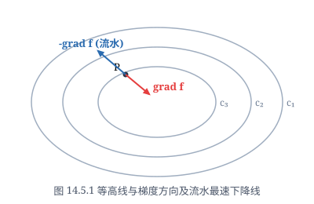
再看一个实际例子．经测量某积雪山顶的高度可用函数 $z = f(x, y)$ 来表示，图 14.5.1 是等高线图，即 $f(x, y) = c$ 的图形．当雪融化时，由于重力的作用，雪水会沿高度下降最快的方向，即 $-\operatorname{grad} f$ 方向流动，溪流就是这样形成的．
通量与散度
设 $\Omega$ 上稳定流动的不可压缩流体（假定其密度为 $1$）的速度场为
$$v(x, y, z) = v_x(x, y, z)i + v_y(x, y, z)j + v_z(x, y, z)k,$$其中 $v_x, v_y, v_z$ 具有连续偏导数．设 $\Sigma$ 是 $\Omega$ 中的一片定向曲面，则单位时间内通过 $\Sigma$ 流向指定侧的流量为
$$\Phi = \iint_\Sigma v \cdot n\,\mathrm{d}S = \iint_\Sigma v_x\,\mathrm{d}y\mathrm{d}z + v_y\,\mathrm{d}z\mathrm{d}x + v_z\,\mathrm{d}x\mathrm{d}y,$$这里 $n = \cos\alpha i + \cos\beta j + \cos\gamma k$ 为 $\Sigma$ 在 $(x, y, z)$ 处的、在指定侧的单位法向量．
显然，$\Phi > 0$ 说明了向指定侧穿过曲面 $\Sigma$ 的流量多于向相反方向穿过曲面 $\Sigma$ 的流量；$\Phi < 0$ 或 $\Phi = 0$ 分别说明了向指定侧穿过曲面 $\Sigma$ 的流量少于或等于向相反方向穿过曲面 $\Sigma$ 的流量．如果 $\Sigma$ 为一张封闭曲面，定向为外侧．那么当 $\Phi > 0$ 时，就说明了从曲面内的流出量大于流入量，此时在 $\Sigma$ 内必有产生流体的源头（源）；当 $\Phi < 0$ 时，就说明了从曲面内的流出量小于流入量，此时在 $\Sigma$ 内必有排泄流体的漏洞（汇）．
要判断场中一点 $M(x, y, z)$ 是否为源或汇，以及源的"强弱"或汇的"大小"，可以作一张包含 $M$ 的封闭曲面 $\Sigma$（定向为外侧），考察 $\Sigma$ 所围区域 $V$ 收缩到 $M$ 点时（记为
$V \to M$），$\Phi = \iint_\Sigma v \cdot \mathrm{d}S$ 的值，但因为 $V \to M$ 时有 $\Phi \to 0$，所以实际上我们考虑的是
$$\lim_{V \to M} \frac{\Phi}{m(V)} = \lim_{V \to M} \frac{\iint_\Sigma v \cdot \mathrm{d}S}{m(V)} \quad (m(V) \text{ 为 } V \text{ 的体积})．$$显然，这不改变其物理意义．由 Gauss 公式，并利用积分中值定理得
$$\Phi = \iint_\Sigma v \cdot \mathrm{d}S = \iiint_V \left(\frac{\partial v_x}{\partial x} + \frac{\partial v_y}{\partial y} + \frac{\partial v_z}{\partial z}\right)\mathrm{d}V = \left.\left(\frac{\partial v_x}{\partial x} + \frac{\partial v_y}{\partial y} + \frac{\partial v_z}{\partial z}\right)\right|_{M^*} m(V),$$其中 $M^*$ 为 $V$ 上某一点．因此当 $V \to M$ 时有
$$\lim_{V \to M} \frac{\Phi}{m(V)} = \frac{\partial v_x}{\partial x}(M) + \frac{\partial v_y}{\partial y}(M) + \frac{\partial v_z}{\partial z}(M).$$因此，可以用
$$\frac{\partial v_x}{\partial x}(x, y, z) + \frac{\partial v_y}{\partial y}(x, y, z) + \frac{\partial v_z}{\partial z}(x, y, z)$$来判别场中的点是源还是汇，以及源的"强弱"或汇的"大小"．
我们以此为背景引入一般性的概念．
设
$$a(x, y, z) = P(x, y, z)i + Q(x, y, z)j + R(x, y, z)k$$是一个向量场，$P(x, y, z), Q(x, y, z), R(x, y, z)$ 在 $\Omega$ 上具有连续偏导数．$\Sigma$ 为场中的定向曲面，称曲面积分
$$\Phi = \iint_\Sigma a \cdot \mathrm{d}S = \iint_\Sigma P\,\mathrm{d}y\mathrm{d}z + Q\,\mathrm{d}z\mathrm{d}x + R\,\mathrm{d}x\mathrm{d}y$$为向量场 $a$ 沿指定侧通过曲面 $\Sigma$ 的通量．
设 $M$ 为这个场中任一点．称
$$\operatorname{div} a(M) = \frac{\partial P}{\partial x}(M) + \frac{\partial Q}{\partial y}(M) + \frac{\partial R}{\partial z}(M)$$为向量场 $a$ 在 $M$ 点的散度，记为 $\operatorname{div} a(M)$．
想一想刚才举的流体的例子就可理解，如果 $\operatorname{div} a(M) > 0$，则称在 $M$ 点处有正源（源）；如果 $\operatorname{div} a(M) < 0$，则称在 $M$ 点处有负源（汇）；如果 $\operatorname{div} a(M) = 0$，则称在 $M$ 点处无源．如果在场中每一点都成立 $\operatorname{div} a = 0$，则称 $a$ 为无源场．
利用散度的记号，Gauss 公式就可写成如下形式：
$$\iiint_\Omega \operatorname{div} a\,\mathrm{d}V = \iint_{\partial\Omega} a \cdot \mathrm{d}S.$$设 $M$ 为这个场中任一点．作包含 $M$ 的一张封闭曲面 $\Sigma$，记 $\Sigma$ 所围区域为 $V$，$V$ 的体积记为 $m(V)$．如果 $\Sigma$ 定向为外侧，那么 $\Phi = \iint_\Sigma a \cdot \mathrm{d}S$ 就是从 $V$ 穿出的通量．用刚才处理流体速度场的方法就可得出：
$a$ 的散度是通量关于体积的变化率，即
$$\operatorname{div} a(M) = \lim_{V \to M} \frac{\iint_{\partial V} a \cdot \mathrm{d}S}{m(V)}.$$换句话说，散度就是穿出单位体积边界的通量．
从这个定理可以看出，散度的定义本质上是与坐标系的选取无关的．我们称由向量场 $a$ 产生的数量场 $\operatorname{div} a$ 为散度场．
向量线
我们知道，在稳定流动的流体中，质点的瞬时运动方向是该点的速度方向，这就是说，流体中质点的运动轨迹的切线方向，就是速度方向，这条轨迹称为流线．这就是一般向量场中的向量线概念．
设 $a(x, y, z) = P(x, y, z)i + Q(x, y, z)j + R(x, y, z)k$ 为向量场，$\Gamma$ 为 $\Omega$ 中的一条曲线．若 $\Gamma$ 上的每一点处的切线方向都与场向量在该点的方向一致，则称 $\Gamma$ 为向量场 $a$ 的向量线．静电场中的电力线、磁场中的磁力线等都是向量线的实际例子．
再看向量线需要满足什么条件．设 $M(x, y, z)$ 为向量线上任一点，则其矢量方程为 $r = xi + yj + zk$，那么
$$\mathrm{d}r = \mathrm{d}x i + \mathrm{d}y j + \mathrm{d}z k$$就是向量线在 $M$ 点处的切向量．由定义，它与在 $M$ 点处的场向量共线，因此
$$\frac{\mathrm{d}x}{P(x, y, z)} = \frac{\mathrm{d}y}{Q(x, y, z)} = \frac{\mathrm{d}z}{R(x, y, z)}.$$这就是向量线所满足的方程，如果解出它的话，一般就得到向量线族．如果再利用过 $M$ 点这个条件，就得到过 $M$ 点的向量线．一般来说，向量场中每一点有一条且仅有一条向量线通过它，向量线族充满了向量场所在的空间．
由电磁学中的 Coulomb 定律，在位于原点的点电荷 $q$（这里 $q$ 表示电荷大小）所产生的静电场中，任何一点 $M(x, y, z)$ 处的电场强度为
$$E = \frac{q}{4\pi\varepsilon_0 r^3}r \quad (r = \sqrt{x^2 + y^2 + z^2}).$$将 $E$ 具体写出来就是
$$E = \frac{qx}{4\pi\varepsilon_0 r^3}i + \frac{qy}{4\pi\varepsilon_0 r^3}j + \frac{qz}{4\pi\varepsilon_0 r^3}k.$$由于
$$\frac{\partial}{\partial x}\left(\frac{qx}{4\pi\varepsilon_0 r^3}\right) = \frac{q}{4\pi\varepsilon_0}\frac{r^3 - 3x^2 r}{r^6} = \frac{q}{4\pi\varepsilon_0}\frac{r^2 - 3x^2}{r^5},$$ $$\frac{\partial}{\partial y}\left(\frac{qy}{4\pi\varepsilon_0 r^3}\right) = \frac{q}{4\pi\varepsilon_0}\frac{r^2 - 3y^2}{r^5}, \quad \frac{\partial}{\partial z}\left(\frac{qz}{4\pi\varepsilon_0 r^3}\right) = \frac{q}{4\pi\varepsilon_0}\frac{r^2 - 3z^2}{r^5},$$所以
$$\operatorname{div} E = \frac{q}{4\pi\varepsilon_0}\frac{3r^2 - 3(x^2 + y^2 + z^2)}{r^5} = 0 \quad (x^2 + y^2 + z^2 \ne 0).$$1. 设 $S$ 是以原点为心，$R$ 为半径的球面，定向取外侧．注意到在球面 $S$ 上恒有 $r = R$，且 $E$ 的方向与球面 $S$ 的外法向量的方向相同，因此从内部穿出球面 $S$ 的通量（称为电通量）为
$$\Phi = \iint_S E \cdot \mathrm{d}S = \iint_S \frac{q}{4\pi\varepsilon_0 R^2}\,\mathrm{d}S = \frac{q}{4\pi\varepsilon_0 R^2} \cdot 4\pi R^2 = \frac{q}{\varepsilon_0}.$$2. 设 $\Sigma$ 为任意一张光滑或分片光滑的封闭曲面．
（i）如果 $\Sigma$ 内不含原点．记 $\Sigma$ 所包围的区域为 $\Omega$，则由 Gauss 公式得
$$\Phi = \iint_\Sigma E \cdot \mathrm{d}S = \iiint_\Omega \operatorname{div} E\,\mathrm{d}V = 0.$$（ii）如果 $\Sigma$ 内含有原点，那么不能直接用 Gauss 公式．在曲面 $\Sigma$ 所包围的区域内取一个以原点为心的小球面 $\sigma$，定向取内侧．记 $\Omega_1$ 为介于 $\sigma$ 与 $\Sigma$ 之间的区域．由 Gauss 公式得
$$\iint_\Sigma E \cdot \mathrm{d}S + \iint_\sigma E \cdot \mathrm{d}S = \iiint_{\Omega_1} \operatorname{div} E\,\mathrm{d}V = 0,$$因此从内部穿出曲面 $\Sigma$ 的电通量
$$\Phi = \iint_\Sigma E \cdot \mathrm{d}S = -\iint_\sigma E \cdot \mathrm{d}S = \frac{q}{\varepsilon_0}.$$因此，电场强度穿出任一封闭曲面的电通量等于其内部的电荷量除以 $\varepsilon_0$，这正是电磁学中的 Gauss 定律．
此外，利用前面的讨论，电场强度的向量线（即电力线）应满足关系式
$$\frac{\mathrm{d}x}{x} = \frac{\mathrm{d}y}{y} = \frac{\mathrm{d}z}{z},$$由此解得电力线的方程为
$$\begin{cases} y = c_1 x, \\ z = c_2 x. \end{cases}$$这是一族从坐标原点出发的半射线（见图 14.5.2）．
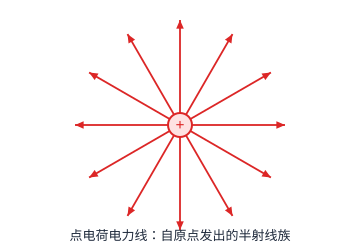
环量与旋度
设稳定不可压缩流体的速度场为
$$v(x, y, z) = v_x(x, y, z)i + v_y(x, y, z)j + v_z(x, y, z)k,$$其中 $v_x, v_y, v_z$ 具有连续偏导数．设 $M_0(x_0, y_0, z_0)$ 是场中一点．如果
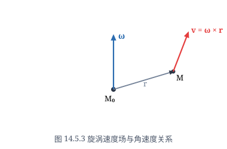
在 $M_0$ 点有流涡，流体以角速度 $\omega$ 旋转（这里 $\omega$ 在流涡的轴线上，且方向与涡的旋转方向成右手螺旋定则）．那么流体在 $M_0$ 附近的任一点 $M(x, y, z)$ 的速度 $v$ 可以表为
$$v = v_0 + \omega \times r,$$其中 $v_0$ 表示在点 $M_0$ 的速度，$r$ 表示向量 $\vec{M_0M}$（见图 14.5.3）．这就
是说，流体在 $M$ 点的速度是平移速度 $v_0$ 与旋转产生的线速度 $\omega \times r$ 的叠加．由于
$$\omega \times r = \begin{vmatrix} i & j & k \\ \omega_x & \omega_y & \omega_z \\ x - x_0 & y - y_0 & z - z_0 \end{vmatrix} = [\omega_y(z - z_0) - \omega_z(y - y_0)]i + [\omega_z(x - x_0) - \omega_x(z - z_0)]j + [\omega_x(y - y_0) - \omega_y(x - x_0)]k,$$于是在 $M$ 点成立
$$\frac{\partial v_z}{\partial y} - \frac{\partial v_y}{\partial z} = 2\omega_x, \quad \frac{\partial v_x}{\partial z} - \frac{\partial v_z}{\partial x} = 2\omega_y, \quad \frac{\partial v_y}{\partial x} - \frac{\partial v_x}{\partial y} = 2\omega_z.$$因此向量
$$B = \left(\frac{\partial v_z}{\partial y} - \frac{\partial v_y}{\partial z}\right)i + \left(\frac{\partial v_x}{\partial z} - \frac{\partial v_z}{\partial x}\right)j + \left(\frac{\partial v_y}{\partial x} - \frac{\partial v_x}{\partial y}\right)k = 2\omega$$同样可以描述流涡的强度和方向，然而 $B$ 是由速度场本身决定的，不用真正测量出角速度 $\omega$．
设 $\Gamma$ 为场中的定向闭曲线，由 Stokes 公式，
$$\oint_\Gamma v \cdot \mathrm{d}s = \iint_\Sigma B \cdot \mathrm{d}S,$$这里 $\Sigma$ 是任意以 $\Gamma$ 为边界的曲面，定向与 $\Gamma$ 符合右手定则．由此可见，曲线积分 $\oint_\Gamma v \cdot \mathrm{d}s$ 也与流体的旋转状态有密切关系．
我们以此为背景引入一般性的概念．
设 $a(x, y, z) = P(x, y, z)i + Q(x, y, z)j + R(x, y, z)k$ 是一个向量场，$P(x, y, z), Q(x, y, z), R(x, y, z)$ 在 $\Omega$ 上具有连续偏导数．设 $\Gamma$ 为场中的定向曲线，称曲线积分
$$\oint_\Gamma a \cdot \mathrm{d}s = \oint_\Gamma P\,\mathrm{d}x + Q\,\mathrm{d}y + R\,\mathrm{d}z$$为向量场 $a$ 沿定向曲线 $\Gamma$ 的环量．
设 $M$ 为这个场中任一点．称向量
$$\operatorname{rot} a(M) = \begin{vmatrix} i & j & k \\ \dfrac{\partial}{\partial x} & \dfrac{\partial}{\partial y} & \dfrac{\partial}{\partial z} \\ P & Q & R \end{vmatrix} = \left(\frac{\partial R}{\partial y} - \frac{\partial Q}{\partial z}\right)i + \left(\frac{\partial P}{\partial z} - \frac{\partial R}{\partial x}\right)j + \left(\frac{\partial Q}{\partial x} - \frac{\partial P}{\partial y}\right)k$$为向量场 $a$ 在 $M$ 点的旋度，记为 $\operatorname{rot} a(M)$ 或 $\operatorname{curl} a(M)$．
由向量场 $a$ 产生的向量场 $\operatorname{rot} a$ 称为旋度场．如果在场中每一点都成立 $\operatorname{rot} a = 0$，则称 $a$ 为无旋场．
于是，Stokes 公式可以写成
$$\iint_\Sigma \operatorname{rot} a \cdot \mathrm{d}S = \oint_{\partial\Sigma} a \cdot \mathrm{d}s.$$对旋度可以作类似于散度的解释．在场中一点 $M$ 处任取一个向量 $n$，作小平面片 $\Sigma$
过 $M$ 点且以 $n$ 为法向量，并按右手定则取定 $\partial\Sigma$ 的方向．记 $\Sigma$ 的面积为 $m(\Sigma)$．如果当 $\Sigma$ 收缩到点 $M$ 时（记为 $\Sigma \to M$），
$$\frac{\oint_{\partial\Sigma} a \cdot \mathrm{d}s}{m(\Sigma)}$$的极限存在，则称此极限值为向量场 $a$ 在 $M$ 点沿方向 $n$ 的环量面密度，它是环量关于面积的变化率，即沿平面上单位面积边缘的环量．
向量场 $a$ 在 $M$ 点处的旋度就是这样一个向量：$a$ 在 $M$ 点处沿旋度方向的环量面密度最大，而且最大值就是 $\|\operatorname{rot} a(M)\|$．
对于包含 $M(x, y, z)$ 的小平面片 $\Sigma$，及它的法向量 $n$，按右手定则取定 $\partial\Sigma$ 的方向．记单位法向量 $n = (\cos\alpha, \cos\beta, \cos\gamma)$．由 Stokes 公式，并利用积分中值定理得
$$\oint_{\partial\Sigma} a \cdot \mathrm{d}s = \iint_\Sigma \operatorname{rot} a \cdot n\,\mathrm{d}S = \left.\left[\left(\frac{\partial R}{\partial y} - \frac{\partial Q}{\partial z}\right)\cos\alpha + \left(\frac{\partial P}{\partial z} - \frac{\partial R}{\partial x}\right)\cos\beta + \left(\frac{\partial Q}{\partial x} - \frac{\partial P}{\partial y}\right)\cos\gamma\right]\right|_{M^*} m(\Sigma),$$其中 $M^*$ 为 $\Sigma$ 上某一点．因此当 $\Sigma \to M$ 时，$a$ 在 $M$ 点沿方向 $n$ 的环量面密度为
$$\lim_{\Sigma \to M} \frac{\oint_{\partial\Sigma} a \cdot \mathrm{d}s}{m(\Sigma)} = \operatorname{rot} a(M) \cdot n = \|\operatorname{rot} a(M)\| \cos(\operatorname{rot} a(M), n) \le \|\operatorname{rot} a(M)\|,$$因此 $a$ 在 $M$ 点处沿旋度方向的环量面密度最大，且最大值为 $\|\operatorname{rot} a(M)\|$．
以前面提到的流体速度场为例，它在与 $\operatorname{rot} a$ 垂直的平面上，沿单位面积边缘的环量最大（这显然符合实际），达到角速度的模的两倍．由定理易知旋度本质上是与坐标系的选取无关的．
设一根无限长直线导线载有电流 $I$（见图 14.5.4）．由电磁学知，这电流产生的磁感应强度 $B$ 的大小为
$$B = \frac{\mu_0 I}{2\pi r},$$这里 $r$ 为观察点到导线的距离，$\mu_0$ 为真空磁导率．而磁力线是围绕该导线的圆周，电流方向、半径方向和磁感应强度的方向成右手定则．
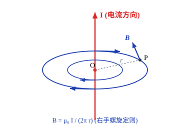
取导线为 $z$ 轴，电流方向为 $z$ 轴的正向．任取一张垂直于导线的平面为 $xy$ 平面．那么在点 $M(x, y, z)$ ($x^2 + y^2 \ne 0$) 处的磁感应强度
$$B = \frac{\mu_0 I}{2\pi r^2}(-yi + xj),$$其中 $r = \sqrt{x^2 + y^2}$．于是
$$\operatorname{rot} B = \frac{\mu_0 I}{2\pi}\begin{vmatrix} i & j & k \\ \dfrac{\partial}{\partial x} & \dfrac{\partial}{\partial y} & \dfrac{\partial}{\partial z} \\ -\dfrac{y}{r^2} & \dfrac{x}{r^2} & 0 \end{vmatrix} = 0 \quad (x^2 + y^2 \ne 0).$$1. 对位于垂直于导线的平面上的、围绕导线的任意简单闭曲线 $\Gamma$，如果我们取它的定向为从上往下看是逆时针方向，从例 14.3.5 知，$B$ 沿 $\Gamma$ 的环量为
$$\oint_\Gamma B \cdot \mathrm{d}s = \frac{\mu_0 I}{2\pi}\oint_\Gamma \frac{x\,\mathrm{d}y - y\,\mathrm{d}x}{x^2 + y^2} = \mu_0 I.$$2. 对于空间中任意一条简单闭曲线 $\Gamma$，取它的定向为从上往下看是逆时针方向．对于任意一张以 $\Gamma$ 为边界的曲面 $\Sigma$，取 $\Sigma$ 的定向与 $\Gamma$ 的定向符合右手定则．
（1）如果导线不穿过曲面 $\Sigma$，那么
$$\oint_\Gamma B \cdot \mathrm{d}s = \iint_\Sigma \operatorname{rot} B \cdot \mathrm{d}S = 0.$$（2）如果导线穿过曲面 $\Sigma$ 一次，这时不能直接用 Stokes 定理．适当取一张垂直于导线的平面，使得它与 $\Sigma$ 的交线 $C$ 为围绕导线的简单闭曲线（见图 14.5.5，我们只考虑这种情形，其他类似）．记曲面 $\Sigma$ 在 $\Gamma$ 和 $C$ 之间的部分为 $\Sigma_1$．那么由 Stokes 定理得
$$\oint_\Gamma B \cdot \mathrm{d}s + \oint_C B \cdot \mathrm{d}s = \iint_{\Sigma_1} \operatorname{rot} B \cdot \mathrm{d}S = 0.$$注意 $C$ 的定向取：从上往下看是顺时针方向．因此利用（1）的结果可知
$$\oint_\Gamma B \cdot \mathrm{d}s = -\oint_C B \cdot \mathrm{d}s = \mu_0 I.$$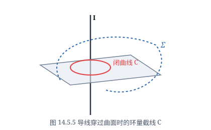
综合上述，磁感应强度沿封闭曲线 $\Gamma$ 的环量与通过该曲线所围曲面的电流 $I$ 成正比，即
$$\oint_\Gamma B \cdot \mathrm{d}s = \mu_0 I,$$这就是 Ampère 环路定律．
Hamilton 算子
为了方便，我们介绍 Hamilton 引进的微分算子
$$\nabla = i\frac{\partial}{\partial x} + j\frac{\partial}{\partial y} + k\frac{\partial}{\partial z},$$记号 $\nabla$ 读做"Nabla"．
对满足下面的运算所需的可偏导条件，则定义
$$\nabla f = \left(i\frac{\partial}{\partial x} + j\frac{\partial}{\partial y} + k\frac{\partial}{\partial z}\right)f = \frac{\partial f}{\partial x}i + \frac{\partial f}{\partial y}j + \frac{\partial f}{\partial z}k = \operatorname{grad} f;$$ $$\nabla \cdot a = \left(i\frac{\partial}{\partial x} + j\frac{\partial}{\partial y} + k\frac{\partial}{\partial z}\right) \cdot (Pi + Qj + Rk) = \frac{\partial P}{\partial x} + \frac{\partial Q}{\partial y} + \frac{\partial R}{\partial z} = \operatorname{div} a;$$ $$\nabla \times a = \left(i\frac{\partial}{\partial x} + j\frac{\partial}{\partial y} + k\frac{\partial}{\partial z}\right) \times (Pi + Qj + Rk) = \begin{vmatrix} i & j & k \\ \dfrac{\partial}{\partial x} & \dfrac{\partial}{\partial y} & \dfrac{\partial}{\partial z} \\ P & Q & R \end{vmatrix} = \operatorname{rot} a.$$显然，
$$\nabla \cdot (\nabla f) = \frac{\partial^2 f}{\partial x^2} + \frac{\partial^2 f}{\partial y^2} + \frac{\partial^2 f}{\partial z^2} = \Delta f,$$这里记号 $\Delta = \nabla \cdot \nabla = \nabla^2 = \dfrac{\partial^2}{\partial x^2} + \dfrac{\partial^2}{\partial y^2} + \dfrac{\partial^2}{\partial z^2}$ 称为 Laplace 算子，满足 Laplace 方程
$$\Delta u = \frac{\partial^2 u}{\partial x^2} + \frac{\partial^2 u}{\partial y^2} + \frac{\partial^2 u}{\partial z^2} = 0$$的函数叫做调和函数．
这样，Gauss 公式就可表示为
$$\iint_{\partial\Omega} a \cdot \mathrm{d}S = \iiint_\Omega \nabla \cdot a\,\mathrm{d}V;$$Stokes 公式就可表示为
$$\oint_{\partial\Sigma} a \cdot \mathrm{d}s = \iint_\Sigma (\nabla \times a) \cdot \mathrm{d}S.$$设函数 $f, g$ 具有二阶连续偏导数，容易验证等式
$$\nabla \cdot (g\nabla f) = \nabla g \cdot \nabla f + g\Delta f$$成立．如果置 $a = g\nabla f$，从 Gauss 公式就得到
$$\iiint_\Omega (\nabla g \cdot \nabla f + g\Delta f)\,\mathrm{d}V = \iiint_\Omega \nabla \cdot (g\nabla f)\,\mathrm{d}V = \iint_{\partial\Omega} g\nabla f \cdot n\,\mathrm{d}S = \iint_{\partial\Omega} g(\operatorname{grad} f \cdot n)\,\mathrm{d}S = \iint_{\partial\Omega} g\frac{\partial f}{\partial n}\,\mathrm{d}S.$$同样置 $a = f\nabla g$，就得到
$$\iiint_\Omega (\nabla f \cdot \nabla g + f\Delta g)\,\mathrm{d}V = \iint_{\partial\Omega} f\frac{\partial g}{\partial n}\,\mathrm{d}S.$$这两式相减就得到
$$\iiint_\Omega (g\Delta f - f\Delta g)\,\mathrm{d}V = \iint_{\partial\Omega} \left(g\frac{\partial f}{\partial n} - f\frac{\partial g}{\partial n}\right)\mathrm{d}S.$$最后两个公式分别称为 Green 第一公式和 Green 第二公式，在数学物理中有着很多应用．
下面不加证明地列出场论中的一些基本关系式（第二式是将第一式的结果用 Hamilton 算子表示，读者可结合乘积的求导公式和向量的点积与叉积公式来帮助记忆）：
设 $a, b$ 和 $f$ 均具有所需阶的连续偏导数，$\lambda, \mu$ 为常数．
（1） $\operatorname{div}(\lambda a + \mu b) = \lambda\operatorname{div} a + \mu\operatorname{div} b$；
$$\nabla \cdot (\lambda a + \mu b) = \lambda(\nabla \cdot a) + \mu(\nabla \cdot b);$$（2） $\operatorname{rot}(\lambda a + \mu b) = \lambda\operatorname{rot} a + \mu\operatorname{rot} b$；
$$\nabla \times (\lambda a + \mu b) = \lambda(\nabla \times a) + \mu(\nabla \times b);$$（3） $\operatorname{div}(fa) = f\operatorname{div} a + \operatorname{grad} f \cdot a$；
$$\nabla \cdot (fa) = f(\nabla \cdot a) + (\nabla f) \cdot a;$$（4） $\operatorname{rot}(fa) = f\operatorname{rot} a + \operatorname{grad} f \times a$；
$$\nabla \times (fa) = f(\nabla \times a) + (\nabla f) \times a;$$（5） $\operatorname{div}(a \times b) = b \cdot \operatorname{rot} a - a \cdot \operatorname{rot} b$；
$$\nabla \cdot (a \times b) = b \cdot (\nabla \times a) - a \cdot (\nabla \times b);$$（6） $\operatorname{rot}(\operatorname{grad} f) = 0$；
$$\nabla \times (\nabla f) = 0;$$（7） $\operatorname{div}(\operatorname{rot} a) = 0$；
$$\nabla \cdot (\nabla \times a) = 0.$$最后我们谈一下公式（3）的应用．从公式（3）得
$$f\operatorname{div} a = \operatorname{div}(fa) - \operatorname{grad} f \cdot a,$$两边积分便得"分部"积分公式
$$\iiint_\Omega f\operatorname{div} a\,\mathrm{d}V = \iiint_\Omega \operatorname{div}(fa)\,\mathrm{d}V - \iiint_\Omega \operatorname{grad} f \cdot a\,\mathrm{d}V = \iint_{\partial\Omega} fa \cdot \mathrm{d}S - \iiint_\Omega \operatorname{grad} f \cdot a\,\mathrm{d}V.$$这说明了对 $a$ 的"导数" $\operatorname{div} a$，利用 Gauss 公式可以转移到可能具有较好性质的函数 $f$ 的"导数" $\operatorname{grad} f$ 上．读者在后续的课程中会看到，这是偏微分方程中"广义解（弱解）"的基础，也是广义导数的引入思想．
保守场与势函数
设 $a(x, y, z) = P(x, y, z)i + Q(x, y, z)j + R(x, y, z)k$ 为向量场，其中 $P(x, y, z), Q(x, y, z), R(x, y, z)$ 在区域 $\Omega$ 上连续．若存在函数 $U(x, y, z)$ 满足 $a = \operatorname{grad} U$，则称向量场 $a$ 为有势场，并称函数 $V = -U$ 为势函数．
从定义看出，有势场是梯度场．一个场的势函数有无穷多个，但它们之间只相差一个常数．
如果对于 $\Omega$ 内任意两点 $A, B$，积分值
$$\int_L P\,\mathrm{d}x + Q\,\mathrm{d}y + R\,\mathrm{d}z$$只与 $A, B$ 两点有关，而与从 $A$ 到 $B$ 的路径（这里只考虑光滑或分段光滑曲线）$L$ 无关，就称曲线积分 $\int_L P\,\mathrm{d}x + Q\,\mathrm{d}y + R\,\mathrm{d}z$ 与路径无关．
如果在向量场 $a$ 中曲线积分与路径无关，则称 $a$ 为保守场．显然，这等价于沿 $\Omega$ 内任意闭曲线的积分值为零．
同平面情形类似，我们引入空间单连通区域的概念．如果区域 $\Omega$ 内的任意一条封闭曲线都可以不经过 $\Omega$ 外的点而连续地收缩成 $\Omega$ 中一点，那么 $\Omega$ 称为单连通区域．注意，单连通区域与前面介绍的二维单连通区域是不同的．例如空心球壳（见图 14.5.6）是单连通的，但不是二维单连通的；而环面的内部（见图 14.5.7）是二维单连通的，但不是单连通的．
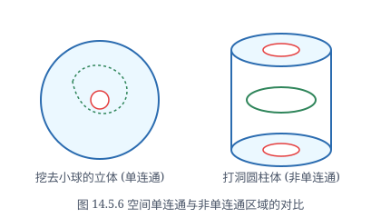
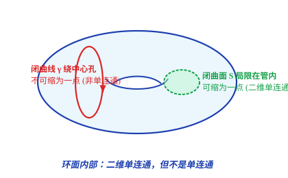
关于保守场与有势场的关系有如下定理：
设 $\Omega \subset \mathbb{R}^3$ 为单连通区域，在 $\Omega$ 上定义了向量场 $a(x, y, z) = P(x, y, z)i + Q(x, y, z)j + R(x, y, z)k$，$P(x, y, z), Q(x, y, z), R(x, y, z)$ 在 $\Omega$ 上具有连续偏导数．则以下三个命题等价：
（1） $a$ 是保守场；
（2） $a$ 是有势场；
（3） $a$ 是无旋场．
事实上，这三个命题再加上"沿 $\Omega$ 内任意闭曲线的积分值为零"，就是定理 14.3.2 关于平面上曲线积分与路径无关的四个等价条件的三维形式．请读者仿照其证明方法，并应用场论的有关定义，从（1）$\implies$（2）$\implies$（3）$\implies$（1）的思路证明以上定理．注意（3）$\implies$（1）需要利用 Stokes 公式，至于如何利用，就不在此详述了．
设函数 $P(x, y, z), Q(x, y, z)$ 和 $R(x, y, z)$ 在单连通区域 $\Omega$ 上连续，若 $U(x, y, z)$ 是 1-形式 $P\,\mathrm{d}x + Q\,\mathrm{d}y + R\,\mathrm{d}z$ 的一个原函数（即在 $\Omega$ 上恒有 $\mathrm{d}U = P\,\mathrm{d}x + Q\,\mathrm{d}y + R\,\mathrm{d}z$），则
$$\int_{\widehat{AB}} P\,\mathrm{d}x + Q\,\mathrm{d}y + R\,\mathrm{d}z = U(x_B, y_B, z_B) - U(x_A, y_A, z_A),$$其中 $\widehat{AB}$ 为从 $A$ 到 $B$ 的任意路径．
这个定理的证明也从略．
设在坐标原点处有一质量为 $m$ 的质点．根据万有引力定律，它在 $r = xi + yj + zk$ 点产生的引力场，其方向指向原点，大小与它们的距离的平方成反比．因此质点的引力场可表为
$$F = -\frac{Gmx}{r^3}i - \frac{Gmy}{r^3}j - \frac{Gmz}{r^3}k.$$容易验证 $U(x, y, z) = \dfrac{Gm}{r}$ 满足 $\operatorname{grad} U = F$，因此 $F$ 为有势场，它的一个势函数为
$$V(x, y, z) = -\frac{Gm}{r}.$$将单位质量的物体从 $A(x_A, y_A, z_A)$ 处沿路径 $L$ 移动到 $B(x_B, y_B, z_B)$ 处，引力所做的功为
$$W = \int_L F \cdot \mathrm{d}r = -Gm\int_L \frac{x}{r^3}\,\mathrm{d}x + \frac{y}{r^3}\,\mathrm{d}y + \frac{z}{r^3}\,\mathrm{d}z,$$这里 $\mathrm{d}r = \mathrm{d}x i + \mathrm{d}y j + \mathrm{d}z k$．由于 $F$ 为有势场，即保守场，因此 $W$ 与路径 $L$ 无关．显然，$-\dfrac{1}{r}$（它与 $V(x, y, z)$ 只相差一个常数因子）是 $\dfrac{x}{r^3}\,\mathrm{d}x + \dfrac{y}{r^3}\,\mathrm{d}y + \dfrac{z}{r^3}\,\mathrm{d}z$ 的一个原函数，于是
$$-Gm\int_L \frac{x\,\mathrm{d}x + y\,\mathrm{d}y + z\,\mathrm{d}z}{r^3} = -Gm\left(-\frac{1}{r_B} + \frac{1}{r_A}\right) = Gm\left(\frac{1}{\sqrt{x_B^2 + y_B^2 + z_B^2}} - \frac{1}{\sqrt{x_A^2 + y_A^2 + z_A^2}}\right).$$最后说一下势函数 $V(x, y, z)$ 的物理意义．在这个力场中，设质点在无穷远点的势能为 $0$，那么一个单位质量的质点在点 $M(x, y, z)$ 的势能，就是将它从无穷远点 $\infty$ 移到点 $M$ 时，克服引力所做的功，即
$$-\int_\infty^M F \cdot \mathrm{d}r = Gm\int_\infty^M \frac{x\,\mathrm{d}x + y\,\mathrm{d}y + z\,\mathrm{d}z}{r^3} = -Gm\left.\frac{1}{r}\right|_\infty^M = -\frac{Gm}{r},$$这正是势函数 $V(x, y, z)$．
我们已经知道，位于原点的点电荷 $q$（这里 $q$ 表示电荷的大小）产生的静电场的电场强度为
$$E = \frac{qx}{4\pi\varepsilon_0 r^3}i + \frac{qy}{4\pi\varepsilon_0 r^3}j + \frac{qz}{4\pi\varepsilon_0 r^3}k.$$容易验证，
$$E = -\operatorname{grad}\left(\frac{q}{4\pi\varepsilon_0 r}\right),$$因此它是有势场，即保守场．
均匀带电直线的电场模型
设 $L$ 是一条无限长的均匀带电的直线，电荷分布的线密度为 $q$．现在考察它所产生的电场中任意一点的电场强度 $E$．
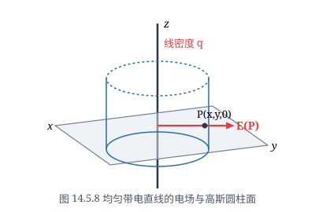
取这条直线为 $z$ 轴，直线上任取一点 $O$ 为坐标原点，过 $O$ 点与 $z$ 轴垂直的平面为 $xy$ 平面（见图 14.5.8）．设 $P(x, y, z)$ 为空间上的一个点．由于是无限长的，因此由对称性，在 $P$ 点的电场强度的垂直方向分量 $E_z = 0$．
记 $E$ 在 $x$ 方向与 $y$ 方向的分量 $E_x, E_y$ 的大小分别为 $E_x, E_y$．任取带电直线上的线微元 $\mathrm{d}l$，那么它所带的电荷为 $q\,\mathrm{d}l$．若设 $\mathrm{d}l$ 的坐标为 $(0, 0, z')$，则由 Coulomb 定律，它在 $P$ 点产生的电场强度为
$$\mathrm{d}E = \frac{1}{4\pi\varepsilon_0}\frac{q\,\mathrm{d}l}{r^3}r = \frac{1}{4\pi\varepsilon_0}\frac{q\,\mathrm{d}l}{r^3}[xi + yj + (z - z')k],$$其中 $r$ 为点 $P$ 与 $\mathrm{d}l$ 的距离，$r$ 为从 $\mathrm{d}l$ 到 $P$ 的向量．因此 $\mathrm{d}E$ 在 $x$ 轴与 $y$ 轴方向的分量的大小分别为
$$\mathrm{d}E_x = \frac{1}{4\pi\varepsilon_0}\frac{q\,\mathrm{d}l}{r^2}\cos\theta\frac{x}{R}, \quad \mathrm{d}E_y = \frac{1}{4\pi\varepsilon_0}\frac{q\,\mathrm{d}l}{r^2}\cos\theta\frac{y}{R},$$其中 $R = \sqrt{x^2 + y^2}$，$\theta$ 为过 $\mathrm{d}l$ 和 $P$ 两点的直线与过 $P$ 点且平行于 $xy$ 平面的平面之间的夹角．如果记 $\mathrm{d}l$ 与点 $(0, 0, z)$ 的距离（即 $|z - z'|$）为 $l$，那么 $l = R\tan\theta$，于是 $\mathrm{d}l = \dfrac{R\,\mathrm{d}\theta}{\cos^2\theta}$，所以
$$\mathrm{d}E_x = \frac{qx}{4\pi\varepsilon_0 R^2}\cos\theta\,\mathrm{d}\theta, \quad \mathrm{d}E_y = \frac{qy}{4\pi\varepsilon_0 R^2}\cos\theta\,\mathrm{d}\theta.$$由于带电直线 $L$ 无限长，因此对应的 $\theta$ 的取值范围是 $(-\pi/2, \pi/2)$，所以
$$E_x = \frac{qx}{4\pi\varepsilon_0 R^2}\int_{-\pi/2}^{\pi/2}\cos\theta\,\mathrm{d}\theta = \frac{qx}{2\pi\varepsilon_0 R^2}, \quad E_y = \frac{qy}{4\pi\varepsilon_0 R^2}\int_{-\pi/2}^{\pi/2}\cos\theta\,\mathrm{d}\theta = \frac{qy}{2\pi\varepsilon_0 R^2}.$$于是，
$$E = \frac{qx}{2\pi\varepsilon_0 R^2}i + \frac{qy}{2\pi\varepsilon_0 R^2}j + 0\cdot k = \frac{q}{2\pi\varepsilon_0(x^2 + y^2)}(xi + yj).$$这说明一点的电场强度的大小与电荷分布的线密度成正比，与该点到带电直线的距离成反比，场强的方向与带电直线垂直．
由于
$$\operatorname{rot} E = \frac{q}{2\pi\varepsilon_0}\begin{vmatrix} i & j & k \\ \dfrac{\partial}{\partial x} & \dfrac{\partial}{\partial y} & \dfrac{\partial}{\partial z} \\ \dfrac{x}{x^2+y^2} & \dfrac{y}{x^2+y^2} & 0 \end{vmatrix} = 0,$$所以 $E$ 是有势场．取电势 $U$，使得 $E = -\operatorname{grad} U$，容易验证
$$U = -\frac{q}{2\pi\varepsilon_0}\ln\sqrt{x^2 + y^2} + C.$$因此，等电势线为圆柱面
$$x^2 + y^2 = C.$$再来求 $E$ 的电力线方程．从关系式
$$\frac{\mathrm{d}x}{\dfrac{qx}{2\pi\varepsilon_0(x^2+y^2)}} = \frac{\mathrm{d}y}{\dfrac{qy}{2\pi\varepsilon_0(x^2+y^2)}} = \frac{\mathrm{d}z}{0},$$即可解得电力线方程为
$$\begin{cases} y = C_1 x, \\ z = C_2. \end{cases}$$图 14.5.9 是 $xy$ 平面上的电力线与等电势线的示意图（任意与其平行的平面上的电力线和等电势线也都是这样的形状），其中射线为电力线，圆为等电势线．
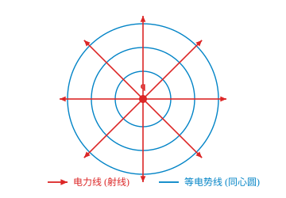
热传导模型
设 $U(x, y, z, t)$ 是某一均匀介质（密度为 $\rho$）上的无热源的温度场，显然它是数量场．设 $\Omega$ 为场内任意一个区域，边界的定向为外侧．任取 $\partial\Omega$ 上面积为 $\mathrm{d}S$ 的曲面微元，设它在指定侧的单位法向量为 $n$，我们先看在时间 $\mathrm{d}t$ 内流过这个曲面微元的热量．由热学知道，热是从介质的较热部分流向较冷的部分，且温度降低得越快，流得也越快，这就是说热向 $-\operatorname{grad} U$ 方向流动，且传导速度与 $-\operatorname{grad} U$ 成正比．因此在时间 $\mathrm{d}t$ 内流过这个曲面微元的热量为（参见关于流量的计算）
$$\mathrm{d}Q = -k(\operatorname{grad} U) \cdot n\,\mathrm{d}S\mathrm{d}t = -k\left(\frac{\partial U}{\partial x}\cos\alpha + \frac{\partial U}{\partial y}\cos\beta + \frac{\partial U}{\partial z}\cos\gamma\right)\mathrm{d}S\mathrm{d}t,$$其中 $\cos\alpha, \cos\beta, \cos\gamma$ 为 $n$ 的方向余弦，$k$ 为介质的热传导系数．这样一来，在时间 $\mathrm{d}t$ 内自 $\Omega$ 通过 $\partial\Omega$ 向外流出的热量为
$$Q = -k\mathrm{d}t\iint_{\partial\Omega} \left(\frac{\partial U}{\partial x}\cos\alpha + \frac{\partial U}{\partial y}\cos\beta + \frac{\partial U}{\partial z}\cos\gamma\right)\mathrm{d}S = -k\mathrm{d}t\iint_{\partial\Omega} \operatorname{grad} U \cdot \mathrm{d}S = -k\mathrm{d}t\iiint_\Omega \operatorname{div}(\operatorname{grad} U)\,\mathrm{d}V,$$最后一步是利用了 Gauss 公式．由于场内无热源，那么时间 $\mathrm{d}t$ 内流入 $\Omega$ 的热量为
$$k\mathrm{d}t\iiint_\Omega \operatorname{div}(\operatorname{grad} U)\,\mathrm{d}V,$$这一热量引起 $\Omega$ 内部的热量变化．
另一方面，对于 $\Omega$ 内体积为 $\mathrm{d}V$ 的立体微元，在时间 $\mathrm{d}t$ 内温度改变 $\mathrm{d}U = \dfrac{\partial U}{\partial t}\mathrm{d}t$ 所需要的热量为
$$c\mathrm{d}U \rho\mathrm{d}V = c\rho\frac{\partial U}{\partial t}\mathrm{d}t\mathrm{d}V,$$其中 $c$ 为介质的比热．那么在时间 $\mathrm{d}t$ 内 $\Omega$ 的温度改变就需要
$$c\rho\mathrm{d}t\iiint_\Omega \frac{\partial U}{\partial t}\,\mathrm{d}V$$的热量．
由于场内无热源，所以流出与流入的热量必相等，即
$$c\rho\mathrm{d}t\iiint_\Omega \frac{\partial U}{\partial t}\,\mathrm{d}V = k\mathrm{d}t\iiint_\Omega \operatorname{div}(\operatorname{grad} U)\,\mathrm{d}V,$$因此
$$\iiint_\Omega \left[c\rho\frac{\partial U}{\partial t} - k\operatorname{div}(\operatorname{grad} U)\right]\mathrm{d}V = 0.$$由于 $\Omega$ 是场内的任意区域，在场内必成立
$$c\rho\frac{\partial U}{\partial t} - k\operatorname{div}(\operatorname{grad} U) = 0.$$注意到 $\operatorname{div}(\operatorname{grad} U) = \Delta U$，那么上式就可表为
$$\frac{\partial U}{\partial t} = a^2\Delta U,$$其中 $a^2 = \dfrac{k}{c\rho}$．这就是说，函数 $U$ 必满足以上方程，它称为热传导方程．
当温度场 $U$ 为稳定场（即与时间无关的场）时，以上方程就是 Laplace 方程
$$\Delta U = 0.$$也就是说，$U$ 是调和函数．
设无热源的温度场 $U$ 为稳定场，那么从以上的讨论知道 $\Delta U = 0$．设 $\Omega$ 为场中一个区域．如果我们将 $U$ 沿 $\partial\Omega$ 的单位外法向方向 $n$ 的方向导数记为 $f$，那么 $U$ 就满足方程
$$\begin{cases} \Delta U = 0, & \text{在 } \Omega \text{ 中，} \\ \dfrac{\partial U}{\partial n} = f, & \text{在 } \partial\Omega \text{ 上，} \end{cases}$$再看看函数 $f$ 需要满足什么条件．由 Gauss 公式得
$$0 = \iiint_\Omega \Delta U\,\mathrm{d}V = \iiint_\Omega \operatorname{div}(\operatorname{grad} U)\,\mathrm{d}V = \iint_{\partial\Omega} \operatorname{grad} U \cdot n\,\mathrm{d}S = \iint_{\partial\Omega} \frac{\partial U}{\partial n}\,\mathrm{d}S = \iint_{\partial\Omega} f\,\mathrm{d}S,$$即函数 $f$ 必须满足 $\iint_{\partial\Omega} f\,\mathrm{d}S = 0$，它称为相容性条件．这个条件很容易理解，因为 $\iint_{\partial\Omega} f\,\mathrm{d}S = \iint_{\partial\Omega} \frac{\partial U}{\partial n}\,\mathrm{d}S$ 就是单位时间内沿 $\partial\Omega$ 的外侧流过 $\partial\Omega$ 的热量，注意到 $U$ 是无热源的稳定场，它当然是 $0$．
习题 14.5
- 设 $\boldsymbol{a} = 3\boldsymbol{i} + 20\boldsymbol{j} - 15\boldsymbol{k}$，对下列数量场 $f(x, y, z)$，分别计算 $\operatorname{grad} f$ 和 $\operatorname{div}(f\boldsymbol{a})$：
- $f(x, y, z) = (x^2 + y^2 + z^2)^{-\frac{1}{2}}$；
- $f(x, y, z) = x^2 + y^2 + z^2$；
- $f(x, y, z) = \ln(x^2 + y^2 + z^2)$．
- 求向量场 $\boldsymbol{a} = x^2\boldsymbol{i} + y^2\boldsymbol{j} + z^2\boldsymbol{k}$ 穿过球面 $x^2 + y^2 + z^2 = 1$ 在第一卦限部分的通量，其中球面在这一部分的方向为上侧．
- 设 $\boldsymbol{r} = x\boldsymbol{i} + y\boldsymbol{j} + z\boldsymbol{k}$，$r = |\boldsymbol{r}|$，求：
- 满足 $\operatorname{div}[f(r)\boldsymbol{r}] = 0$ 的函数 $f(r)$；
- 满足 $\operatorname{div}[\operatorname{grad} f(r)] = 0$ 的函数 $f(r)$．
- 计算 $$\operatorname{grad}\left\{ \boldsymbol{c}\cdot\boldsymbol{r} + \frac{1}{2}\ln(\boldsymbol{c}\cdot\boldsymbol{r}) \right\}$$ 其中 $\boldsymbol{c}$ 是常矢量，$\boldsymbol{r} = x\boldsymbol{i} + y\boldsymbol{j} + z\boldsymbol{k}$，且 $\boldsymbol{c}\cdot\boldsymbol{r} > 0$．
- 计算向量场 $\boldsymbol{a} = \operatorname{grad}\left(\arctan \dfrac{y}{x}\right)$ 沿下列定向曲线的环量：
- 圆周 $(x - 2)^2 + (y - 2)^2 = 1,\ z = 0$，从 $z$ 轴的正向看去为逆时针方向；
- 圆周 $x^2 + y^2 = 4,\ z = 1$，从 $z$ 轴的正向看去为顺时针方向．
- 计算向量场 $\boldsymbol{r} = xyz(\boldsymbol{i} + \boldsymbol{j} + \boldsymbol{k})$ 在点 $M(1, 3, 2)$ 处的旋度，以及在这点沿方向 $\boldsymbol{n} = \boldsymbol{i} + 2\boldsymbol{j} + 2\boldsymbol{k}$ 的环量面密度．
- 设 $\boldsymbol{a} = a_x\boldsymbol{i} + a_y\boldsymbol{j} + a_z\boldsymbol{k}$ 为向量场，$f(x, y, z)$ 为数量场，证明：（假设函数 $a_x, a_y, a_z$ 和 $f$ 具有必要的连续偏导数）
- $\operatorname{div}(\operatorname{rot}\boldsymbol{a}) = 0$；
- $\operatorname{rot}(\operatorname{grad} f) = 0$；
- $\operatorname{grad}(\operatorname{div}\boldsymbol{a}) - \operatorname{rot}(\operatorname{rot}\boldsymbol{a}) = \Delta\boldsymbol{a}$．
- 位于原点的点电荷 $q$ 产生的静电场的电场强度为 $\boldsymbol{E} = \dfrac{q}{4\pi\varepsilon_0 r^3}(x\boldsymbol{i} + y\boldsymbol{j} + z\boldsymbol{k})$，其中 $r = \sqrt{x^2 + y^2 + z^2}$，$\varepsilon_0$ 为真空介电常数．求 $\operatorname{rot}\boldsymbol{E}$．
- 设 $\boldsymbol{a}$ 为常向量，$\boldsymbol{r} = x\boldsymbol{i} + y\boldsymbol{j} + z\boldsymbol{k}$，验证：
- $\nabla\cdot(\boldsymbol{a}\times\boldsymbol{r}) = 0$；
- $\nabla\times(\boldsymbol{a}\times\boldsymbol{r}) = 2\boldsymbol{a}$；
- $\nabla\cdot((\boldsymbol{r}\cdot\boldsymbol{r})\boldsymbol{a}) = 2\boldsymbol{r}\cdot\boldsymbol{a}$．
- 求全微分 $(x^2 - 2yz)\,\mathrm{d}x + (y^2 - 2xz)\,\mathrm{d}y + (z^2 - 2xy)\,\mathrm{d}z$ 的原函数．
- 证明向量场 $\boldsymbol{a} = \dfrac{x - y}{x^2 + y^2}\boldsymbol{i} + \dfrac{x + y}{x^2 + y^2}\boldsymbol{j}\ (x > 0)$ 是有势场并求势函数．
- 证明向量场 $\boldsymbol{a} = (2x + y + z)yz\boldsymbol{i} + (x + 2y + z)zx\boldsymbol{j} + (x + y + 2z)xy\boldsymbol{k}$ 是有势场，并求出它的势函数．
- 验证：
- $u = y^3 - 3x^2y$ 为平面 $\mathbf{R}^2$ 上的调和函数；
- $u = \ln\sqrt{(x - a)^2 + (y - b)^2}$ 为 $\mathbf{R}^2 \setminus \{(a, b)\}$ 上的调和函数；
- $u = \dfrac{1}{\sqrt{x^2 + y^2 + z^2}}$ 为 $\mathbf{R}^3 \setminus \{(0, 0, 0)\}$ 上的调和函数．
- 设 $u(x, y)$ 在 $\mathbf{R}^2$ 上具有二阶连续偏导数，证明 $u$ 是调和函数的充要条件为：对于 $\mathbf{R}^2$ 中任意光滑封闭曲线 $C$，成立 $\displaystyle\int_C \frac{\partial u}{\partial n}\,\mathrm{d}s = 0$，其中 $\dfrac{\partial u}{\partial n}$ 为沿 $C$ 的外法线方向的方向导数．
- 设 $u = u(x, y)$ 与 $v = v(x, y)$ 都为平面上的调和函数，令 $F = \sqrt{u^2 + v^2}$，证明当 $p \ge 2$ 时，在 $F \ne 0$ 的点成立 $$\Delta(F^p) \ge 0.$$
- 设 $B = \{(x, y, z) \mid x^2 + y^2 + z^2 \le 1\}$，$\boldsymbol{F}(x, y, z): \mathbf{R}^3 \to \mathbf{R}^3$ 为具有连续导数的向量值函数，且满足 $$\left.\boldsymbol{F}\right|_{\partial B} \equiv (0, 0, 0),\quad \left.\nabla\cdot\boldsymbol{F}\right|_B \equiv 0.$$ 证明：对于任何 $\mathbf{R}^3$ 上具有连续偏导数的函数 $g(x, y, z)$ 成立 $$\iiint_B \nabla g \cdot \boldsymbol{F}\,\mathrm{d}x\mathrm{d}y\mathrm{d}z = 0.$$
- 设 $D = \{(x, y) \in \mathbf{R}^2 \mid x^2 + y^2 < 1\}$，$u(x, y)$ 在 $\bar{D}$ 上具有连续二阶偏导数，进一步，设 $u$ 在 $\bar{D}$ 上不恒等于零，但在 $D$ 的边界 $\partial D$ 上恒为零，且在 $D$ 上成立 $$\frac{\partial^2 u}{\partial x^2} + \frac{\partial^2 u}{\partial y^2} = \lambda u\quad (\lambda \text{为常数}).$$ 证明 $$\iint_D \|\operatorname{grad} u\|^2\,\mathrm{d}x\mathrm{d}y + \lambda \iint_D u^2\,\mathrm{d}x\mathrm{d}y = 0.$$
- 设区域 $\Omega$ 由分片光滑封闭曲面 $\Sigma$ 所围成，$u(x, y, z)$ 在 $\bar{\Omega}$ 上具有二阶连续偏导数，且在 $\bar{\Omega}$ 上调和，即满足 $\dfrac{\partial^2 u}{\partial x^2} + \dfrac{\partial^2 u}{\partial y^2} + \dfrac{\partial^2 u}{\partial z^2} = 0$．
- 证明 $$\iint_\Sigma \frac{\partial u}{\partial n}\,\mathrm{d}S = 0,$$ 其中 $\boldsymbol{n}$ 为 $\Sigma$ 的单位外法向量；
- 设 $(x_0, y_0, z_0) \in \Omega$ 为一定点，证明 $$u(x_0, y_0, z_0) = \frac{1}{4\pi}\iint_\Sigma \left( u \frac{\cos(\boldsymbol{r}, \boldsymbol{n})}{r^2} + \frac{1}{r}\frac{\partial u}{\partial n} \right)\,\mathrm{d}S,$$ 其中 $\boldsymbol{r} = (x - x_0, y - y_0, z - z_0)$，$r = |\boldsymbol{r}|$．